Ocular Disease: the study script
Prof. Yudcovitch's twelve eyelid lectures in one place: every condition with its signs, cause, diagnosis and treatment, the pictures, and a self-check.
Each fact carries its source: Lecture the slides (Lecture N · p. = page of the NOTES file) · Your notes found only in your own lecture notes, so check it · Exam on your exam review notes (Guidelines) or stressed in Prof. Yudcovitch's audio review (Audio · mm:ss).
The exam: 25 multiple-choice questions from this course (plus 25 from Dr. Goodwin), with pictures; often a patient photo where you give the diagnosis or the treatment. Guidelines · p. 1 · Audio · 02:45–04:09
Cover the right-hand columns and recall them before you read them. Name each photo before you read its caption.
Contents
- Introduction to lid disease
- Blepharitis
- Parasitic lid disease
- Meibomianitis & skin
- Hordeolum, chalazion & cysts
- Preseptal & orbital cellulitis
- Allergic lid disease
- Lacrimal diseases
- Lid shape abnormalities
- Eyelid muscle abnormalities
- Thyroid eye disease
- Atypical eyelid bumps
Introduction to lid disease
The lid anatomy every later chapter leans on: which muscle opens and closes the lid, which nerve drives it, which gland makes which part of the tears, and the SOAP way of writing a case.
Lecture 1 is the groundwork. The guidelines and the audio review test these points from it:
- Exam "Cranial nerves and which one can affect the eyelid" → §3. In the review: the facial nerve (CN VII) causes Bell's palsy; CN III is the oculomotor nerve, its palsy turns the eye "down and out" and is "more associated with diabetes"; Bell's palsy "can be due to stroke, … a virus, … idiopathic". Guidelines · p. 1 · Audio · 06:24–07:07
- Exam "What tear layer is secreted by the meibomian glands (lipid (oil))" → §4. Review: "the lipid or oil or sebum … that keeps those tears stable". Guidelines · p. 2 · Audio · 11:35
- Exam "Other eyelid glands and what they secrete (Zeis, Moll, sebaceous, lacrimal – water)" → §4. Review: Zeis and Moll make oils that lubricate the lashes; a sebaceous gland makes a "cheesy white" material; all the lid glands (Zeis, Moll, meibomian) are modified sebaceous glands; the lacrimal gland sits laterally and makes the aqueous (water) part, "the tap". Guidelines · p. 2 · Audio · 15:07–15:56
- Exam The three tear layers, added in the review "that could be on the exam": mucin (bottom, on the cornea) · aqueous (the big middle layer) · oil (top). Audio · 16:01–16:42
The exam format, said in the same review: 25 multiple-choice questions from this course, with pictures, often "what is the diagnosis" or "how would you treat it". Guidelines · p. 1 · Audio · 02:45–04:09
1 · SOAP: how a case is written
Every lecture in this course is laid out in SOAP order, so learn the four letters once. Lecture 1 · p. 2
| Letter | Stands for | Also called | Contains |
|---|---|---|---|
| S | Subjective | symptoms | everything the patient says |
| O | Objective | signs | everything the doctor observes and all the test results |
| A | Assessment | diagnosis (or diagnoses) · "impression" Your notes | what is wrong with the patient |
| P | Plan | treatment | for each diagnosis, what will be done to help the patient |
Lecture 1 · p. 2. Your notes write "(dry eye)" beside the assessment line as an example diagnosis and "(impression)" as its other name.
2 · The three lid muscles
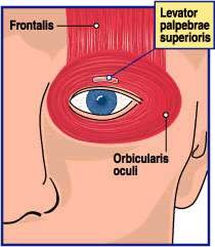
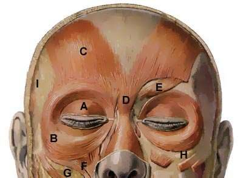
| Muscle | Type | Action | Nerve | Detail |
|---|---|---|---|---|
| Orbicularis · palpebral portion | striated | closes the lid: blinking and voluntary winking | facial nerve (CN VII) | keeps the lid tight to the globe. Your notes: "keeps the eye safe" Your notes Lecture 1 · p. 4, 6 |
| Orbicularis · orbital portion | striated | closes the lid: forced closure | facial nerve (CN VII) | "when you squint eyes tightly" Your notes Lecture 1 · p. 4, 6 |
| Levator (aponeurosis) | striated | opens the lid | oculomotor nerve (CN III) | its fibres pass through the orbicularis to attach to the skin Lecture 1 · p. 10 |
| Müller's muscle | smooth | opens the lid | sympathetic system | originates from the underside of the levator; inserts into the superior tarsus. Your notes: "sup. · inf. · opens and keeps open lid" Your notes Lecture 1 · p. 10 |
Rule of thumb from the table: closing = orbicularis = CN VII; opening = levator (CN III, striated) + Müller (sympathetic, smooth). The lid also contains both muscle types: striated and smooth (Müller). Lecture 1 · p. 4, 10, 21 The orbicularis also runs through the lower lid and "closes the eye lid from below" Your notes. Lecture 1 · p. 9
3 · The facial nerve and Bell's palsy Exam
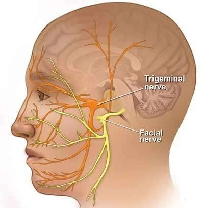
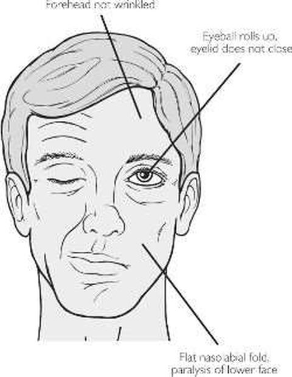
| CN VII makes… | Lost in Bell's palsy (same side) |
|---|---|
| the eyelids close | the lid does not close; the eyeball rolls up |
| the mouth and cheeks "smile" | flat nasolabial fold, lower face paralysed |
| the forehead "furrow" | forehead not wrinkled |
Lecture 1 · p. 7–8
- Exam Bell's palsy = facial nerve (CN VII). Causes named in the review: stroke, a virus, or idiopathic ("no reason whatsoever"). Audio · 06:24–07:07 Your notes add zoster, dental procedures, trauma, a car accident, and "most common cause: idiopathic" Your notes. Lecture 1 · p. 8 (your notes)
- Exam CN III = oculomotor nerve: it innervates the levator (lid opening). A CN III palsy leaves the eye "down and out" and is "more associated with diabetes". Lecture 1 · p. 10 · Audio · 06:46–06:53
- The slide shows Bell's palsy only as pictures (a drawing and a patient photo); the lecture text gives no treatment. Lecture 1 · p. 8
4 · Structure of the lid, and the glands Exam
| Structure | What it is | Key fact |
|---|---|---|
| Tarsal plate | dense fibrous connective tissue | gives the lid its structural integrity; upper plate about 1 cm high × 2.5 cm wide, lower plate smaller Lecture 1 · p. 11 |
| Orbital septum | sheet attached peripherally to the periosteum at the orbital margin | centrally fuses with the levator aponeurosis (upper lid) and the tarsal plate (lower lid); a diaphragm separating orbital structures from lid structures. Your notes: "orbital – can be dangerous if infected" Your notes (see chapter 6) Lecture 1 · p. 20 |
| Lid layers | skin · conjunctiva · loose connective tissue · mucocutaneous junction | your notes mark the "gray line" at the margin Your notes Lecture 1 · p. 15 |
| Eyelid skin | epidermis, dermis, hair follicles with sebaceous glands, sweat glands, blood supply | the thinnest skin of the body. Your notes: epidermis "no bleed", nerves "pain if you go with a needle", dermis "collagen, bleed" Your notes Lecture 1 · p. 18 |
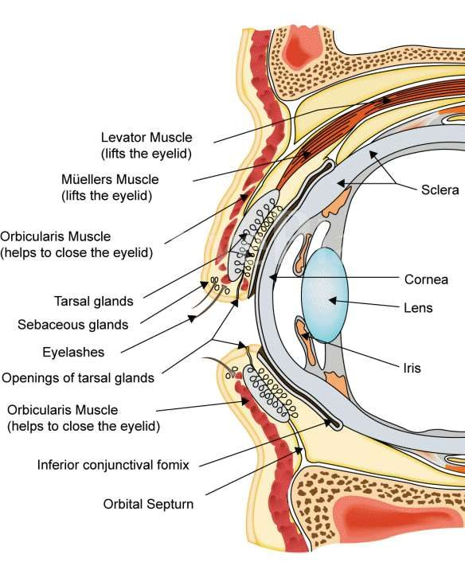
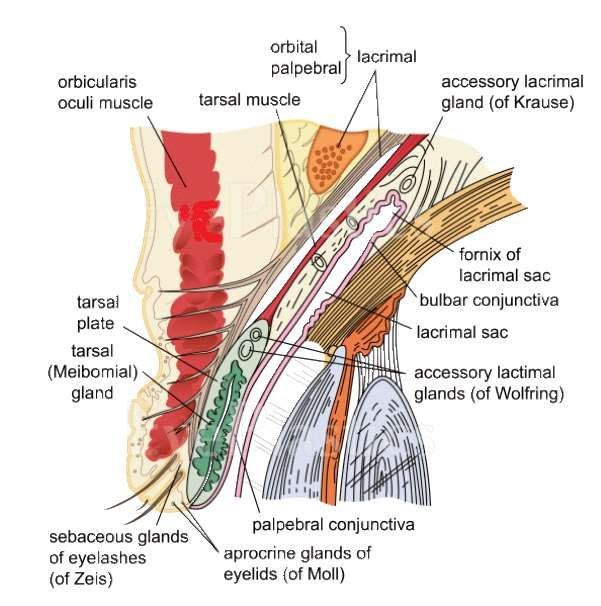
Which gland makes what
| Gland | Where | Secretes | Detail |
|---|---|---|---|
| Meibomian Exam | in the tarsus, about 25 per tarsus; opening just behind the lashes | sebum (lipid, oil) = the oily layer of the tear film | a sebaceous gland. Your notes: "dry eye!" Your notes Lecture 1 · p. 13, 17 · Audio · 11:35 |
| Zeis Exam | with each lash follicle | oils for the lash follicles | the sebaceous gland of the lash; unilobular Lecture 1 · p. 14, 17 · Audio · 15:13 |
| Moll Exam | anterior to the Zeis glands | "oils as well"; marked "sweat" on the anatomy slide | aka ciliary gland; the slide lists "sweat gland aka sudoriferous gland" under it Lecture 1 · p. 14, 17 · Audio · 15:13 |
| Goblet cells | in the conjunctival epithelium; abundant at the plica semilunaris (caruncle); none on the limbus or the mucocutaneous junction | mucin | Lecture 1 · p. 16 |
| Krause | near the fornix | basal aqueous secretion (slide) | accessory lacrimal gland Lecture 1 · p. 16 |
| Wolfring | near the tarsus | basal aqueous secretion (slide) | accessory lacrimal gland Lecture 1 · p. 16 |
| Lacrimal Exam | laterally, above the eye | aqueous (water): "the tap" | only the lacrimal gland has reflex secretion (tearing); Krause and Wolfring only assist it. Your notes: "water of our tears · most of our tears!" Your notes Lecture 1 · p. 16 · Audio · 15:31–15:56 |
The slide says the glands of Krause and Wolfring give basal aqueous secretion. Lecture 1 · p. 16 In the review the professor said they "secrete the mucin", then accepted a student's addition of the goblet cells, and said "that could be on the exam". Audio · 15:56–16:35 The resources do not settle it. If a question asks which cells make mucin, goblet cells are safe on both counts. If it asks about Krause and Wolfring, read the options carefully.
Audio · 16:01–16:30 · Lecture 1 · p. 13, 16
All the lid glands (Zeis, Moll, meibomian) are modified sebaceous glands. A plain sebaceous gland, found anywhere on the body, makes a "cheesy white" material. Audio · 15:19–15:31
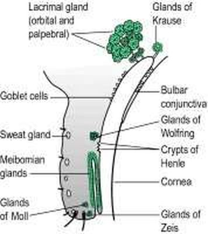
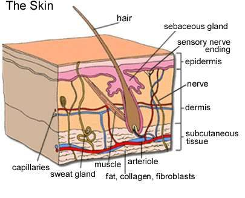
5 · So many structures, so many diseases
The lid holds skin, hair, fascia, striated and smooth muscle, glands, nerves, conjunctiva and connective tissue: "lots of structures for disease to occur". Lecture 1 · p. 21 The lecture sorts lid disease into nine groups, which the next eleven lectures fill in:
| Group | Taught in |
|---|---|
| Position / shape | chapter 9 |
| Inflammation · infection | chapters 2, 4, 5, 6 |
| Allergy | chapter 7 |
| Gland dysfunction | chapters 4, 5, 8 |
| Neurological | chapter 10 |
| Autoimmune | chapter 11 |
| Cancer | chapter 12 |
| Trauma | (named only) |
Lecture 1 · p. 22 (the group list); the "taught in" column is this script's mapping to the subject's chapter titles.
Key facts
Close = orbicularis (striated, CN VII): palpebral = blink and wink · orbital = forced closure
Open = levator (striated, CN III) + Müller (smooth, sympathetic, into the superior tarsus)
Bell's palsy = CN VII · "down and out" = CN III (diabetes)
~25 meibomian glands per tarsus → lipid (oil, sebum) · tarsal plate 1 × 2.5 cm
Goblet cells → mucin · lacrimal gland → aqueous, the only reflex tearing
Eyelid skin = thinnest of the body
Self-check
What goes in S, O, A and P?
Which nerve closes the lid, and which disease shows its loss?
Name the two lid-opening muscles with their type and innervation.
Which portion of the orbicularis works in a blink, and which in forced closure?
A CN III palsy leaves the eye in which position, and which systemic disease is it associated with?
What do the meibomian glands secrete, which tear layer is it, and where do they open?
Which gland is the only one with reflex tearing, and what does it make?
Where are goblet cells abundant, where are there none, and what do they make?
What does the orbital septum attach to, and what is its job?
List the three tear layers from the cornea outward, with their source.
Sources for this chapter: Lecture 1 "Introduction to Lid Disease" (NOTES, pp. 1–23, with your notes) · Exam guidelines pp. 1–2 · Audio exam review 02:45–16:42.
Blepharitis
Inflammation of the lid margin: the staphylococcal form in full (signs, corneal complications, treatment step by step), then seborrheic, mixed, meibomian seborrheic and angular blepharitis.
- Exam "Signs of bacterial eyelid infection": discharge (pus) · lashes (crust / flakes / madarosis / trichiasis) · lids (thickened, notched, red) · blood vessels → §3. Review: pus is "dead white blood cells"; madarosis = lash loss ("I'm mad I lost my lashes"); trichiasis = inward-turning lashes ("tricky eyelashes"); lids "thickened, hardened, red"; telangiectatic vessels. Guidelines · p. 1 · Audio · 07:07–07:52
- Exam "What bacteria mainly cause blepharitis (Staphylococcus)" → §2. Guidelines · p. 1 · Audio · 08:01–08:22
- Exam "Treatment of blepharitis (warm compress …)" → §5. Review: warm compresses soften the crusts and flakes, lid scrubs wash them off, antibiotic ointment "if it's a severe blepharitis". Guidelines · p. 1 · Audio · 08:22–08:38
- Exam "Corneal punctate epithelial erosion (PEE)" → §4. Review: divots and pits where epithelial cells are missing or damaged; fluorescein pools in them and glows. Guidelines · p. 1 · Audio · 09:26–10:00
- Exam Marginal infiltrate, stressed in the review: a white dot at the corneal edge near the limbus = migrated white blood cells; treated with a steroid–antibiotic combination (the steroid clears the white cells, the antibiotic protects). Audio · 08:38–09:26
1 · The kinds of blepharitis
| Kind | Centred on | Forms |
|---|---|---|
| Anterior | the eyelashes and follicles | staphylococcal · seborrheic · mixed |
| Posterior | the meibomian glands and gland orifices (your notes: "behind eyelashes, the openings" Your notes) | meibomian seborrheic · meibomian gland dysfunction (aka meibomianitis, meibomitis: chapter 4) |
| Angular | the lid corners (canthi) | staphylococcal · Moraxella. Your notes: "uncommon · angle where 2 lids meet in the corner" Your notes |
Lecture 2 · p. 3. The lecture opens with the SOAP slide (chapter 1) and follows that order for each form.
2 · Staphylococcal blepharitis: cause Exam
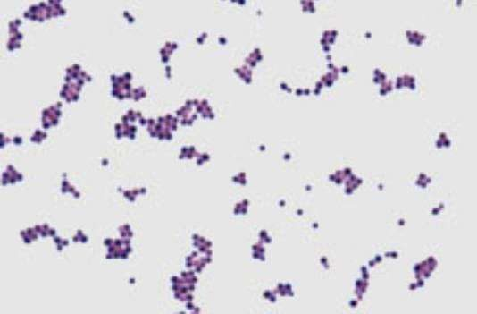
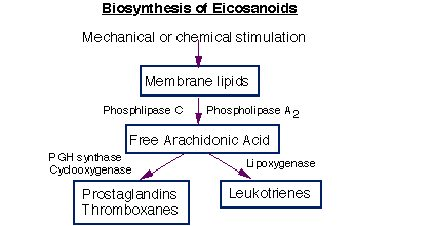
| Step | What happens |
|---|---|
| Infection | of the lash follicles and lid margins with Staphylococcus aureus and/or an overgrowth of S. epidermidis Lecture 2 · p. 4 |
| Normal flora | S. epidermidis is normally present on the lid margins of most people; S. aureus on those of a small number Lecture 2 · p. 4 |
| Body's response | inflammatory response by the body Lecture 2 · p. 4 |
| Second mechanism | the bacteria make lipase → breaks down the lipids in the tears → free fatty acids (FFAs) → trigger an inflammatory and irritative response Lecture 2 · p. 5 |
The slide: S. epidermidis is normal flora of most people, S. aureus of a small number. Lecture 2 · p. 4 The review: "Staphylococcus aureus is our number one natural flora on our eyelids and it causes a lot of good infections we see on the eyelid". Audio · 08:09–08:22 Both agree on the exam answer: blepharitis is mainly caused by Staphylococcus. Exam
Inflammation and pus
Presence of pus = bacterial infection. PMNs = polymorphonucleocytes (white blood cells). Lecture 2 · p. 6 Exam Review: "The main bacterial discharge from the eye is pus, which is dead white blood cells." Audio · 07:07–07:19
3 · Staphylococcal blepharitis: symptoms and signs Exam
| Subjective (symptoms) · depend on severity | Objective (signs) |
|---|---|
| chronic irritation and burning foreign body sensation (FB) tender lids (may have recurrent hordeola or chalazia) crusts on the lashes, noticed by the patient lids stuck together in the morning red, irritated lids |
crusts along the lash line at the base of the lashes = dried pus (p. 8–10) crust can encircle the lash = collarette (p. 11) crust at the lash base can also look "oily" (p. 12) infected follicles and madarosis (loss of lashes) (p. 13–14) ulcers at the base of the lashes (p. 15) damaged follicles → trichiasis (p. 16–17) red and thickened lid margins (tylosis), indurated (hardened) over time (p. 18) secondary conjunctivitis, usually papillary (p. 19) PEE in the inferior third of the cornea (p. 20–21) |
Lecture 2 · p. 7–21
| Where | Sign | Meaning |
|---|---|---|
| Discharge | pus | dead white blood cells + protein clot |
| Lashes | crusts / flakes | dried pus at the lash base; soften with warm compresses |
| Lashes | madarosis | loss of lashes |
| Lashes | trichiasis | lashes pointing towards the cornea, which may scratch it |
| Lids | thickened (tylosis), notched, red, hardened (indurated) | mostly chronic disease |
| Blood vessels | telangiectatic vessels on the margin | chronic inflammation |
Guidelines · p. 1 · Audio · 07:07–07:52 · Lecture 2 · p. 8–18
Your notes grade the severity of each photo, from "trace to 1" to "4+" Your notes; the slides themselves give no grading scale. Lecture 2 · p. 8–10, 14 (your notes)
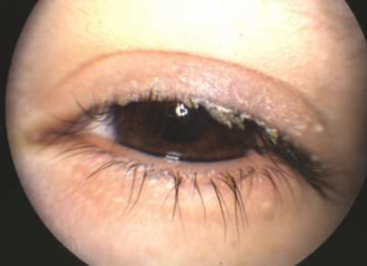
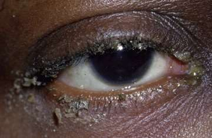
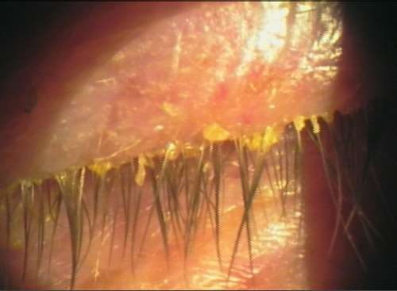
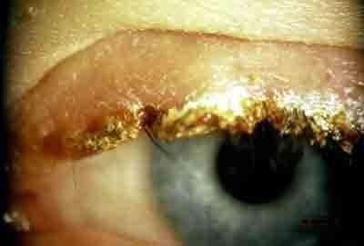
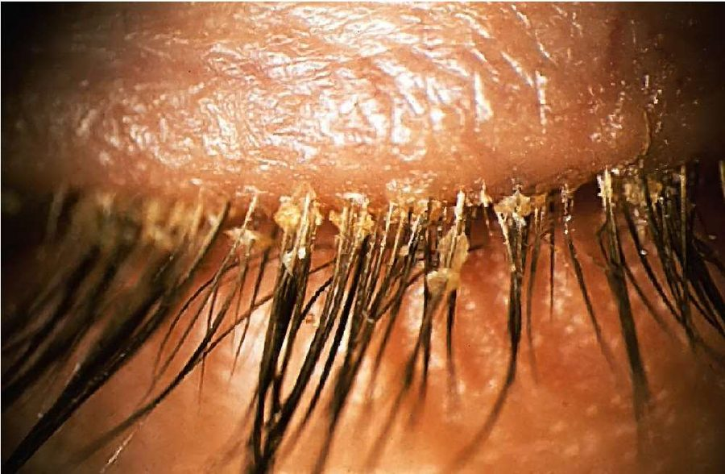
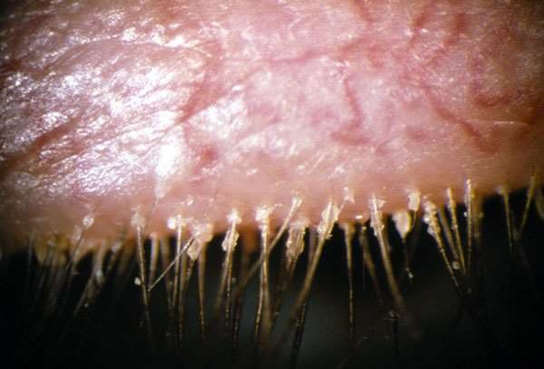
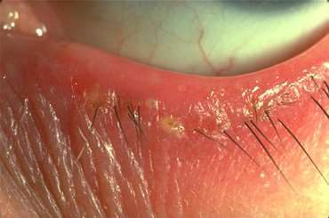
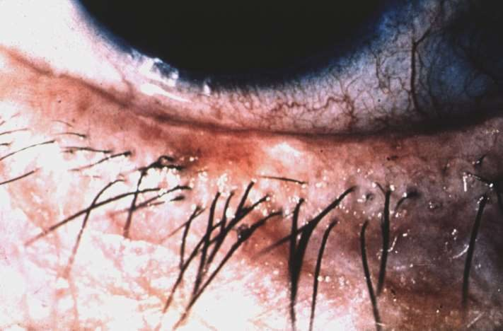
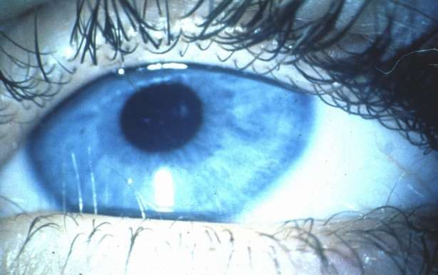
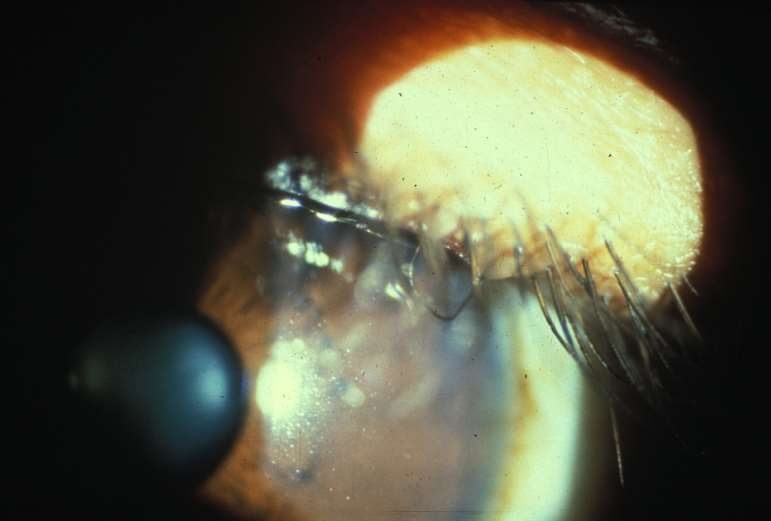
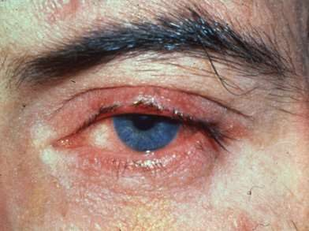
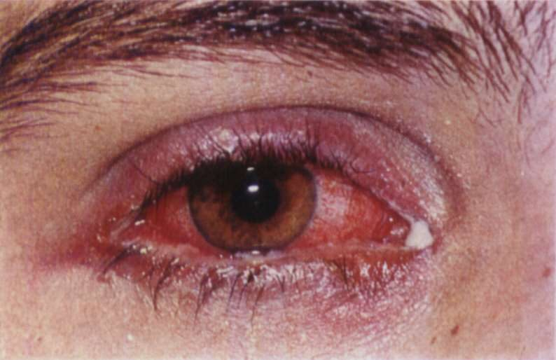
4 · The cornea in staph blepharitis Exam
| PEE (punctate epithelial erosions) | Marginal infiltrate | Phlyctenule | |
|---|---|---|---|
| What it is | divots in the corneal epithelium (aka SPK, superficial punctate keratopathy) | white blood cells in the cornea between epithelium and stroma (subepithelial) | raised white lesion on the conjunctiva, limbus or cornea |
| Cause | reaction to bacterial exotoxins | hypersensitivity to staph toxins: antigen (staph product) + antibody (made in the conjunctiva) + complement (from limbal vessels) → C3a and C5a call white cells from the limbal vessels | hypersensitivity to staph toxins, type IV reaction |
| Where | inferior third of the cornea | corneal periphery, with a clear area between it and the limbus | conjunctiva, limbus or cornea; can move over the cornea, pulling vessels and scarring as it goes |
| Fluorescein | stains (green with the cobalt blue filter) | does not stain; when the white cells die their enzymes can damage the epithelium above, which then stains in a sporadic punctate pattern | not stated |
| Treatment | treat the blepharitis | treat the blepharitis + topical steroid q2h–qid (prednisolone acetate, dexamethasone, loteprednol) or an antibiotic/steroid combination (tobramycin + dexamethasone = Tobradex; tobramycin + loteprednol = Zylet) q2h–qid | the same as the marginal infiltrate |
Lecture 2 · p. 20–21, 33–40
- Exam PEE, in the review: "divots and pits in the epithelial layer … the epithelium is gone. The fluorescein pools within it", seen as glowing spots at the slit lamp; tonometry tips touching the cornea also cause it. Audio · 09:26–10:00
- Exam Marginal infiltrate, in the review: "a little white dot at the edge near the limbus"; an infiltrate is "a migration of white blood cells". "The steroids get rid of infiltrates … and the antibiotic is there for protection." Audio · 08:38–09:26
- Phlyctenule: some years ago a primary cause was tuberculosis (recent immigrants from TB-endemic areas, or people with locally acquired active TB); now staphylococcus is once again a primary cause. Lecture 2 · p. 41
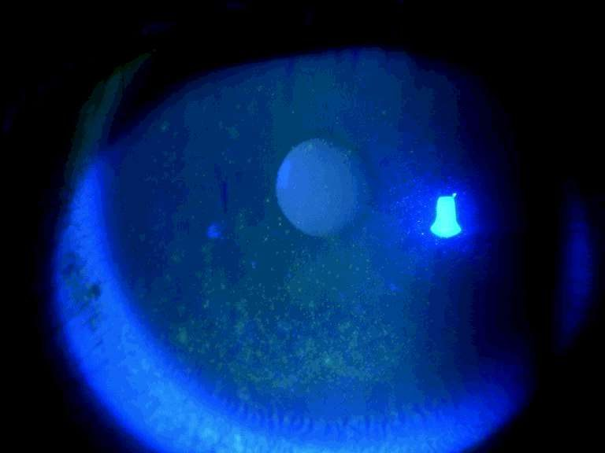
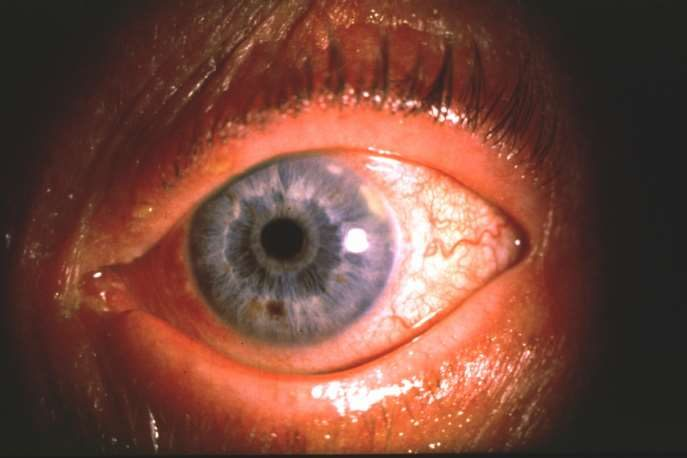
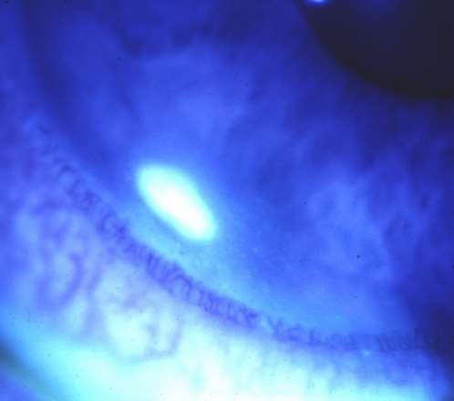
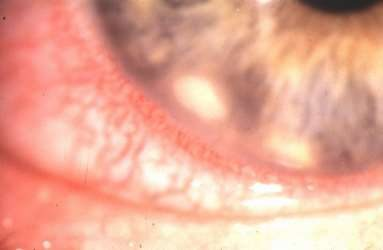
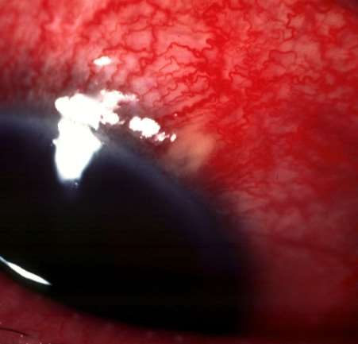
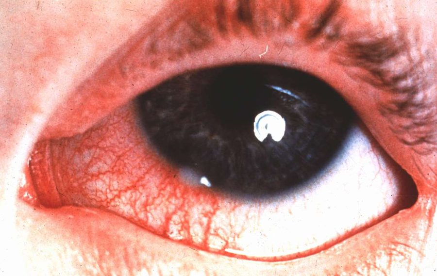
Diagnosis of staph blepharitis is usually clinical; severity dictates the treatment. Lecture 2 · p. 22
5 · Treating staphylococcal blepharitis Exam
Lid hygiene has three aims: remove crusts, remove bacteria, increase blood circulation to the lid margin. It is a two-step process. Lecture 2 · p. 23
| Step | How | Detail |
|---|---|---|
| Warm compresses | soak the closed lids with a warm, wet compress, 10–15 min bid–qid | soften the crusts (review); your notes: "hot / warm water, to moist crusts" Your notes Lecture 2 · p. 24 · Audio · 08:22 |
| Lid scrubs | scrub the lid margins bid–qid after the compresses | diluted baby shampoo and water, or commercial cleansers, or hypochlorous acid 0.02% Lecture 2 · p. 24 |
| Baby shampoo (the "old" way) | diluted 1:1 with water, gentle oval scrubbing of the margin and lash base of the closed lid for 1 minute, then fresh-water rinse (or with a washcloth or cotton-tip applicator) | not recommended anymore, due to its drying effects Lecture 2 · p. 25 |
| Hypochlorous acid 0.02% | Ocusoft HypoChlor, spray or gel, as needed or daily, can be used with lid wipes | spray often in the morning, gel at night; generic versions exist Lecture 2 · p. 26 |
| Antibiotic ointment on the lid margins | bacitracin (cell wall inhibitor) · erythromycin (macrolide) · gentamicin, tobramycin (aminoglycosides) | moderate: qhs or bid · severe: tid or qid Lecture 2 · p. 27 |
| Lubricants | artificial tears qid or prn | for dry eye secondary to the lid condition Lecture 2 · p. 29 |
| Oral antibiotic | doxycycline 100 mg PO bid × 7–10 days | only when unusually severe. Tetracyclines inhibit bacterial lipase synthesis; doxycycline inhibits staph exotoxin-induced cytokines and chemokines; helpful even if the bacteria are resistant. Your notes: "usually rosacea + blepharitis" Your notes Lecture 2 · p. 29 |
| BlephEx (Rysurg) | a medical-grade disposable micro-sponge spins along the lid edges and lashes | removes scurf/debris and exfoliates; proparacaine first, eyes rinsed after; 6–8 minute procedure Lecture 2 · p. 31–32 |
Bacitracin ophthalmic ung (= ointment, Your notes) · Dispense one 3.5 g tube · Apply 1/4 inch to each lid margin of both eyes twice a day for 10 days · No refill. Lecture 2 · p. 28
Dosing words on these slides: bid–qid, written in your notes as "2× a day – 4× a day" Your notes; also tid, qhs, prn, q2h and PO. The slides use them without spelling them out. Lecture 2 · p. 24, 27, 29, 37
| Follow-up | Patient education |
|---|---|
| 1–3 weeks depending on severity and medications; consider another 2–3 weeks later; if the cornea is involved, follow-up in days | chronic condition with exacerbations and remissions · goal: to control, not cure (your notes: "NO CURE!" Your notes) · daily lid hygiene · medication for acute flare-ups |
Lecture 2 · p. 30
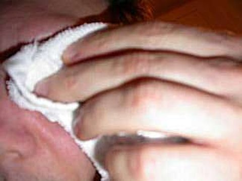
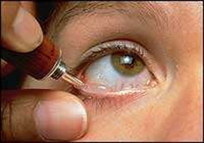
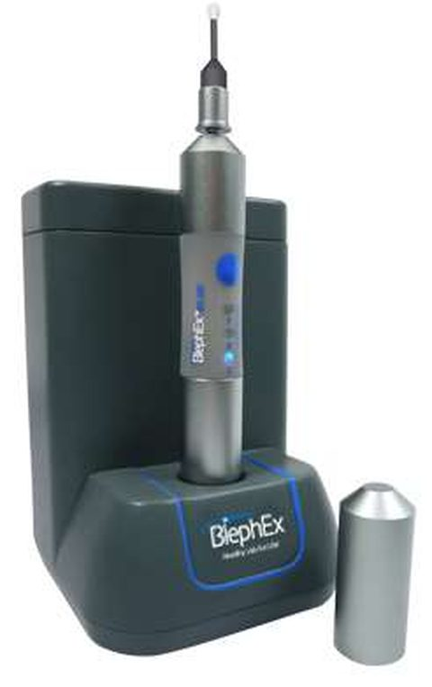
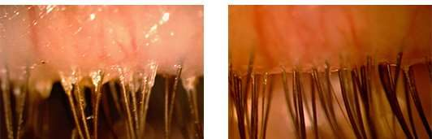
6 · The other forms
| Seborrheic | Mixed | Meibomian seborrheic | Angular | |
|---|---|---|---|---|
| Cause | unknown; often with seborrheic dermatitis (chronic skin disorder where sebaceous glands are abundant; dandruff = scurf) | seborrheic blepharitis + staphylococcal superinfection | unknown; excessive oil of abnormal quality | Moraxella lacunata · S. epidermidis · S. aureus |
| Symptoms | frequently asymptomatic; possible morning "mattering"; dry eye complaints (poor tear film) | as staph | dry eye complaints | chronic lid irritation |
| Signs | greasy, waxy scales at the lash bases that flake off easily (dandruff-like, scurf); lid skin a little greasy; interpalpebral PEE | as staph | frothing of tears, "oil slick" in the tear film, TBUT may be reduced, conjunctival injection, lid tissue normal | localised eczematoid inflammation at the outer canthus (sometimes medial); skin drying, scaling, cracking; may involve the conjunctiva |
| Treatment | lid hygiene, lubricants; follow-up 2–4 weeks; educate on chronicity; daily lid hygiene | same as staph blepharitis | keep the lid margins clean; lubricants | antibiotic ointment for all forms; Moraxella: zinc sulfate 0.25% solution; staph: bacitracin or erythromycin; may need to try different antibiotics |
Lecture 2 · p. 42–53
| Angular form | Look |
|---|---|
| Staphylococcal | dry and scaly |
| Moraxella | wet: macerated lid with a whitish, frothy discharge |
Lecture 2 · p. 51
| Staphylococcal | Seborrheic | |
|---|---|---|
| Debris | hard crusts of dried pus; collarettes | greasy, waxy scales that flake off easily (scurf) |
| Lid margin | red, thickened, ulcers, madarosis, trichiasis | skin a little greasy |
| PEE | inferior third of the cornea | interpalpebral; your notes: "more in the middle of cornea" Your notes |
| Symptoms | burning, FB, tender lids, lids stuck in the morning | frequently asymptomatic; morning mattering; dry eye |
| Follow-up | 1–3 weeks (days if the cornea is involved) | 2–4 weeks |
Lecture 2 · p. 7–21, 30, 43–47
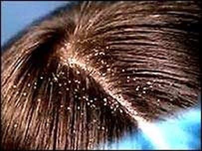
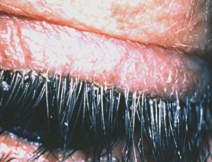
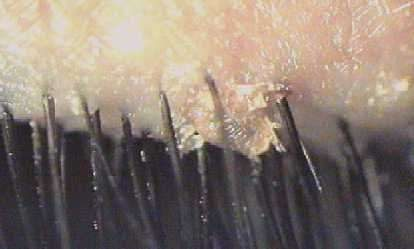
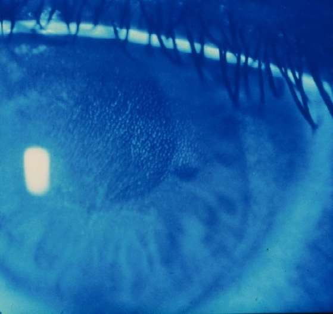
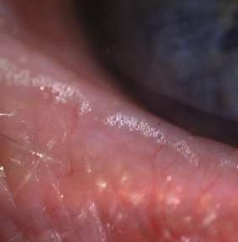
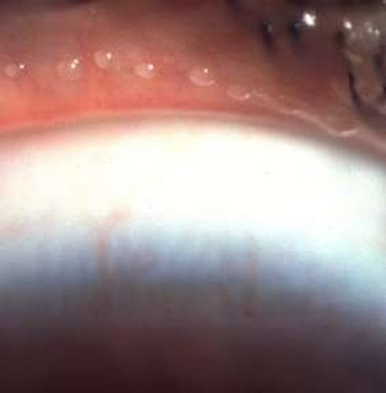
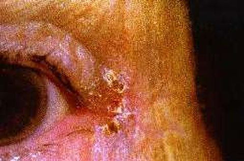
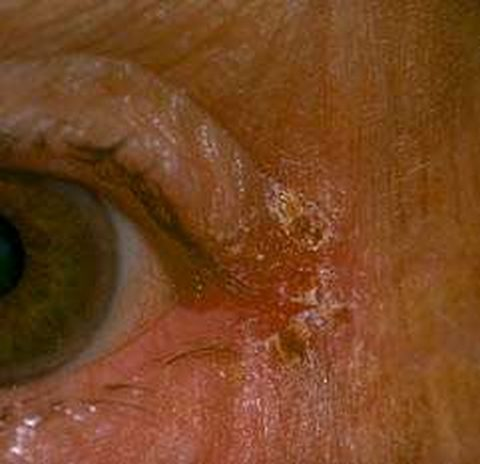
Key facts
Staphylococcus = main cause · pus = dead PMNs + protein = bacterial infection
Warm compresses 10–15 min bid–qid → lid scrubs → ± antibiotic ointment (bacitracin, erythromycin, gentamicin, tobramycin) → ± doxycycline 100 mg PO bid × 7–10 d
PEE: inferior third (staph) vs interpalpebral (seborrheic); stains
Marginal infiltrate: clear zone to the limbus, does not stain, steroid or steroid–antibiotic (Tobradex, Zylet)
Phlyctenule: type IV, was TB, now staph again
Angular: Moraxella (wet) → zinc sulfate 0.25% · staph (dry) → bacitracin or erythromycin
Chronic: control, not cure
Self-check
Anterior vs posterior blepharitis: what is each centred on, and which forms belong to each?
List the signs of bacterial lid infection the exam guidelines name.
How does staph cause inflammation besides infecting the follicles?
What are crusts, and what is a collarette in staph blepharitis?
Give the two steps of lid hygiene with timing.
When is oral doxycycline used, at what dose, and why does it work even on resistant bacteria?
Marginal infiltrate vs PEE: where, does it stain, why?
How is a marginal infiltrate or a phlyctenule treated?
What used to be a primary cause of phlyctenule, and what is now?
Seborrheic blepharitis: what do you see, and where is the PEE?
Meibomian seborrheic blepharitis: signs and treatment?
Angular blepharitis: two forms and their treatment?
Sources for this chapter: Lecture 2 "Blepharitis" (NOTES, pp. 1–54, with your notes; your annotated copy has 8 extra pages from another course after p. 7, so its page numbers run 8 higher from slide 8 on) · Exam guidelines p. 1 · Audio exam review 07:07–10:00.
Parasitic lid disease
Two infestations of the lashes: Demodex mites (demodicosis) and lice (phthiriasis / pediculosis palpebrarum). How to spot each, and which drug or procedure clears it.
- Exam "Which of the following prescription medications is indicated to treat Demodex": the professor's own sample question, options neomycin, bacitracin, lotilaner, acyclovir → lotilaner (Xdemvy). He gives the generic name in questions. Guidelines · p. 1 · Audio · 04:38–06:03
- Exam "Hallmark sign of Demodex blepharitis (collarettes)": the triangular cuff at the lash base where the mites hide; have the patient look down at the slit lamp to see them on the upper lid. Guidelines · p. 2 · Audio · 10:00–10:54
- Exam "Demodex treatment drops (tea tree oil / 4-terpineol, lotilaner)", with "more toxic" under tea tree oil: lotilaner is the prescription drug; tea tree oil (containing 4-terpineol) is over the counter; tea tree oil is more toxic because it contains other substances, so warn about irritation. Guidelines · p. 2 · Audio · 10:54–11:35
1 · Demodex: the mite
Demodex infestation (demodicosis), aka mites: infestation of the eyelids, and also facial hair and eyebrows. Your notes: "infestation, not inflammation" and "spider related" Your notes. Lecture 3 · p. 2–3, 6
| Age | 0–25 years | 26–50 years | 51–90 years |
|---|---|---|---|
| Prevalence | 29% | 53% | 67% |
Nearly ubiquitous, and more common with age ("older you are, more chances you have to get it" Your notes). Contributing factors: mother–infant transmission (nursing), a compromised immune system, and a possible "vector theory" of spreading staph infection (a question mark on the slide). Lecture 3 · p. 2
| Demodex folliculorum | Demodex brevis | |
|---|---|---|
| Shape · size | cigar shaped, 0.28–0.44 mm | shorter, stubbier, 0.16–0.21 mm |
| Social | colonial (3+ per follicle) | solitary |
| Lives in | upper section of the hair (lash) follicle | sebaceous glands (meibomian) |
| Causes | collarettes / cuffs: the best clinical diagnostic sign | damage and plugging of the gland → dry eye, chalazion |
Lecture 3 · p. 3. Your notes over a lid photo: "you can have both" Your notes (Lecture 3 · p. 11).
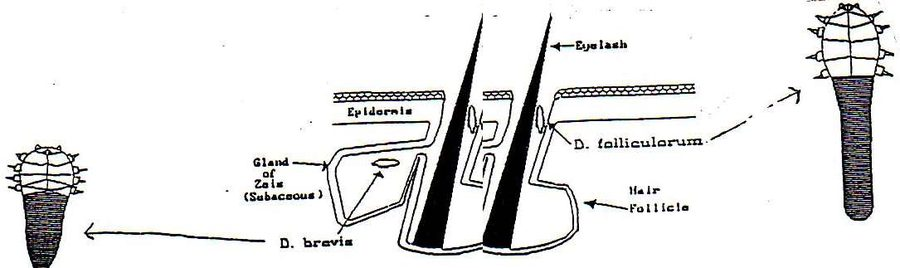
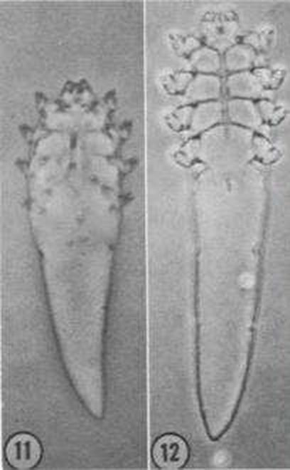
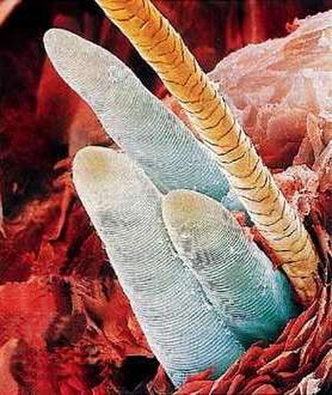
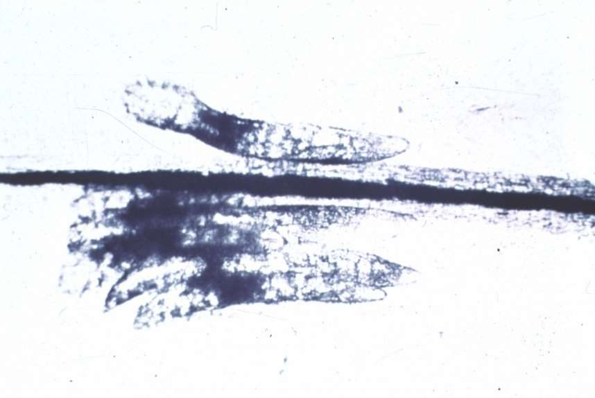
Life cycle and behaviour
- Life cycle 14–18 days; a female lays up to 10–12 eggs at a time → overpopulation if unmanaged. Lecture 3 · p. 6
- Demodex avoids light: it buries head-first in follicles or glands, with only the tail visible at the lash follicle opening. Lecture 3 · p. 6
- It lays eggs and ingests the gland lining → follicular base distension and trichiasis. Lecture 3 · p. 6
- Debris collects at the lash roots as a gelatinous cylindrical "sleeve" = cylindrical dandruff (CD) at the lash base: pathognomonic for mite infestation. Lecture 3 · p. 6–7
Lecture 2 calls a staph crust that encircles a lash a "collarette". Lecture 2 · p. 11 Lecture 3 calls the Demodex collarettes/cuffs the best clinical diagnostic sign and the cylindrical dandruff sleeve pathognomonic. Lecture 3 · p. 3, 6 The guidelines and the review settle it: the hallmark of Demodex blepharitis is collarettes, the triangular base around the lash where the mites hide. Exam Guidelines · p. 2 · Audio · 10:00–10:28
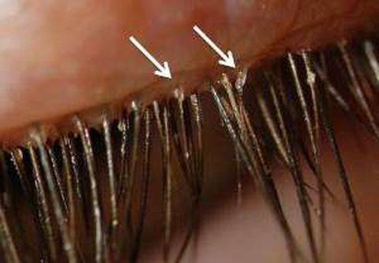
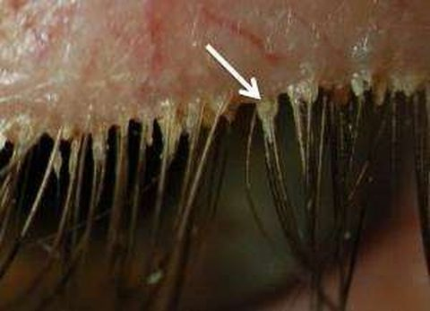
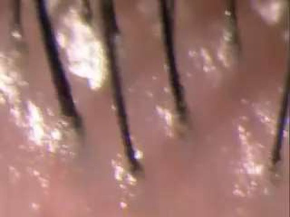
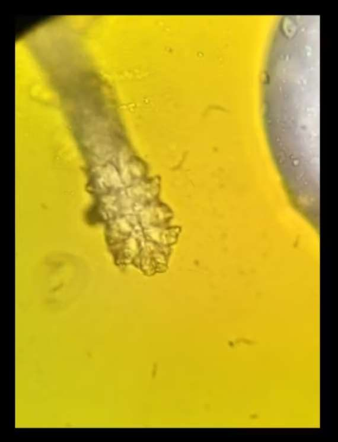
2 · Demodex: symptoms, signs, diagnosis
| Subjective | Objective | Assessment |
|---|---|---|
| itching, especially in the morning burning crusting swelling of the lid margins lash loss your notes: "most are asymptomatic" Your notes |
lid margin erythema conjunctival injection blepharitis cuffing around the lashes plugging of the meibomian glands lash loss = madarosis (blank on the slide, filled in your notes) |
case history patient's age clinical signs |
Lecture 3 · p. 10, 14
- Have the patient look down: the collarettes on the upper lid show better at the base of the lashes than in straight-ahead gaze. Audio · 10:28–10:54
- Tugging (epilating) a lash brings the mites out with it. Audio · 10:09–10:23 · Lecture 3 · p. 9, 14
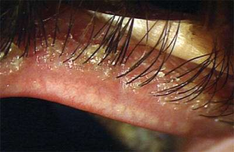
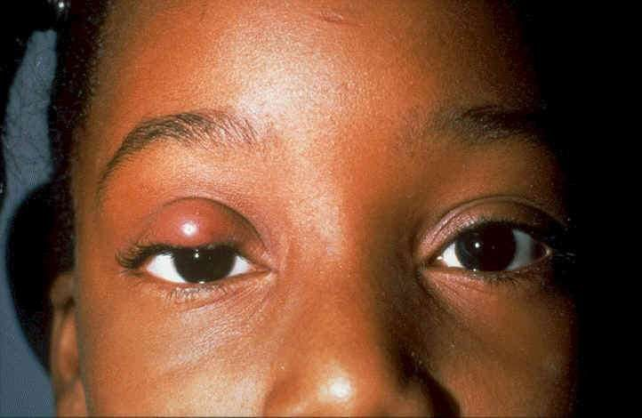
3 · Demodex: treatment Exam
| Option | What it is | How used |
|---|---|---|
| In-office | aggressive lash scrubs | in the office Lecture 3 · p. 14 |
| Lid hygiene | tea tree oil products "may work" | daily Lecture 3 · p. 14 |
| Ointment at bedtime | ung hs × 10–14 days, bland and viscous | your notes: "to suffocate" the mites Your notes Lecture 3 · p. 14–15 |
| Anti-microbial | for any super-infection | Lecture 3 · p. 14 |
| Tea tree oil | from the leaves of Melaleuca alternifolia, an Australian tree | OTC; more toxic than lotilaner (other substances) → warn the patient about irritation, stop if it occurs Exam Lecture 3 · p. 15 · Audio · 10:59–11:30 |
| Cliradex (Bio-Tissue) | natural, preservative-free lid, lash and facial cleanser with the specific tea tree oil component 4-terpineol: more potent miticidal than tea tree oil as a whole, may reduce the adverse effects of the other components; "scientifically proven to eliminate Demodex"; safe daily. Your notes: "chemical that destroys" Your notes | towelette qAM & qHS × 2 weeks, then HS until no signs; clean lids, margins, lashes, periocular area; keep the eyes closed 1 min to air dry Lecture 3 · p. 16 |
| Ocusoft Oust Demodex Swabstix | natural oils: tea tree oil, sea buckthorn, coconut oil | help remove adult mites and their offspring Lecture 3 · p. 17 |
| Xdemvy = lotilaner 0.25% Exam | prescription ophthalmic solution (Tarsus Pharmaceuticals), FDA approved July 2023 (Saturn-1 and Saturn-2 trials): about 50% of patients down to ≤ 2 collarettes, about 60% with mites completely eradicated by 6 weeks. Your notes: "best way to kill it!!" Your notes | 1 drop both eyes twice daily (q12h) for 6 weeks; side effects: sting/burn 10%, punctate keratitis/stye < 2% Lecture 3 · p. 18–19 |
Mite lifespan 2–3 weeks; a female lays about 20 eggs in a single lash follicle in that time. Patients need several weeks (6–8 weeks in some cases) of treatment and maintenance. Immunocompromised patients may retain more mites for longer; mites may produce immunologic suppressants. Lecture 3 · p. 20
The review: lotilaner (prescription) and tea tree oil / 4-terpineol (over the counter) are "both … twice a day for about six weeks". Audio · 11:09–11:21 The Cliradex slide gives qAM and qHS for 2 weeks, then at bedtime until clear. Lecture 3 · p. 16
| Demodex | Staphylococcal (chapter 2) | |
|---|---|---|
| Agent | mite (infestation) | bacterium (infection) |
| Main symptom | itching, especially in the morning | burning, FB sensation, lids stuck in the morning |
| Lash sign | collarettes / cuffs; cylindrical dandruff sleeves (pathognomonic) | crusts of dried pus; ulcers; collarette-like crust |
| Prescription drug | lotilaner 0.25% bid × 6 weeks | antibiotic ointment (bacitracin, erythromycin…); doxycycline if severe |
Lecture 2 · p. 7–29 · Lecture 3 · p. 3–18 · Audio · 04:46–06:03
4 · Lice: phthiriasis / pediculosis palpebrarum
Eyelid infestation with lice; also called phthiriasis ciliaris or ciliary phthiriasis. Lecture 3 · p. 21
| Louse | Common name | Movement | Detail |
|---|---|---|---|
| Phthirus pubis | crab louse (pubic louse) | localised | the classic lid louse; your notes: "looks like a crab", "hangs on lashes, doesn't go in" Your notes; phthiriasis may be considered an STD Lecture 3 · p. 21–25 |
| Pediculus corporis | body louse | free-moving | lives in clothing seams (photo); a vector of serious diseases (typhus) Lecture 3 · p. 21, 26 |
| Pediculus capitis | head louse | free-moving | nits glued to scalp hair; life cycle about 2 weeks (egg → 3 nymph instars → adult); your notes: "could be a health issue in some living area" Your notes Lecture 3 · p. 21, 27–30 |
Nits = eggs, cemented to the hair ("attached to human hair" Your notes). Lecture 3 · p. 21, 30
Symptoms and signs
| Subjective | Objective |
|---|---|
| itching red eye insomnia, irritability occasional preauricular lymphadenopathy |
nit cases on the lashes crusty lid margins madarosis conjunctival injection lid oedema, erythema adults (lice) seen on the lashes; your notes: "can also cause a bleeding" Your notes |
Lecture 3 · p. 31–36
Treatment
| For the lids (ocular) | Detail |
|---|---|
| In-office mechanical removal | remove the lice and nits Lecture 3 · p. 37 |
| Ointment tid × 10–14 days | erythromycin, tobramycin, bacitracin, other antibiotics; Vaseline / petrolatum ointment Lecture 3 · p. 37 |
| Parasympathomimetics | physostigmine 0.25% (Eserine) ung, 2 applications 1 week apart; or pilocarpine ointment Lecture 3 · p. 37 |
| Attempted | cryotherapy, argon laser Lecture 3 · p. 37 |
| Less conventional | alcohol-coated cotton swab debridement of the lid margin epithelium (with care) · oral ivermectin 200–400 µg/kg single dose, optional second dose 7–10 days later: off-label but effective, a head-lice treatment; avoid if pregnant or age 0–5 Lecture 3 · p. 40 |
Pediculocidal agents are for NON-ocular areas only. Lecture 3 · p. 37
| Brand | Active ingredient | Kills eggs | Resistance | Price |
|---|---|---|---|---|
| Nix, Rid, Pronto | permethrin / pyrethrin (neurotoxin) | no | possibly | $10–20 |
| LiceMD | dimethicone | no | no | $13–15 |
| Ovide (Rx) | malathion (neurotoxin) | yes (your notes: "only one that kills" Your notes) | not included | $125–153 |
| Ulesfia (Rx) | benzyl alcohol | no | no | $30 |
Lecture 3 · p. 38 (topical anti-parasitic options, for the body and scalp)
Referral · treat family members and sexual contacts · the home environment · patient education · abuse issues (lid lice in a child). Lecture 3 · p. 41
| Demodex | Lice (phthiriasis) | |
|---|---|---|
| Organism | mite, inside the follicle or gland, head-first | insect, holding on to the lashes outside |
| At the lash | collarettes, cylindrical dandruff | nits (eggs) cemented to the lashes; adult lice visible |
| Who | most adults, rising with age | may be sexually transmitted; consider abuse in children |
| Treatment | lotilaner, tea tree oil / 4-terpineol, lash scrubs, bland ointment | mechanical removal, ointment tid, physostigmine; ivermectin; pediculocides only off the eye |
Lecture 3 · p. 3–41
Key facts
Prevalence 29% → 53% → 67% with age · D. folliculorum 0.28–0.44 mm, colonial, follicle · D. brevis 0.16–0.21 mm, solitary, sebaceous gland
Life cycle 14–18 days · lifespan 2–3 weeks · 10–12 eggs at a time, ~20 per follicle · treat 6–8 weeks
Hallmark: collarettes · pathognomonic: cylindrical dandruff
Lotilaner 0.25% (Xdemvy, Rx, July 2023): 1 drop OU bid × 6 weeks · tea tree oil / 4-terpineol OTC, more toxic
Lice: Phthirus pubis (crab, localised, STD) · physostigmine 0.25% × 2, 1 week apart · ivermectin 200–400 µg/kg · malathion the only egg-killer
Self-check
Which prescription medication treats Demodex, and how is it dosed?
What is the hallmark sign of Demodex blepharitis, and how do you see it best?
What is pathognomonic for mite infestation, and where does it come from?
Contrast D. folliculorum and D. brevis.
Tea tree oil vs 4-terpineol vs lotilaner: what is each and which is most toxic?
Why must Demodex treatment last 6–8 weeks?
Name the three lice that can infest the lids, and which is localised.
List the symptoms and signs of lid lice.
How are lid lice treated on the eye?
Which lice product kills the eggs, and where may pediculocides be used?
What else must you consider beyond the eye in lid lice?
Sources for this chapter: Lecture 3 "Parasitic Lid Disease" (NOTES, pp. 1–43, with your notes) · Exam guidelines pp. 1–2 · Audio exam review 04:38–06:03, 10:00–11:35. Slides 39 and 42 (product and patient-leaflet images) carry no text and are not taught here.
Meibomianitis and the skin
Meibomian gland dysfunction and its partner rosacea, how to treat both, the in-office devices, and two red-face infections to tell apart: impetigo and erysipelas.
From the exam guidelines and the professor's audio review, for this lecture:
- Exam "What tear layer is secreted by the meibomian glands (lipid (oil))" Guidelines · p. 2 · the professor: "the lipid or oil or sebum … the oil secreting gland of the eye that keeps those tears stable" Audio · 11:35–11:45 → §2
- Exam "Skin condition associated with meibomianitis (rosacea)" Guidelines · p. 2 · the professor: not everyone with meibomianitis has rosacea, but people with rosacea are very likely to have meibomianitis Audio · 11:45–12:12 → §3
- Exam The oral treatment for rosacea or meibomianitis is doxycycline, "a tetracycline antibiotic", usually 100 mg twice a day for about a month, then tapered; he does not expect to ask doses Audio · 12:17–12:37 → §4, §7
- Exam "Corneal punctate epithelial erosion (PEE)" Guidelines · p. 1 · pits in the epithelium where cells are missing; fluorescein pools in them Audio · 09:26–10:00 → §5 (PEE is an ocular sign of rosacea)
- Exam "How would you treat it, diagnoses" and "pictures": expect a photo and a question on the diagnosis or the treatment Guidelines · p. 1 · Audio · 02:24–04:09 → every table here ends in treatment; the photos are in each section
The audio does not name impetigo, erysipelas, LipiFlow or IPL: they are taught (scope = the whole lecture) but not flagged.
1 · SOAP: how the lecture structures a case
| Letter | Means | Holds |
|---|---|---|
| S | Subjective = symptoms | everything the patient says |
| O | Objective = signs | everything the doctor observes, and all test results |
| A | Assessment = diagnosis (or diagnoses) | what is wrong with the patient |
| P | Plan | for each diagnosis, what will be done to help the patient |
Lecture 4 · p. 2
2 · Meibomian gland dysfunction: what goes wrong
MGD is not considered an infectious entity. It starts with altered gland metabolism; bacteria arrive later. Lecture 4 · p. 3 Your note on the title slide: "-itis" = inflammation. Your notes
Lecture 4 · p. 3
The meibomian glands make the lipid (oil, sebum) layer of the tears. Exam Guidelines · p. 2 · Audio · 11:35 The professor's three layers: mucin at the bottom (glands of Krause and Wolfring, goblet cells), the big aqueous layer (lacrimal gland), oil on top (meibomian). Audio · 15:51–16:35
3 · Rosacea: the skin partner of MGD
MGD is often associated with (acne) rosacea. Exam Lecture 4 · p. 4 · Guidelines · p. 2 The direction matters: rosacea → very likely meibomianitis; meibomianitis → rosacea only sometimes. Audio · 11:57–12:12
| Topic | From the slides |
|---|---|
| Etiology | chronic inflammatory disorder involving skin and eye; sebaceous glands Lecture 4 · p. 4 |
| Who | "Celtic", northern ancestry (genetic component); adults 30–60; >30% have ocular problems Lecture 4 · p. 4 · your note: "EU – common" Your notes |
| Erythema | redness in the "facial flush area" Lecture 4 · p. 5 |
| Papules and pustules | in the flush areas Lecture 4 · p. 6 · your note: "mozoljčki" (pimples), white blood cells Your notes |
| Telangiectasias | visible (dilated) small blood vessels on the nose or cheeks Lecture 4 · p. 9 |
| Rhinophyma | red, bullous nose; sebaceous gland hypertrophy Lecture 4 · p. 10 · your note: "getting bigger and bigger, swelling the nose"; W.C. Fields (1880–1946) "famous for RHINOPHYMA"; rosacea does "not necessarily" mean a bigger nose Your notes Lecture 4 · p. 11 |
Papule vs pustule
| Papule | Pustule | |
|---|---|---|
| Looks | red, inflamed lesion on the skin surface; no pus, no white head | the typical "pimple": red, inflamed, white head; sometimes a brownish core as a cap on the pus head |
| What happens | high break in the follicle wall; cellular debris and bacteria spill into the dermis | follows a papule after white blood cells invade |
| Contents | — | white cap = pus, sebaceous matter and cellular debris |
| Course | often progresses to a pustule (your note: "like a pimple" Your notes) | — |
Lecture 4 · p. 7–8
4 · Treating facial rosacea
| Treatment | Dose and course |
|---|---|
| Doxycycline (oral) | 100 mg bid × 4–6 weeks Lecture 4 · p. 12 · a tetracycline antibiotic; "classically" the pill for rosacea Exam Audio · 12:17–12:37 |
| Metronidazole gel (topical) | 0.75% bid × 5–8 weeks (the slide spells it "metrodiazole") Lecture 4 · p. 12 |
Triggers to avoid
| Group | Triggers |
|---|---|
| Diet, well known | hot spices, alcohol, heated beverages |
| Diet, lesser known | chocolate, tomatoes, citrus fruits |
| No significant effect | dairy products (milk, cheese) |
| Environment | sun exposure, strong winds, strenuous exercise, change in humidity/weather |
| Emotion | stress, fear, anxiety, embarrassment |
| Other | Helicobacter pylori (bacteria linked with stomach ulcers); vasodilators (both underlined in red in your notes) Your notes |
Lecture 4 · p. 13
5 · Ocular rosacea
| Where | Manifestations |
|---|---|
| Lids and glands | meibomian gland dysfunction · blepharitis (staph blepharitis, madarosis) · hordeolum · chalazion · inflammation and infection of the lids |
| Tears and conjunctiva | poor tear film · conjunctival injection · conjunctivitis |
| Cornea | PEE (SPK) Exam · keratitis · corneal vascularization · corneal thinning — your notes: "can cause loss of sight", "new vascularization" Your notes |
Lecture 4 · p. 14–17
PEE (punctate epithelial erosions): divots and pits in the epithelial layer, where epithelial cells are missing or damaged; fluorescein pools in them and glows as dots at the slit lamp. The professor's lab example: PEE after tonometry. Do not confuse with a marginal infiltrate, a white dot of white blood cells at the corneal edge, treated with a steroid-antibiotic drop (from the blepharitis lecture). Exam Guidelines · p. 1 · Audio · 08:38–10:00
| Problem | Treatment |
|---|---|
| MGD | warm compresses, lid scrubs, gland expression (your note: "excessive" heat is not wanted Your notes) |
| Blepharitis | same as staphylococcal blepharitis |
| Keratitis | artificial tears / ointments; steroids if severe inflammation |
| Follow-up | without corneal involvement: weeks · with corneal involvement: days |
| Patient education | lid hygiene · dietary restrictions (triggers) · environmental triggers |
Lecture 4 · p. 18–19
6 · MGD at the slit lamp and its diagnosis
| Finding | Detail |
|---|---|
| Gland images | normal vs abnormal meibomian glands (your note: "IR images" Your notes) Lecture 4 · p. 20 |
| Plugged glands | meibomian "caps" on the orifices Lecture 4 · p. 21 · your note: "it is dry, like a glue on top when it dries out" Your notes |
| Other signs | significant pouting of the glands · inflammation of the lid around them · serrated lid margin · tarsal conjunctival streaking · conjunctival injection Lecture 4 · p. 22 |
| Diagnosis | usually clinical: forced expression of the glands; "toothpaste" test: thickened secretions are forced out of some glands; many glands yield no visible secretion; thickened secretions in the tears Lecture 4 · p. 24 |
Your notes on expression: normal meibum is a "clear oily secretion, not like a toothpaste"; "squeeze it out, prewarm lids"; "(10 s wait, it comes out)"; "upper lid is also good to do it, but it is more uncomfortable". Your notes Lecture 4 · p. 22, 24
7 · Treating MGD
| Step | How and why |
|---|---|
| Warm compresses | soften material on the orifices and the thickened secretions in the glands Lecture 4 · p. 25 · your note: "hot enough and gently!" Your notes |
| Expression (digital massage) | in office and at home; press from the part of the tarsus away from the margin toward the margin (the opening) to open the ducts and express the secretions Lecture 4 · p. 25 · slide 26 shows a meibomian paddle (your note: "Titanium paddle") Lecture 4 · p. 26 |
| Doxycycline | if severe or not responding: 100 mg bid for 6–10 weeks, then taper to the lowest dose or stop; works by inhibiting lipase production Exam Lecture 4 · p. 27 · Audio · 12:17 |
| Also | manage dry eye · look for overlap with staphylococcal and with seborrheic blepharitis and treat both · if rosacea is present, consider a dermatologic consult Lecture 4 · p. 27 |
| Follow-up | 1 week, then 3–4 weeks later Lecture 4 · p. 28 |
| Tell the patient | chronic condition · no cure, management only Lecture 4 · p. 28 |
8 · In-office devices: LipiFlow and IPL
| LipiFlow Thermal Pulsation System | Intense Pulsed Light (IPL) | |
|---|---|---|
| What | in-office meibomian expression device (TearScience) | non-laser, high-intensity light |
| How | heat to the tarsal side, pressure to the skin side; heat and pressure adjustable | hand piece contacts the skin; intensity, duration and wavelengths vary with skin type and goals |
| Effect | expresses the glands; 12-minute sessions | thermal heating of meibum and of superficial telangiectasia; helps ocular rosacea and MGD dry eye; increases the lipid layer and non-invasive TBUT |
| Facts | invented by Donald Korb, O.D.; FDA-approved 7/11/11 | your note: "[?]ful bright light. It is cold" Your notes |
Lecture 4 · p. 29–31
9 · Impetigo and erysipelas
| Impetigo | Erysipelas | |
|---|---|---|
| Cause | skin infection with Staphylococcus aureus or Streptococcus pyogenes | skin infection involving the dermis; Streptococcus pyogenes (your note: impetigo is made from the same and looks alike Your notes) |
| Who | most common in children under 6; sometimes the very elderly; poor hygienic conditions; contagious | most common in the young and elderly; legs and face most often |
| Signs | rash with crusts ("honey crusts") on the face and distal extremities | superficial dermal lymphatics swell → local redness, heat, swelling, raised, indurated border; fever, chills, malaise; painful edematous patches; sharply demarcated; on the face it can continue into the lids |
| Treatment | oral antibiotic after culture and susceptibility testing: cephalosporin, macrolide, dicloxacillin; wash the involved areas; then topical bacitracin or mupirocin | PCP and/or dermatologic consult; penicillin G (injected) or penicillin V (PO) |
| Your notes | "poor water conditions", "poor hygienic", "contagious" underlined | "under epidermis"; "mimic rosacea"; "2nd degree burn"; acute erysipelas can look like rosacea, but rosacea has no fever |
Lecture 4 · p. 32–37
| Rosacea | Impetigo | Erysipelas | |
|---|---|---|---|
| Course | chronic | acute, contagious | acute, systemic |
| Key sign | flush-area erythema, papules, pustules, telangiectasias | honey crusts | sharply demarcated, raised, indurated border; fever |
| Drug | doxycycline + metronidazole gel | cephalosporin / macrolide / dicloxacillin + bacitracin / mupirocin | penicillin G or V |
Lecture 4 · p. 4–13, 32–37
The slides give no mechanism for H. pylori or vasodilators as rosacea triggers, no detail on how the meibography images (slide 20) were taken, no IPL schedule, and no names for the macrolide or cephalosporin. The doxycycline before/after photo (slide 28) uses 20 mg bid, a different dose from the slides' 100 mg. Two of your notes could not be fully placed: "14/14 up/down" (slide 3) and "[?]ful bright light. It is cold" (slide 30).
Key facts
Meibomian glands → lipid layer · rosacea → very likely meibomianitis
Rosacea: Celtic ancestry · 30–60 years · >30% ocular
Doxycycline 100 mg bid: rosacea 4–6 wk · MGD 6–10 wk, taper · metronidazole gel 0.75% bid 5–8 wk
Ocular rosacea follow-up: weeks (cornea clear) / days (cornea involved) · MGD follow-up: 1 wk, then 3–4 wk
LipiFlow: heat tarsal side, pressure skin side · 12 min · Korb · FDA 7/11/11
Impetigo: S. aureus / S. pyogenes · <6 years · honey crusts · Erysipelas: S. pyogenes · dermis · penicillin G (inj) / V (PO)
Self-check
Which tear layer do the meibomian glands make, and which skin condition goes with meibomianitis? Which way does the link run?
Walk through MGD from gland metabolism to inflammation.
Papule or pustule: which has a white head, and what makes one become the other?
Give the facial rosacea treatment and five triggers. Which food has no effect?
What can rosacea do to the cornea, and how fast do you follow it up?
What is PEE, and how does it differ from a marginal infiltrate?
Describe the "toothpaste" test and what it shows in MGD.
List the MGD plan from first step to patient education.
LipiFlow vs IPL in one line each.
A child with honey-crusted lesions; an elderly man with fever and a sharp-edged red cheek. Diagnosis and drug for each?
Sources for this chapter: Lecture 4 "Meibomianitis and Associated Skin Disorders" (NOTES, slides 1–38) · Exam guidelines p. 1–2 · Audio exam review 08:38–12:37 · your ink notes on Lecture 4.
Hordeolum, chalazion and lid cysts
Which gland, which side, tender or not: the acute lid abscess, the chronic lipogranuloma, and the cysts of Moll, Zeis and the skin, with their look-alike xanthelasma.
From the exam guidelines and the professor's audio review, for this lecture:
- Exam "Which gland is affected in internal hordeolum (meibomian)" Guidelines · p. 2 · the professor: the meibomian gland; he calls it a stye; a picture may come with the question, so look for an isolated bump on the lid Audio · 14:41–15:07 → §1, §2
- Exam "Other eyelid glands and what they secrete (Zeis, Moll, sebaceous, lacrimal – water)" Guidelines · p. 2 · the professor: Zeis and Moll secrete oils to lubricate the lashes; sebaceous glands make a cheesy white material and occur anywhere on the body; Zeis, Moll and meibomian are all modified sebaceous glands; the lacrimal gland (superolateral, "the tap") makes water; and, not on his list but "could be on the exam", the glands of Krause and Wolfring and the goblet cells make mucin Audio · 15:07–16:42 → §6
- Exam The professor's sample photo question was a xanthelasma ("what is this eyelid condition?"), and a treatment form of it: refer for chemical removal, cautery or laser Audio · 03:17–04:09 → §5 (the look-alike of the sebaceous cyst)
- Exam "How would you treat it, diagnoses" with "pictures" Guidelines · p. 1 → every lesion here has its treatment row and its photos
Note a mismatch: the lecture slide calls the gland of Moll sweat-secreting; in the audio the professor lumped Zeis and Moll together as oil glands lubricating the lashes. Learn the slide's version (Moll = sweat, Zeis = oil) and know both serve the lashes. Lecture 5 · p. 26, 31 · Audio · 15:07
1 · Hordeolum: the acute lid abscess
| Topic | From the slides | Your notes |
|---|---|---|
| What | an abscess ("bag of pus"); Staphylococcus aureus in 90–95% Lecture 5 · p. 2 · S. aureus is "our number one natural flora on our eyelids" Audio · 08:09 | also called "stye" Your notes |
| External | infection of a gland of Zeis Lecture 5 · p. 2 | |
| Internal | infection of a meibomian gland Exam Lecture 5 · p. 2 · Guidelines · p. 2 | "most of them are internal → become smaller" Your notes |
| Symptoms (S) | localized painful swelling on one eyelid; sometimes starts as generalized lid edema and erythema that later localizes; a history of similar problems is common; constitutional signs and symptoms are inconsistent with a hordeolum Lecture 5 · p. 3 | "the patient will know if they have it"; "doesn't have any flu" Your notes |
| Who | more frequent with diabetes, other debilitating illness, chronic blepharitis, seborrhea, high serum lipids (they raise the blockage rate of sebaceous glands, yet lowering them has not cut recurrences) Lecture 5 · p. 4 | "greasy green"; "fat, cheese and oil in food can also cause hordeolum build-up" Your notes |
2 · External vs internal hordeolum
| External hordeolum | Internal hordeolum | |
|---|---|---|
| Gland | Zeis | meibomian Exam |
| Signs | localized, raised, red bump near the lid margin; tender to touch; points to the skin side | localized, red, raised bump; tender; points to the conjunctival side |
| Course | usually self-limited; most point and drain by themselves; discharge anteriorly, close to the lashes | usually self-limited; most point and drain by themselves; a large one can discharge anteriorly through the skin; infection can spread to the lid connective tissue → preseptal cellulitis |
| Treatment | often none · warm soaks qid for 15 min (mainstay) · topical antibiotics for recurrent or actively draining lesions · epilation of the lash of the infected follicle may enhance drainage | warm soaks qid for 15 min (mainstay) · topical antibiotics for recurrent or draining lesions · surgical drainage of pointed lesions speeds healing · systemic antibiotics only when inflammation spreads beyond the immediate area |
Lecture 5 · p. 5, 9–10, 14–15
Your notes: "active inflammation (HOT)", "tender on the touch because it is warm"; near eruption the head forms and "the skin is thinner"; "in children we see it often: child immune system is still building it"; topical antibiotics "not used that much"; on the large spreading hordeolum: "DO NOT SQUEEZE! harder to treat"; near the tear duct a lesion "can block the lacrimal system, so they can tear up (epiphora)"; take a history (what brings you in, how long) "because it can also be a tumor"; a lower-lid lesion "can cause astigmatism because it pushes on the cornea". Your notes Lecture 5 · p. 5–15
Draining a pointed hordeolum
- External incisions scar: avoid them unless the hordeolum already points externally.
- Internal incisions run vertically, to minimize the area of cornea swept by a scar during blinking.
Lecture 5 · p. 16
3 · Chalazion: the chronic lipogranuloma
| Topic | From the slides | Your notes |
|---|---|---|
| Names | AKA meibomian cyst; some call an internal hordeolum an "acute chalazion" | |
| What | lipogranulomatous infiltration of a meibomian gland; may follow an internal hordeolum | "(can)" follow |
| Signs | firm nodule within the tarsal plate; non-tender, non-inflamed | "not painful, you could flip the lid"; "can last for months; in a child can develop amblyopia, astigmatism"; "it can move from eye to eye"; ask "when it started, does it hurt (while touching)"; "Demodex can cause it, but we can't tell" |
Lecture 5 · p. 17–22
Treatment, in your notes' order
| Step | Detail |
|---|---|
| Warm compresses | 10–15 minutes, at least qid, but q2h better; work best if the lesion is recent |
| Steroid injection | 0.1–0.2 ml triamcinolone injected through the conjunctiva into the lesion · your notes: "you inject it directly, no anaesthetic"; "usually 2× if not better, then" incision and curettage Your notes |
| Incision and curettage | local anesthetic · chalazion clamp · incision from the conjunctival side · curettage (scrape out the material) · topical antibiotic ointment × 2 days |
Lecture 5 · p. 24–25
| Hordeolum | Chalazion | |
|---|---|---|
| Nature | acute abscess, S. aureus | chronic lipogranuloma |
| Gland | Zeis (external) or meibomian (internal) | meibomian |
| Feel | red, tender, warm | firm, non-tender, non-inflamed |
| First step | warm soaks qid 15 min | warm compresses 10–15 min, qid–q2h |
| Then | drainage if pointed; systemic antibiotics only if spreading | triamcinolone injection, then incision and curettage |
Lecture 5 · p. 2–24
4 · Cysts of Moll and Zeis
| Cyst of Moll | Cyst of Zeis | |
|---|---|---|
| Other names | sudoriferous cyst, apocrine hidrocystoma | — |
| Origin | blocked sweat-secreting gland of the cilia (gland of Moll) | blocked oil-secreting gland of the cilia (gland of Zeis) |
| Look | dome-shaped · non-tender · no inflammation · translucent · fluid-filled · anterior lid margin | oily secretions; less translucent than a Moll cyst |
| Treatment | primarily cosmetic; fine-needle aspiration possible, but recurrence is common; excision with removal of the sac to avoid recurrence | not on the slides; your note: "treat like cyst of Moll" |
| Your notes | "not that common"; "fluid filled"; a white lash in the photo = poliosis; slide 29 is "a histological slide of how it looks like" | "more white than cyst of Moll" |
Lecture 5 · p. 26–32
5 · Sebaceous cyst, and its look-alike xanthelasma
| Topic | From the slides | Your notes |
|---|---|---|
| What | an oil gland in the skin is blocked; can be found on any part of the body | "don't bother, but cosmetically" |
| Look | yellowish-white lump with a central punctum; squeezed, it exudes a stringy, cheesy white material | "it is more solid"; "more localized than chalazion" |
| Treatment | primarily cosmetic · the total sac must be removed; if the material is only squeezed out, the cyst reforms · infected → oral antibiotic | |
| Prevention | good hygiene may prevent it; some people are predisposed, so even careful hygiene does not | "also proper diet" |
| Look-alike | differentiate from xanthelasma (aka xanthoma) | xanthelasma: "fatty deposition in both eyes and it is symmetrical. If treated probably will come back" |
Lecture 5 · p. 33–38
Xanthelasma was the professor's own sample exam photo; asked how to treat it, he would refer for chemical removal, cautery or laser. Exam Audio · 03:17–04:09 (Its full teaching is in a later lecture.)
6 · The glands and what they secrete
| Gland | Where | Secretes | Lesion in this chapter |
|---|---|---|---|
| Meibomian | tarsal plate | lipid (oil) tear layer Exam | internal hordeolum · chalazion |
| Zeis | lashes | oil Exam | external hordeolum · cyst of Zeis |
| Moll | lashes | sweat (slide); the professor: oils that lubricate the lashes Exam | cyst of Moll |
| Sebaceous (skin) | skin, anywhere on the body | cheesy white material Exam | sebaceous cyst |
| Lacrimal | superolateral ("the tap") | aqueous (water) Exam | — |
| Krause, Wolfring · goblet cells | conjunctiva | mucin, the bottom layer on the cornea Exam | — |
Zeis, Moll and meibomian glands are all modified sebaceous glands. Lecture 5 · p. 2, 26, 31, 33 · Guidelines · p. 2 · Audio · 15:07–16:42
The slides do not give a treatment for the cyst of Zeis (your note says: as for Moll), do not say what the topical or systemic antibiotics for hordeolum are, and give no detail on the xanthelasma beyond its name. Slide 29 (cyst of Moll) shows a histology image with a broken QuickTime caption; nothing else on it. One of your notes (slide 23) holds no visible ink.
Key facts
Hordeolum: S. aureus 90–95% · external = Zeis, skin side · internal = meibomian, conjunctival side
Warm soaks qid × 15 min · drain with 18-gauge needle / #11 blade · internal incision vertical · systemic antibiotics only if spreading
Chalazion: compresses 10–15 min, qid (q2h better) → triamcinolone 0.1–0.2 ml through conjunctiva → I&C (clamp, conjunctival side, ointment × 2 days)
Moll = sweat, translucent, recurs after aspiration → excise sac · Zeis = oil, less translucent
Sebaceous cyst: punctum, cheesy white · remove total sac · oral antibiotic if infected
Lipid = meibomian · aqueous = lacrimal · mucin = Krause, Wolfring, goblet cells
Self-check
Which gland is affected in an internal hordeolum, and which in an external one?
What organism, what lesion type, and which history and risk factors?
A hordeolum: when do you add topical antibiotics, and when systemic ones?
How do you drain a pointed internal hordeolum, and why that way?
Define a chalazion and say how it feels.
List the chalazion treatment ladder with the details of each step.
Cyst of Moll vs cyst of Zeis: gland, content, look, treatment.
How do you recognize and treat a sebaceous cyst, and how is it different from xanthelasma?
Name each gland and its secretion: meibomian, Zeis, Moll, sebaceous, lacrimal, Krause/Wolfring/goblet.
Sources for this chapter: Lecture 5 "Hordeolum, Chalazia, and Cysts" (NOTES, slides 1–39) · Exam guidelines p. 1–2 · Audio exam review 03:17–04:09, 08:09, 14:41–16:42 · your ink notes on Lecture 5.
Preseptal & orbital cellulitis (+ poliosis, vitiligo)
Two lid infections that look alike from the front: one sits in front of the orbital septum and is treated with pills at home, the other sits behind it and can blind or kill. The lecture closes with two pigment disorders of lids and lashes.
- Exam "ORBITAL cellulitis signs: fever, pupil defect, limited eye movement, proptosis, swollen eyelid" → §6, §9 Guidelines · p. 2
- Exam "Treatment for ORBITAL CELLULITIS" → §8 Guidelines · p. 2
- Exam "Different eyelash conditions" (poliosis is one of the lash conditions he named) → §10 Guidelines · p. 3 · Audio · 19:00
- Exam Audio: orbital cellulitis "is an eye emergency … can cause death … it can go to the brain". The patient has a big fever; "pupils, motilities, and proptosis are really the key important things you need to differentiate" from preseptal, which also gives a swollen eye. Audio · 16:42–17:11
- Exam Audio: pupil defect + limited motility + proptosis = "very likely an orbital": hospitalise, CT scan of the orbits and IV antibiotics, "or they could die". Preseptal: oral medication over a week or so usually does the job. "Definitely know the difference between orbital and preseptal cellulitis." Audio · 17:11–17:37
- Exam Audio: the exam may show a patient photo and ask the diagnosis or "what would you do to treat this condition". Audio · 02:24 · 03:40
1 · The one structure that decides it: the orbital septum
The orbital septum divides the two diseases. Preseptal cellulitis involves the periorbital tissue anterior to the septum; orbital cellulitis is infection of orbital soft tissue posterior to the septum, involving fat and muscles. Lecture 6 · p. 4, 36 (Both blanks on the slides; your notes fill them "anterior" and "POSTERIOR". Your notes)
2 · Preseptal cellulitis at a glance
| Point | Preseptal cellulitis |
|---|---|
| What | relatively common eyelid infection of periorbital tissue anterior to the septum; acute lid edema and erythema; the globe is not affected; sometimes called periorbital cellulitis Lecture 6 · p. 4–5 |
| Severity | more common and less serious than orbital cellulitis; generally mild, rarely serious complications (orbital cellulitis may cause vision loss and even death) Lecture 6 · p. 5 |
| Age | primarily a pediatric disease: about 80% of patients are younger than 10 (in some studies) Lecture 6 · p. 22 |
| Golden rule | "You MUST rule out orbital cellulitis!!!" Lecture 6 · p. 18 Exam |
Your notes: "more common, less urgent than ORBITAL (orbital can kill the patient)"; "Life dangerous"; next to Pupils/APD and EOMs in the comparison table "!!! differencial" Your notes.
Causes: three main sources
| Route | Examples | Notes |
|---|---|---|
| 1 · Direct inoculation | laceration · strabismus surgery · insect bite | typically infection by "Streptococcus aureus" (as printed on the slide) or Streptococcus pyogenes Lecture 6 · p. 6. The blank "through ____" is filled "EYELID" in your notes. Your notes |
| 2 · Spread from nearby local infection | upper respiratory infection (URI) · sinusitis · dacryocystitis · acute hordeolum | Lecture 6 · p. 7 Your notes: dacryocystitis "can be mistaken with hordeolum"; acute hordeolum "if you squeeze it!"; sinusitis = "inflammation of sinuses" Your notes |
| 3 · Hematogenous spread | from a distant source: otitis media · pneumonia | Lecture 6 · p. 9 Your notes: "through the blood" Your notes |
In general: a URI is usually the cause if there is no evidence of trauma or local lid infection; a recent history of URI with or without sinusitis is usually found. Lecture 6 · p. 10
Risk factors: hordeola · chalazia · bug bites · trauma-related lesions · lesions from a recent surgical procedure near the lids · lesions from oral procedures · dacryocystitis. Lecture 6 · p. 11
Hordeolum and chalazion: the two lid bumps that are risk factors
| Hordeolum (stye) | Chalazion | |
|---|---|---|
| Look and feel | swollen lid, sensitive to palpation; an abscess = infectious pus | painless, hard on palpation, no tenderness or inflammation |
| Gland | external = gland of Zeis infection · internal = meibomian gland infection Exam | aka meibomian gland lipogranuloma or meibomian cyst |
| Cause | Staphylococcus aureus in 90–95% | (not given on this slide) |
Lecture 6 · p. 12–13 · Guidelines · p. 2 ("Which gland is affected in internal hordeolum (meibomian)") · Audio · 14:41
Pathogens
| Group | Organisms |
|---|---|
| Most common | Staphylococcus aureus · Staphylococcus epidermidis · Streptococcus species · Haemophilus influenzae Lecture 6 · p. 14. Your notes bracket the first three as "Gram positive" and mark H. influenzae "GRAM negative", "more in the children" Your notes |
| Children, USA, now | the most common bacterial agent identified in children is now Streptococcus pneumoniae (the cited paper: decline of H. influenzae type b disease in the Hib vaccine era) Lecture 6 · p. 15 |
| Biologic warfare concern | smallpox · anthrax Lecture 6 · p. 16 |
| Other potential offenders | tuberculosis · chlamydial conjunctivitis · juvenile idiopathic arthritis (JIA) · Acinetobacter · MRSA (methicillin-resistant S. aureus) Lecture 6 · p. 17. Your notes on MRSA: "(you get it in the gym)" Your notes |
3 · Preseptal cellulitis: findings and diagnosis
| Subjective | Objective |
|---|---|
| red swollen eyelid · lid pain, if present tends to be mild · epiphora · red eye (conjunctivitis) · may have mild to moderate fever Lecture 6 · p. 19 | acute lid erythema · conjunctival injection · tenderness to touch · lid edema · NO pupil defect · NO proptosis · NO EOM restriction (ophthalmoplegia) · NO pain on EOMs · NO diplopia · usually normal VA · NO ONH swelling Lecture 6 · p. 20 |
Your notes on slide 20: "solzenje" (tearing) beside epiphora; "NORMAL (15–16 mm)" beside no proptosis; "H-test" beside no EOM restriction; "no swollen nerve – if yes 112" (the emergency number) Your notes.
Diagnosis: careful examination of the lid tissue for a puncture wound, trauma, lid infection, infectious skin lesions. Lecture 6 · p. 21
Lid swelling and inflammation is present in both preseptal and orbital disease, and can be so severe that the patient cannot open the eye voluntarily. Lecture 6 · p. 23 Your note: "EMERGENCY" Your notes
- Orbital CT necessary if the lids cannot be separated, to evaluate for proptosis, limited motility, VA loss, ONH swelling. Lecture 6 · p. 24
- CT recommended if: orbital involvement cannot be ruled out clinically · fever and leukocytosis · disease progresses despite antibacterial therapy · young children where a reliable exam is difficult. Lecture 6 · p. 25 Your notes: "(flu)", "Blood white cells – blood test", "can't sit still" Your notes
- CT of preseptal cellulitis: soft-tissue thickening of the preseptal region; retro-orbital fat is normal; no orbital inflammation. Lecture 6 · p. 26
4 · Preseptal cellulitis: treatment
| Who / when | Drug | Dose (on the slide) |
|---|---|---|
| Empiric, adults and older children | Amoxicillin/clavulanate (Augmentin) PO | mild–moderate 500/125 mg TID × 10 days · severe 875/125 mg BID × 10–14 days. Must follow up (blank; your note "1 week", "improvement in 2–3 days", "prescribed usually in combination" Your notes) Lecture 6 · p. 27 |
| Mild, children | Amoxicillin/clavulanate | older than 5 (<40 kg): 25–45 mg/kg/day PO in two doses, max 90 mg/kg/day · infants <3 months: 30 mg/kg PO q12h × 10 days · consult the pediatrician on infants and children Lecture 6 · p. 28 |
| Alternative | Clindamycin | covers S. aureus incl. MRSA, S. pneumoniae, most streptococci, anaerobes; poor H. influenzae coverage. Adult 600 mg PO q8h × 10–14 d; pediatric 30–40 mg/kg/day q8h (max 1.8 g/day) Lecture 6 · p. 29 |
| Other option | Ceftriaxone (Rocephin) | 3rd-generation cephalosporin Lecture 6 · p. 30 |
| Penicillin allergy or MRSA exposure | Trimethoprim + sulfamethoxazole (Bactrim) or doxycycline | Bactrim DS (160 + 800 mg) adults 1–2 tabs q12h × 10 d; children >5: 8–12 mg/kg/day TMP + 40–60 mg/kg/day SMX in two doses × 10 d · doxycycline 100 mg PO BID, contraindicated in children, pregnant women, nursing mothers Lecture 6 · p. 31 |
moderate to severe cellulitis · the patient is toxic · the patient is noncompliant · a child younger than 5 · no noticeable improvement or worsening (the blank; your note "worsening" Your notes) after a few days of treatment. Lecture 6 · p. 32
IV examples: ampicillin + sulbactam (Unasyn) · ceftriaxone (Rocephin) · vancomycin if MRSA is suspected. Lecture 6 · p. 33 Your notes: "intravenous"; vancomycin "gram positive, it is strong so not so easily to use 'everyday'" Your notes
Supportive: warm compresses TID–PRN · polymyxin B/bacitracin ointment QID if secondary conjunctivitis · nasal decongestants if sinusitis. Lecture 6 · p. 34
5 · Orbital cellulitis at a glance
Case: a 10-year-old with fever, acute unilateral lid erythema and limited extraocular motions: suspicious for orbital cellulitis. Lecture 6 · p. 35 Your note: "very severe, could be orbital" Your notes
| Point | Orbital cellulitis |
|---|---|
| What | infection of orbital soft tissue posterior to the septum; involves fat and muscles; potentially vision- and life-threatening (your notes fill the blank "DEATH"); less common than preseptal Lecture 6 · p. 36 Exam |
| Who | more common in children than adults; median age of hospitalised children 7–12 years; children 2:1 male:female; adults equal, except MRSA cases: females 4:1 Lecture 6 · p. 37–38 |
| When | tends to occur in winter, because sinusitis is more frequent in cold weather Lecture 6 · p. 38 |
| Outcome if untreated | 11% of cases result in vision loss; untreated it can cause sinus thrombosis (1%) and meningitis (2%), life-threatening Lecture 6 · p. 40 |
Causes
- Bacterial sinusitis (an uncommon complication of it) = the cause of most cases; most cases from ethmoid sinusitis. Lecture 6 · p. 39–40
- Extension of infection from periorbital structures, sinuses and teeth: must ask about recent dental work (the blank; your note "DENTAL" Your notes). Lecture 6 · p. 39–40
- Direct infection of the orbit after trauma or surgery of the lid, strabismus or retinal surgery. Lecture 6 · p. 39
- Hematogenous spread of bacteremia. Lecture 6 · p. 39
| Pathogens | Organisms |
|---|---|
| Bacterial, most common | Streptococcus species · Staphylococcus aureus · Haemophilus influenzae type B · Strep. pyogenes Lecture 6 · p. 41 |
| Fungal, most common | Mucor · Aspergillus Lecture 6 · p. 42. Your notes: "difficult, harder to treat?"; "if they work in vegetated or agro area" Your notes |
6 · Orbital cellulitis: findings
| Subjective | Objective |
|---|---|
| red, swollen eye/lid · fever · malaise · history of recent URI or sinusitis · headache, sinus pain · tooth pain · recent facial trauma, surgery, dental work Lecture 6 · p. 43 red eye · decreased vision · pain on eye movement · EOM restriction*** (ophthalmoplegia) · proptosis*** Lecture 6 · p. 44 |
double vision · orbital pain, tenderness (presents early) · lid edema, erythema · conjunctival chemosis, hyperemia · may have elevated IOP Lecture 6 · p. 45 red discoloration of the lid · nasal discharge may be present · optic disc edema · afferent pupillary defect (+APD) Lecture 6 · p. 46 |
Ophthalmoplegia and proptosis are the key findings of orbital cellulitis; proptosis may be subtle. Lecture 6 · p. 46 Exam Your notes: elevated IOP "because the lid is pressuring"; on the chemosis photo "NOT COMMON"; "look at the nerve if it is swollen" Your notes
7 · Orbital cellulitis: work-up
| Step | What |
|---|---|
| Case history!!! | trauma or surgery? · ear, nose, throat or systemic infection? · tooth pain or recent dental abscess? · stiff neck or mental status changes? · diabetes or immunosuppressive illness? Lecture 6 · p. 47 Your note: "CAN SPREAD TO A NECK" Your notes |
| Eye exam | APD · limitation of or pain with EOMs · proptosis · elevated IOP · decreased color vision · optic nerve or fundus abnormality; plus vital signs, mental status, neck flexibility Lecture 6 · p. 48 Your note: "red desaturation test" Your notes |
| Labs | CBC (count > 15,000) · blood culture · culture from sinuses or orbital abscess · needle aspiration of the orbit contraindicated · lumbar puncture if cerebral or meningeal signs develop Lecture 6 · p. 49 |
| Imaging ESSENTIAL!!! | high-resolution CT with contrast, axial and coronal views; clinicians may hesitate in children (radiation); MRI may be needed for cavernous sinus disease Lecture 6 · p. 50 Your note: "AXIAL PICTURE" Your notes |
Orbital involvement on CT: five stages
Lecture 6 · p. 51 · your note: "just know they are different stages" Your notes
8 · Orbital cellulitis: treatment Exam
| Part | What |
|---|---|
| Hospitalisation!!! | all patients promptly hospitalised until improvement is clear Lecture 6 · p. 52 · Audio: hospitalise, CT of the orbits, IV antibiotics "or they could die" Audio · 17:20 |
| IV antibiotics | IV broad-spectrum antibiotics STAT until the pathogen is identified, for 1–2 weeks, followed by oral therapy for 2–3 weeks; ampicillin-sulbactam is a good initial choice Lecture 6 · p. 52 |
| Suspected anaerobes | penicillin G · cefoxitin · metronidazole · clindamycin · chloramphenicol Lecture 6 · p. 53 |
| Suspected MRSA | vancomycin · cefotaxime · trimethoprim + sulfamethoxazole · clindamycin Lecture 6 · p. 53 |
| Fungal (Mucor, Aspergillus) | potentially lethal; antifungals: amphotericin B (AmBisome) Lecture 6 · p. 54 |
| Surgical drainage IF | poor response in 2–3 days · decreasing VA · a positive APD develops · proptosis progresses despite treatment · abscess does not shrink in 2–3 days · brain abscess not responding to antibiotics → craniotomy Lecture 6 · p. 55 Your note: "ONLY IF ANTIBIOTICS ARE NOT HELPING" Your notes |
| Consult | pediatrician, internist, family physician · infectious disease specialist · ENT if sinusitis is causative Lecture 6 · p. 57 |
9 · Preseptal vs orbital: the comparison table Exam
| Clinical presentation | Preseptal | Orbital |
|---|---|---|
| Eyelid edema | present | almost always present |
| Chemosis | typically absent | may be present |
| Pupils / APD | normal | may be affected Exam |
| EOMs ± diplopia | intact | may be restricted; pain and diplopia on EOMs Exam |
| Visual acuity | rarely affected | may be markedly decreased |
| Proptosis | absent | may be present Exam |
| Color vision | intact | may be diminished |
| Visual fields | intact | may be constricted |
| Pain with eye movement | no | present |
| Fever | maybe present | usually present Exam |
| Eye pain / tenderness | maybe present | yes, maybe deep pain |
Lecture 6 · p. 3, 59 · Guidelines · p. 2 · Audio · 16:42–17:37
Summary slide: preseptal is more common · proptosis and ophthalmoplegia separate the two · most preseptal cases respond to PO antibiotics as outpatients · orbital needs hospitalisation, IV antibiotics, imaging · antibiotics should cover Gram+ and Gram−. Lecture 6 · p. 58
10 · Autoimmune diseases of lids: poliosis and vitiligo
Poliosis Exam
Localized patch of white hair; can affect any hairy area (lashes, brows, scalp); decreased or absent melanin in the hair bulb or follicle. Lecture 6 · p. 61 Named among the eyelash conditions in the review. Audio · 19:00
| Etiology | Conditions (slide wording) |
|---|---|
| Genetic syndromes | Piebaldism: congenital absence of melanocytes of skin and hair, eyes rarely affected · Waardenburg: rare genetic disorder with sensorineural deafness and pigmentary abnormalities · Tuberous sclerosis (TSC): seizures and skin signs at an early age Lecture 6 · p. 62 |
| Acquired | inflammatory conditions · neoplastic (benign and malignant, mainly melanocytic) · medications · others Lecture 6 · p. 63 · vitiligo (chronic polygenic pigmentary disorder, depigmented macules) · Vogt-Koyanagi-Harada (VKH) (T-cell–mediated autoimmune inflammatory disorder) · alopecia (hair loss) · sarcoidosis (inflammatory disease of many organs) · blepharitis Lecture 6 · p. 64 |
| Neoplastic | melanocytic lesions, benign and malignant; poliosis may be the first visible sign of melanoma. Case: a 60-year-old man with a nontender firm mass in the left anterior orbit superonasally and poliosis of the left upper lashes for 3 months Lecture 6 · p. 65 |
Work-up flowchart (slide 67, image only): poliosis circumscripta → underlying lesion? yes → melanocytic lesion or NF · no → suspected medication? yes → medication-induced poliosis · no → syndromic features (especially a child or a positive family history)? yes → TSC, piebaldism, Waardenburg · no → ocular inflammation? yes → VKH, sarcoidosis, blepharitis, Alezzandrini · no → vitiligo, AA, herpes zoster, autonomic cephalgia. Lecture 6 · p. 67 The slides do not expand "NF", "AA" or Alezzandrini; your notes write "Tumor", "Neuro tumor" beside the melanocytic/NF box Your notes.
Plan: treat blepharitis or the other underlying cause · consult and refer if melanoma or a systemic condition is suspected. Lecture 6 · p. 68
Vitiligo
| Point | Vitiligo |
|---|---|
| What | autoimmune, acquired pigmentary disorder of skin; usually bilateral lid presentation; thyroid abnormalities the most common association; frequently a positive family history (30% of cases) Lecture 6 · p. 69 |
| Course | usually presents before age 20 · progressive · asymptomatic · no racial predilection · more obvious in darker skin Lecture 6 · p. 70 · 1–2% of the world population; facial lesions may favor a periocular or perioral distribution Lecture 6 · p. 71 |
| Lesions | white/depigmented macules and patches · round, oval or linear · well demarcated · mm to cm · enlarge outward over time · unpredictable growth rate Lecture 6 · p. 72 |
| Plan | family history · rule out associated syndromes · cosmetic camouflage · sun protection!! · melanocyte stimulation and colour blending with amino acids Lecture 6 · p. 73 · topical steroids · dermatology consult · PUVA (psoralen + UV light, photochemotherapy) · narrow-band UVB (shown to stop or slow active vitiligo) · grafting · depigmentation · others Lecture 6 · p. 74 |
Your notes: "(M. Jackson)" (the slide's "A case of Vitiligo????" shows Michael Jackson); "(a lot of uveitis)" beside VKH; "starts usually on fingers"; by the sunscreen "→ it can progress it" (sun can make it progress) Your notes. The slides do not say where vitiligo starts; check that one.
- Slide 7 blank "nearby local ____" is filled "blood" Your notes: the slide's examples (URI, sinusitis, dacryocystitis, hordeolum) are local infections; spread through the blood is route 3 (hematogenous). Lecture 6 · p. 7, 9
- "Must follow-up 1 week", "improvement in 2–3 days" Your notes: the slide leaves the blank empty. Lecture 6 · p. 27
- Fungal orbital cellulitis "if they work in vegetated or agro area" Your notes: not on the slide. Lecture 6 · p. 42
- Vitiligo "starts usually on fingers" Your notes: not on the slides.
Slides 8, 10, 32, 40 are images only (sinusitis symptom cartoon, a URI photo, a hospital bed, a dentist). Slide 3 is the empty comparison table (filled on slide 59). Slide 6 prints "Streptococcus aureus"; elsewhere the lecture names Staphylococcus aureus. Slide 66 (four poliosis panels) and the photo slides 71 have no text beyond the title.
Key facts
Preseptal: ~80% under 10 · Augmentin 500/125 TID × 10 d (mild–mod) / 875/125 BID × 10–14 d (severe) · hospitalise if child <5, toxic, noncompliant, moderate–severe, not improving
Orbital: median age 7–12 · boys 2:1 · MRSA adults women 4:1 · winter · ethmoid sinusitis · vision loss 11% · sinus thrombosis 1% · meningitis 2% · CBC >15,000 · IV 1–2 wk then PO 2–3 wk · drain if no response in 2–3 days
CT stages: I preseptal · II orbital edema · III subperiosteal abscess · IV orbital abscess · V cavernous sinus thrombosis
Hordeolum: S. aureus 90–95% · Vitiligo: 1–2% of people, before 20, family history 30%
Self-check
Which anatomical structure separates preseptal from orbital cellulitis, and on which side is each?
A swollen red lid: which three signs does Prof. Yudcovitch use to call it orbital?
Name the three main sources of preseptal cellulitis with examples.
First-line oral treatment of preseptal cellulitis in an adult, and the alternatives if allergic to penicillin or MRSA is a concern.
When is a patient with preseptal cellulitis hospitalised, and with which IV drugs?
When is a CT recommended in preseptal cellulitis?
What is the most common cause of orbital cellulitis, and which question must you always ask?
Treat orbital cellulitis: setting, drugs, duration, and when to operate.
List the five CT stages of orbital involvement.
What is poliosis, and which three genetic syndromes cause it?
Describe vitiligo lesions and name three treatments.
Sources for this chapter: Lecture 6 "Preseptal and Orbital Cellulitis" NOTES, pp. 1–75 (with your annotations in the _edited copy) · Exam guidelines pp. 2–3 · Audio exam review 02:24–03:52, 14:41, 16:42–17:37, 19:00.
Allergic lid disease
Five itchy (or not so itchy) skin reactions around the eye: irritant and allergic contact dermatitis, atopic dermatitis, urticaria and angioedema. Know which one itches, which one gets a steroid, and which eye drops cause it.
- Exam "Main allergy symptom (ITCH)" → every section Guidelines · p. 2. Audio: "Main allergy symptom is itch. That's really simple." Audio · 12:37
- Exam "Which contact dermatitis is treated with steroids? (allergic, atopic, eczema)" → §3–§5 Guidelines · p. 2. Audio: the one not treated with steroids is the irritant one (red knuckles after hand-washing); "steroid won't really help that", it calms down with time. Steroids help allergic and atopic/eczema. Audio · 12:56–13:38
- Exam "Topical ophthalmic drugs that may cause allergic contact dermatitis (neomycin, phenylephrine, certain glaucoma drops)" → §4 Guidelines · p. 2. Audio: "the big one is neomycin", an antibiotic; about 20% of users develop a contact dermatitis about five days or more after starting it. Phenylephrine (the dilating drop used in lab) does it, but rarely. Certain glaucoma drops too, "but primarily neomycin is the biggest culprit". Audio · 13:38–14:24
- Exam Audio: the exam may show a photo and ask the diagnosis or the treatment. Audio · 02:24 · 03:40
1 · Background: two types of allergic reaction
| Type I · immediate | Type IV · delayed | |
|---|---|---|
| Mechanism | release of pharmacologically active substances (histamine, eosinophilic chemotactic factor) from IgE-sensitized basophils and mast cells after contact with a specific antigen | sensitized lymphocytes (T-cells) after contact with antigen: direct cytotoxicity or release of lymphokines; cell-mediated |
| Timing | minutes to hours | hours to days |
Lecture 7 · p. 3–4
A key allergic clinical finding: the Dennie–Morgan fold (Dennie–Morgan line), a fold or line in the skin below the lower lid caused by edema in allergic dermatitis. Lecture 7 · p. 5
Your notes: on the title slide "not like chronic, but comes every year (part of the year)"; on "allergen": something that triggers ("sproži") a reaction Your notes.
2 · Contact dermatitis: definitions
A very common immunological disease from direct contact with an environmental allergen. Dermatitis = any inflammation of the epidermis. Contact dermatitis = any skin inflammation when the skin surface contacts a substance from outside the body. Episodes can be triggered by specific events. Lecture 7 · p. 8
3 · Irritant contact dermatitis (ICD)
| Point | Irritant contact dermatitis |
|---|---|
| What | more common form · contact with a substance that directly damages skin · nonspecific response to chemical damage, releasing inflammatory mediators from epidermal cells · within 1–24 hours, can be minutes Lecture 7 · p. 9 |
| Symptoms | history very important · red rash with pain, burning, stinging, discomfort; maybe no itching · often the hands · occupations: cleaning, hospital care, food prep, hairdressing · women > men · irritants: soap and water, solvents, microtrauma, dry air, cleaners Lecture 7 · p. 10 |
| Signs | erythema · edema · glazed, parched, scalded appearance · skin usually dry with scaling Lecture 7 · p. 12 |
| Diagnosis | no diagnostic test: patch test negative · by exclusion of other skin diseases and the look of a site exposed to a known irritant Lecture 7 · p. 12 Your note: patch test "not useful in that type of dermatitis" Your notes |
| Treatment | avoid the irritant (barriers) · non-sensitizing moisturizers (plain petroleum jelly) · mild cleansers (Aquanil, Cetaphil, Neutrogena) · low-irritant soaps (Dove, Cetaphil) · alcohol hand cleansers with moisturizer · avoid harsh solvents or abrasives · NO topical steroids!!! Lecture 7 · p. 14 Exam Your note: "NO STEROID, DON'T HELP" Your notes |
4 · Allergic contact dermatitis (ACD)
| Point | Allergic contact dermatitis |
|---|---|
| What | occurs in sensitized individuals · cell-mediated immune response · requires a latency period · re-exposure precipitates it · response usually in 48 hours Lecture 7 · p. 16 |
| Symptom | history very important · red rash with ITCHING Lecture 7 · p. 16 Exam Your note: "inflammation, cancer, tumor … DO NOT ITCH" Your notes |
| Allergens ("endless") | plants (poison oak*, ivy) · metals (nickel*, gold) · hair products · skin care · rubber/latex · dyes · chromates (leather tanning) · fragrances · preservatives · acrylates · cosmetics Lecture 7 · p. 17 |
| Topical ocular drugs that cause it | antazoline · neomycin · phenylephrine · atropine · pilocarpine · anti-glaucoma drugs Lecture 7 · p. 21 Exam Audio: neomycin is the biggest culprit (~20%, ≥5 days after starting) Audio · 13:38. Your notes: pilocarpine "constricts the p[upil]" Your notes |
| Signs | pruritus (= itch!) · erythema · edema · chemosis of the conjunctiva · vesicles · weeping rash → crusting, scaling → darkened, cracked (fissured), leathery appearance · keratitis may develop Lecture 7 · p. 26 |
| Diagnosis | from the history · patch skin tests: suspected materials applied on patches, left 48 hours, read again between 72 hours and 1 week; positive = erythema, papules, edema, vesicles; correlate with history, location, course · differentiate from many similar rashes Lecture 7 · p. 30 |
| Treatment | remove the allergen · cold compresses 4–6×/day · topical steroid ointment or cream BID–TID for 5–10 days (<1% hydrocortisone) · oral antihistamine (diphenhydramine, Benadryl) · ocular lubricants 4–6×/day for comfort or keratitis · topical immunomodulator BID: pimecrolimus (Elidel cream), tacrolimus (Protopic) Lecture 7 · p. 33 Exam Your note on chemosis slide: "STEROID DROPS" Your notes |
Brimonidine: in the review he named it as the glaucoma drop that causes it most, then added that he did not mention it in the lecture, "so don't worry about that". Audio · 14:24–14:41
5 · Atopic dermatitis (AD, eczema)
| Point | Atopic dermatitis |
|---|---|
| What | eczematous skin eruption, aka eczema · onset in infancy: the most common skin disease in children · inherited, usually with other atopic conditions · inflamed patches of very itchy skin Lecture 7 · p. 35 Your note: "sensitive to allergy" Your notes |
| Early infancy | rash exudative, vesicular to maculopapular, fine scales · on the face (cheeks), scalp, knees · itching Lecture 7 · p. 37 |
| Later (as the patient ages) | skin dry and lichenified · excoriated (abraded) areas · pruritus · heals with hypo- or hyperpigmentation · adults: elbows, neck, back of knees, ankles Lecture 7 · p. 40 |
| Risks | more prone to secondary infection with Staphylococcus or Streptococcus · unusual susceptibility to vaccinia, herpes simplex, molluscum contagiosum · ocular manifestations mainly the lids · course unpredictable, usually subsides by age 3 or 4 with exacerbations and remissions through childhood, adolescence, adulthood Lecture 7 · p. 45 |
| Signs and diagnosis | ITCHY rash · erythema · edema · exudative lesions · xerosis · lichenification · excoriation and crusting · tests not needed with clear clinical markers; patch test Lecture 7 · p. 46 Your note: xerosis "extreme dryness", lichenification "hardening the skin" Your notes |
| Treatment | cool damp compresses 15–30 min or a short cool shower/bath · white petrolatum moisturizer · topical steroid: 1% hydrocortisone ointment BID–TID · oral antihistamine (diphenhydramine, Benadryl) · topical antibiotic if lesions are secondarily infected · topical immunomodulator (pimecrolimus/Elidel, tacrolimus/Protopic) · nonmedical: clothing, cool temperature, humidifier Lecture 7 · p. 48 Exam |
6 · Urticaria and angioedema
| Urticaria (hives) | Angioedema (giant urticaria) | |
|---|---|---|
| Layer | dilation and increased permeability of vessels in the superficial dermis, edema in the surrounding epidermis | the same in the deep dermis: "when the inflammation involves deeper layers of skin" |
| Look | raised wheals with an erythematous flare, 1–5 mm to >20 mm, may be ring-shaped, any part of the body, may move (transient) Lecture 7 · p. 53 | skin appears normal · more extensive edematous areas · face, lips, eyelid, tongue, throat, hands, feet Lecture 7 · p. 56 |
| Itch | intense pruritus: "itchy welts = hives" | little pruritus; sometimes painful or burning |
| Danger | — | may cause respiratory distress from upper airway edema Lecture 7 · p. 56 |
| Facts | 10–25% of the population · multiple mechanisms, may or may not be immunologic · only 70% have an identifiable cause · acute = immunologic, chronic = unknown Lecture 7 · p. 51, 53 |
Dermatographic urticaria = dermatographism = "skin writing": wheals where the skin is stroked. Lecture 7 · p. 55
Causes of both: drug reactions · foods, food additives · inhalant, ingested or contact antigens · infections · physical (cold, heat, exercise, solar, water) · insect bites · psychogenic · systemic disease. Lecture 7 · p. 59
DDx: make sure the edema is not caused by renal or cardiac disease; contact dermatitis. Treatment: find the cause and avoid it; acute phase: cold compresses · antihistamine · systemic steroids (prednisone, "unpredictable") · epinephrine s.c. for acute pharyngeal or laryngeal angioedema. Lecture 7 · p. 61
Your notes: "(hives) slightly elevated"; "(itching)"; angioedema photo "Allergic response" Your notes.
7 · Side by side: the four dermatitis-type reactions
| Irritant CD | Allergic CD | Atopic D | Urticaria / angioedema | |
|---|---|---|---|---|
| Mechanism | direct chemical damage, nonspecific | cell-mediated (type IV), sensitized, latency | inherited, atopic | vessel dilation and leak; may or may not be immunologic |
| Onset | 1–24 h (minutes) | ~48 h after re-exposure | infancy, relapsing | acute (immunologic) or chronic (unknown) |
| Itch | pain, burning; maybe no itch | itch | very itchy | hives intense itch · angioedema little itch |
| Patch test | negative | positive (diagnostic) | not needed if clinically clear | — |
| Steroid | NO | topical <1% hydrocortisone | topical 1% hydrocortisone | systemic prednisone (unpredictable) |
| Compress | — | cold | cool damp | cold |
Lecture 7 · p. 9–16, 30, 33, 35–61 · Audio · 12:56–13:38
- Title slide: "not like chronic, but comes every year (part of the year)" Your notes: seasonal allergy is not on the slides.
- Phenylephrine "– we d…" and pilocarpine "constricts the p[upil]" Your notes: the drug actions are not on the slides; the slide only lists them as ACD causes. Lecture 7 · p. 21
- Diphenhydramine "To prevent for [?]" Your notes: part of the note is unreadable. Lecture 7 · p. 48
Many slides are photos with a title only (7, 11, 13, 15, 18–20, 22–25, 27–29, 31–32, 34, 36, 38–39, 41–44, 47, 49, 52, 54, 57–58, 60); the management slides 15, 34, 49 show product photos (Vaseline, Cetaphil, Aquanil, Dove, Purell; hydrocortisone, Benadryl, Elidel, Protopic; white petrolatum, a UV lamp). The lecture does not give a dose or duration for the oral antihistamine or prednisone.
Key facts
Type I: IgE, mast cells, histamine, minutes–hours · Type IV: T-cells, hours–days
ICD: 1–24 h, patch test negative, no steroids · ACD: 48 h, patch 48 h on, read 72 h–1 wk, hydrocortisone <1% BID–TID 5–10 d, cold compresses 4–6×/day
Neomycin: ~20% of users, after ≥5 days (audio) · AD: hydrocortisone 1%, cool compress 15–30 min, subsides by age 3–4
Urticaria: 10–25% of people, wheals 1–5 mm to >20 mm, cause found in 70%
Self-check
What is the main allergy symptom, and which of the lecture's reactions may lack it?
Type I vs type IV reaction: cells, mediators, timing.
What is a Dennie–Morgan fold?
Which contact dermatitis is NOT treated with steroids, and how is it managed?
Name the topical ocular drugs on the slide that cause ACD, and the biggest culprit.
How is ACD diagnosed with a patch test?
Give the full ACD treatment list.
Atopic dermatitis: where in infants, where in adults, and which infections threaten?
Urticaria vs angioedema: layer, look, itch, danger.
Treat acute angioedema of the throat. What must you rule out first?
Sources for this chapter: Lecture 7 "Allergic Lid Disease" NOTES, pp. 1–62 (with your annotations in the _edited copy) · Exam guidelines p. 2 · Audio exam review 02:24–03:52, 12:37–14:41.
Lacrimal diseases
The tap, the sink and the sewer: what goes wrong in the tear drainage of infants and adults, in the lacrimal sac (dacryocystitis), in the lacrimal gland (dacryoadenitis) and in the canaliculus, and how each is treated.
From the exam guidelines and the professor's review, the points that touch this lecture:
- Exam "Dacryoadenitis signs / causes" Guidelines · p. 2 → §6. The professor: dacryoadenitis is inflammation of the lacrimal gland (the "tap", which makes water); it gives an S-shaped upper lid, so look at pictures of it. Causes are many: infections, thyroid, sarcoid, Sjögren, tumours; an acute one is usually an infection. Audio · 17:37–18:27
- Exam "Dacryocystitis signs" Guidelines · p. 2 → §4. The professor: it sits down by the nose, in the lacrimal sac (the "sewage system" below the sink); usually tender to the touch, and pressing can push mucous discharge out of the punctum. Audio · 18:27–18:54
- Exam "Sjögren's syndrome (dry mouth, dry eye …)" Guidelines · p. 4 → §7. The professor: a triad: dry mouth (patients drink a lot of water), dry eyes and arthritis; "that picture of that old lady who was sticking out her tongue". Audio · 27:09–27:18
- Exam "Other eyelid glands and what they secrete (… lacrimal – water)" Guidelines · p. 2 → §1. The professor: the lacrimal gland is on the lateral side and secretes the aqueous (water) part of the tears; meibomian glands make oil; Krause, Wolfring and goblet cells make mucin. Audio · 15:31–16:30
- Exam The exam is picture based: "what is this condition", or "how would you treat it". Guidelines · p. 1 · Audio · 03:17–04:09
1 · The lacrimal system: tap, sink, sewer
Lecture 8 · p. 2 · Audio · 18:27–18:54 (tap → sink → sewer)
| Part | Disease of it | Hallmark |
|---|---|---|
| Lacrimal gland (supero-temporal) | Dacryoadenitis (acute / chronic), lacrimal gland tumours, dermoid cyst as look-alike | temporal upper lid swelling, S-shaped lid Exam Lecture 8 · p. 28–29 |
| Canaliculus | Canaliculitis | red swollen punctum, discharge expressed, sulfur granules Lecture 8 · p. 39–42 |
| Lacrimal sac (medial canthus, by the nose) | Dacryocystitis (acute / chronic), dacryocele, sac carcinoma | tender red bump below the medial canthus, pus from the punctum on pressure Exam Lecture 8 · p. 16–17 |
| Nasolacrimal duct | Nasolacrimal duct obstruction (congenital / acquired) | tearing, discharge, crusting Lecture 8 · p. 5, 11 |
2 · Congenital: dacryocele and nasolacrimal duct obstruction
| Congenital dacryocele | Congenital nasolacrimal duct obstruction (CNLDO) | |
|---|---|---|
| What | collection of amniotic fluid within an obstructed lacrimal sac Lecture 8 · p. 3 | failure of the duct to completely canalize during gestation; obstruction usually at the nasal end, the valve of Hasner; unilateral or bilateral Lecture 8 · p. 4 |
| How common | (not given) | very common: 2–4 % of full-term infants; the most common cause of tearing in childhood Lecture 8 · p. 4 · your note beside it: "Born baby normal" Your notes |
| Looks like | firm bluish mass on the side of the nose, inferior to the medial canthus Lecture 8 · p. 3 | tearing, discharge, crusting; mucus reflux from the punctum when the lacrimal sac is compressed Lecture 8 · p. 5 |
| Can lead to | bacterial dacryocystitis and conjunctivitis Lecture 8 · p. 4 | |
| Treatment | hot compresses and massage first, but most infants will require probing Lecture 8 · p. 3 | warm compresses bid–qid · erythromycin ointment bid for 1 week if mucopurulent discharge · massage bid–qid (see below) · > 90 % resolve spontaneously or with massage · probing considered between 6 and 13 months (timing controversial) · if probing fails → surgery Lecture 8 · p. 6–7 |
The parent places an index finger over the infant's canaliculi (medial corner of the eyelid) and makes several slow downward strokes. The motion sends hydrostatic forces down the nasolacrimal duct to open the obstruction. Lecture 8 · p. 6
Do not miss: congenital glaucoma
Congenital glaucoma is in the differential of congenital tearing. If the child has both tearing and photophobia, consider congenital glaucoma even if the cornea is not cloudy or large. Lecture 8 · p. 9 Your note on the next slide: "unusually large eyes can be a sign of glaucoma." Your notes
3 · Acquired nasolacrimal duct obstruction
| Etiology | Findings | Diagnosis | Management |
|---|---|---|---|
| chronic sinus disease · age-related stenosis · naso/orbital trauma Lecture 8 · p. 11 · your note: "later in life" Your notes | tearing · discharge · crusting · recurrent conjunctivitis; often leads to acute dacryocystitis Lecture 8 · p. 11 | Jones test(s) Lecture 8 · p. 11 (box below) | warm compresses · topical antibiotic-steroid if partial obstruction · dilation / irrigation and/or probing · if not successful, surgery: silicone intubation or dacryocystorhinostomy (DCR) = anastomosis between lacrimal sac and nasal cavity Lecture 8 · p. 12 |
The slide only shows the photo ("Jones test to determine patency of drainage system"). Lecture 8 · p. 44 Your notes give the method: "you put fluorescein in the eye, leave it for 5 min and then check with [a cotton] tip to see if it is in the nose"; and on slide 11, "with fluorescein, to see if it drains properly". Your notes
4 · Dacryocystitis: the lacrimal sac Exam
Lecture 8 · p. 14
| Acute dacryocystitis | |
|---|---|
| What | infection of the lacrimal sac Lecture 8 · p. 14 · your note: "inflammation of sac" Your notes |
| Causes of the obstruction | long and narrow nasolacrimal ducts · lacrimal sac diverticulum · trauma · dacryoliths · inflammatory sinus and nasal problems Lecture 8 · p. 14 |
| Bacteria | staphylococci · streptococci · E. coli, Pseudomonas, other Gram negatives Lecture 8 · p. 15 |
| Signs Exam | tenderness, erythema and swelling over the nasal portion of the lower eyelid · epiphora · purulent punctal discharge, particularly if pressure is applied to the lacrimal sac · fever and malaise may occur Lecture 8 · p. 16 · "tender, red bump in the area of the lacrimal sac" Lecture 8 · p. 17 · professor: tender to the touch, push and discharge comes out Audio · 18:39–18:54 |
| Complications | preseptal cellulitis · conjunctivitis · cutaneous fistulas from the sac · less commonly orbital cellulitis and sepsis Lecture 8 · p. 16 · your notes: fistula = "opening from one site to another", sepsis = "bacterial infection of blood" Your notes |
| Treatment | warm compress tid · systemic antibiotic: oral Augmentin (amoxicillin/clavulanate) or IV Unasyn (the slide writes "amoxicillin/sulbactam") · topical erythromycin ointment if conjunctivitis · aspirate the sac with a 19 gauge needle for culture and susceptibility Lecture 8 · p. 22 (your note: "sucking out the mucus" Your notes) · if pointing abscess: incision and drainage · after the infection has resolved: dilation/irrigation and/or probing; nasal exam, possible CT; consider DCR with silicone tubing to correct the obstruction and prevent recurrence Lecture 8 · p. 23 |
Chronic dacryocystitis and carcinoma of the sac
Chronic dacryocystitis = an enlarged lacrimal sac without signs of acute inflammation. Etiology: chronic infection · chronic inflammation / granuloma · tumour (cancer). Management: culture to choose the antibiotic, then DCR; if not infectious, biopsy and appropriate treatment. Lecture 8 · p. 24 The next slide shows a carcinoma of the lacrimal sac (photo only). Lecture 8 · p. 26
5 · Dacryocystitis vs dacryoadenitis Exam
| Dacryocystitis | Dacryoadenitis | |
|---|---|---|
| Structure | lacrimal sac ("sewer") | lacrimal gland ("tap", makes water) |
| Where | medial: nasal part of the lower lid, by the nose | temporal upper lid (supero-temporal) |
| Key sign | tender red bump; pus from the punctum on pressing the sac | S-shaped upper lid; swollen palpebral lobe seen when the lid is lifted |
| Main cause | nasolacrimal duct obstruction → infection (staph, strep) | acute: systemic infection (viral or bacterial) · chronic: sarcoid, thyroid, Sjögren, tumours |
Lecture 8 · p. 14–17, 27–32 · Audio · 17:37–18:54
6 · Dacryoadenitis: the lacrimal gland Exam
Acute dacryoadenitis
| Acute dacryoadenitis | |
|---|---|
| What | inflammation of the lacrimal gland; the palpebral lobe is affected more often than the orbital; most cases are associated with systemic infection Lecture 8 · p. 27 |
| Causes Exam | viral: mumps, Epstein-Barr virus, herpes zoster · bacterial: staphylococci, Neisseria gonorrhoeae Lecture 8 · p. 27 · acute → usually an infection Audio · 18:20–18:27 |
| Signs Exam | temporal upper eyelid inflammation · tearing · discharge · fever · proptosis if the orbital lobe is involved Lecture 8 · p. 28 · upper lid swelling, redness, warmth, tenderness to palpation, S-shaped deformity Lecture 8 · p. 29 · the swollen palpebral lobe is easily seen in the supratemporal fornix by elevating the upper lid while the patient looks down Lecture 8 · p. 30 |
| Work-up | culture and Gram stain of the discharge · CBC · blood culture · consider orbital CT Lecture 8 · p. 28 |
Treat the underlying cause
| Cause | Treatment |
|---|---|
| Mumps / Epstein-Barr virus | warm compresses (supportive only) |
| Herpes simplex / zoster | systemic acyclovir or famciclovir |
| Staphylococci, streptococci | systemic antibiotic, e.g. Augmentin |
| Neisseria gonorrhoeae | systemic antibiotic, e.g. ceftriaxone |
| Mycobacterium species | surgical excision + systemic antibiotics, e.g. isoniazid and rifampin |
| Treponema pallidum | systemic antibiotic, e.g. penicillin G · your note: "zdravilo za sifilis" (medicine for syphilis) Your notes |
Lecture 8 · p. 31
Chronic dacryoadenitis
Chronic inflammation of the lacrimal gland, more common than acute: enlarged lacrimal gland, globe displacement, restricted ocular motility. Etiology: sarcoidosis · thyroid ophthalmopathy · Sjögren's syndrome · tumours. Lecture 8 · p. 32 Exam The professor lists the same causes (infections, thyroid, sarcoid, Sjögren, tumours). Audio · 18:15–18:20
7 · Sjögren's syndrome Exam
- Autoimmune disease. Lecture 8 · p. 35
- Triad: dry eye, dry mouth, arthritis. Lecture 8 · p. 35 · Audio · 27:09 Exam
- The lacrimal gland is infiltrated with lymphocytes and may be enlarged (so it is a cause of chronic dacryoadenitis). Lecture 8 · p. 32, 35
- Your note on slide 32: "dry eye, dry ?" Your notes
8 · Lacrimal gland tumours and the dermoid look-alike
| Lacrimal gland tumour | Dermoid cyst (DDx of chronic dacryoadenitis) | |
|---|---|---|
| Who | (adults in the photos) | preschool children |
| Signs | enlargement of the lacrimal fossa with displacement of the globe and no inflammatory signs Lecture 8 · p. 37 · your note: "pushes the eye back down" Your notes | superotemporal cystic mass, mobile and nontender Lecture 8 · p. 38 |
| Imaging | CT scan Lecture 8 · p. 37 | well circumscribed on CT, rare bony remodelling Lecture 8 · p. 38 |
| Treatment | (not given on the slide) | surgical excision Lecture 8 · p. 38 |
| Your notes | "Fatty lipid cyst" · "you can leave it alone, they are benign" Your notes |
9 · Canaliculitis
| Canaliculitis | |
|---|---|
| What | infection of the canaliculus (the duct between the punctum and the lacrimal sac) Lecture 8 · p. 39 · your note: "inflammation of canaliculus" Your notes |
| Causes | Actinomyces israelii (filamentous gram + rod) · Candida albicans (yeast) · Aspergillus (filamentous fungus) · Nocardia asteroides (filamentous rod) · herpes simplex / zoster (viruses) Lecture 8 · p. 39 |
| Signs | erythema and swelling of the punctum and adjacent tissues · conjunctivitis around the medial canthus Lecture 8 · p. 40 · discharge expressed from the punctum Lecture 8 · p. 41 |
| Concretions | removed by manual expression through the punctum or by scraping the canaliculus; sulfur granules go with Actinomyces Lecture 8 · p. 42 · your note: "HARD AS A STONE" Your notes |
| Treatment | warm compresses · culture · remove concretions · appropriate systemic and topical antibiotics Lecture 8 · p. 43 |
2–4 % of full-term infants have CNLDO · > 90 % resolve on their own or with massage · probe at 6–13 months
Massage and warm compresses bid–qid · erythromycin bid × 1 week if mucopurulent
Acute dacryocystitis: warm compress tid · aspirate with a 19 gauge needle · oral Augmentin / IV Unasyn
Jones test: fluorescein, wait 5 min, swab the nose Your notes
Sjögren triad: dry eye · dry mouth · arthritis
- Dermoid cyst: "you can leave it alone, they are benign" Your notes. The slide's management is surgical excision; answer "surgical excision" on the exam. Lecture 8 · p. 38
- Dacryocele slide: a note beside the photo is not readable ("[?] iz [?] placente", probably about the amniotic / placental fluid). Your notes
- Lacrimal gland tumour: "pushes the eye back down" Your notes; the slide says only "displacement of the globe". Lecture 8 · p. 37
Self-check
A 3-week-old has had a watery, crusty eye since birth; pressing over the lacrimal sac pushes mucus out of the punctum. Diagnosis and first-line management?
A tearing infant also has photophobia but the corneas look normal. What must you rule out?
What is a congenital dacryocele, what does it look like, and how is it treated?
Give the signs of acute dacryocystitis and its complications.
How is acute dacryocystitis treated, and what is done once it has settled?
What is a dacryocystorhinostomy?
Dacryoadenitis: where, what sign, which lobe, and how do you see it?
Name the infectious causes of acute dacryoadenitis and the treatment for each.
Chronic dacryoadenitis: how common, signs, causes?
What is the Sjögren triad, and what happens to the lacrimal gland?
A preschool child has a mobile, nontender superotemporal mass, well circumscribed on CT. Diagnosis and treatment?
Canaliculitis: the organism with sulfur granules, the signs and the management.
Sources for this chapter: Lecture 8 "Lacrimal System Diseases" (NOTES, pp. 1–45) · Exam guidelines pp. 2, 4 · Audio exam review 15:31–18:54, 27:09–27:18 · your iPad notes on Lecture 8 (29 ink notes).
Lid shape abnormalities
Six conditions: ectropion, entropion, trichiasis, eyelid coloboma, epicanthus and dermatochalasis. For each: what it is, why it happens, what it does to the cornea, and how it is treated.
- Exam "Different eyelash conditions" Guidelines · p. 3 → §3. The professor: trichiasis, madarosis, poliosis; distichiasis is an extra row of lashes, usually coming out of the meibomian pores. Audio · 19:00–19:11 Trichiasis = "tricky eyelashes", inward-turning lashes. Audio · 07:27–07:33
- Exam "Eyelash treatments (where will they grow back)" Guidelines · p. 3 → §3. The professor: epilation (plucking) may grow back because it does not destroy the follicle; electrolysis, radiofrequency and cryosurgery destroy the follicle, so no regrowth. Audio · 19:11–19:35
- Exam "Ectropion causes and how common they are (involutional, congenital …)" Guidelines · p. 3 → §1. The professor: involutional (age-related, older people), congenital, paralytic (muscular / nerve), cicatricial (pulling by a scar or tumour). Audio · 19:40–20:02
- Exam The main thing to do in every lid anomaly is protect the cornea: lubrication, taping the lids, maybe blepharoplasty, to keep the surface smooth and moist so the cornea does not dry out and turn opaque. Audio · 20:02–20:28
- Exam "Different eyelid shape conditions (dermatochalasis, blepharoptosis, eyelid coloboma, epicanthus)" Guidelines · p. 3 → §4–6. The professor: dermatochalasis = loose extra eyelid skin, older people · eyelid coloboma = a notch in the lid · epicanthus = extra fold of skin near the nose, babies and Asian population; epicanthus can mimic an esotropia (pseudo-strabismus). Audio · 20:34–21:12 Blepharoptosis (droopy lid) is taught in Lecture 10.
- Exam Related points: Bell's palsy is CN VII, the facial nerve (paralytic ectropion) Audio · 06:24–06:46 · Guidelines · p. 1; corneal punctate epithelial erosions (PEE) Guidelines · p. 1 · Audio · 09:26–10:00; trichiasis is a sign of bacterial lid infection Guidelines · p. 1.
Overview: six conditions
| Condition | Definition | Typical patient | Treatment in one line |
|---|---|---|---|
| Ectropion | abnormal eversion of the lower lid margin away from the globe Lecture 9 · p. 5 | elderly (involutional is most common) | lubricants, tape → tarsal strip / skin graft Lecture 9 · p. 28 |
| Entropion | inward turning of the eyelid margin Lecture 9 · p. 31 | elderly; scarring diseases | lubricants, bandage CL, Botox → surgery Lecture 9 · p. 42–43 |
| Trichiasis | acquired misdirection of eyelashes toward the globe (margin normal) Lecture 9 · p. 46 | after infection, scarring, trauma | preferred: epilation Lecture 9 · p. 57 |
| Eyelid coloboma | full-thickness defect of the eyelid Lecture 9 · p. 59 | congenital, rare | protect the cornea; surgery usually Lecture 9 · p. 65 |
| Epicanthus | crescent fold of skin from the side of the nose to the lower lid, partly covering the inner canthus Lecture 9 · p. 67 | infants, Asian descent, trisomy 21 | no treatment; reassure Lecture 9 · p. 70 |
| Dermatochalasis | redundant, lax eyelid skin overhanging the margin Lecture 9 · p. 73 | elderly, onset in the 40s | surgical: upper lid blepharoplasty Lecture 9 · p. 84–85 |
1 · Ectropion: the lid turns out
Description and laxity tests
| Type by extent | What you see |
|---|---|
| Punctal | the puncta are everted |
| Medial | the medial aspect of the lid is everted |
| Lateral | the lateral aspect of the lid is everted |
| Tarsal (complete) | the entire lower lid is everted |
Lecture 9 · p. 6
- Lid distraction test: how far the margin can be pulled away from the globe; > 8 mm = lid margin laxity. Lecture 9 · p. 7
- Snap test: how quickly the margin snaps back against the globe; > 1–2 seconds = laxity. Lecture 9 · p. 7
Subjective and objective
| Subjective | Objective |
|---|---|
| cosmesis · tearing · eye or eyelid irritation · constantly wiping the eyes (makes it worse) · history of burns, surgery or trauma · concurrent Bell's palsy · may be asymptomatic Lecture 9 · p. 8 · your note: "also contact lens in[sertion over the] years can be [a] cause of it" (fragments) Your notes | outward turning of the lid margin · corneal involvement: PEE, corneal epithelium loss Lecture 9 · p. 9 Exam · exposure keratopathy = inflammation of the cornea caused by exposure Lecture 9 · p. 10 · conjunctival injection (dilated vessels, red) Lecture 9 · p. 11 · keratinization secondary to conjunctival drying Lecture 9 · p. 12 · your note: "becomes like skin → blindness; vitamin A deficiency?; chronic; [corneal] transplant" Your notes |
Causes Exam
| Cause | Mechanism / details | Your notes |
|---|---|---|
| Involutional | most common form; horizontal lid laxity from age-related weakness; begins medially, moves temporally Lecture 9 · p. 13–14 · professor: age-related, older people Audio · 19:44–19:50 | "weakness of muscle" |
| Paralytic | nerve issues: CN VII palsy (e.g. Bell's palsy). Document: corneal integrity, corneal sensation, Bell's phenomenon present or absent, degree of lagophthalmos Lecture 9 · p. 15 · ask the patient to wrinkle the forehead, puff out the cheeks, show the teeth (rather than smile) Lecture 9 · p. 16 · distinguish inferior scleral show from ectropion Lecture 9 · p. 17 | scleral show photo: "Thyroid disease" |
| Cicatricial | scarring: chemical burn, surgery, trauma, chronic dermatitis, fractures Lecture 9 · p. 18 · professor: "the pulling", a scar or tumour pulls Audio · 19:52–19:56 | "- pulling" (on the entropion slide) |
| Mechanical | something pushes: herniated orbital fat, eyelid tumour Lecture 9 · p. 19 | "Tumor" |
| Allergic | swelling: contact dermatitis Lecture 9 · p. 13, 19 | |
| Congenital | rare; with blepharophimosis syndrome (horizontally narrow palpebral fissure), microphthalmos (small globe), buphthalmos (enlarged globe from raised IOP, congenital glaucoma), orbital cysts, Down syndrome; occasionally a paralytic cause Lecture 9 · p. 20–21 | "but rare" |
Differentials: Bell's palsy · floppy eyelid syndrome · basal cell carcinoma · squamous cell carcinoma · ichthyosis (uncommon skin disorders with excessive dry surface scales; your note: "fish skin" Your notes). Lecture 9 · p. 22 Assessment: careful history; slit lamp for SPK, exposure keratopathy; treat by cause and severity. Lecture 9 · p. 23 Your note: "look for the blink, look [at the] closed eyes". Your notes
Treatment
- Medical: lubricants (drops, ointments) · taping the lids, especially in new-onset seventh nerve palsy · lid manipulation: wipe up and in when drying tears. Lecture 9 · p. 24
- Surgical (blepharoplasty), by etiology. Temporary: tarsorrhaphy, electrocautery. Lecture 9 · p. 25 Your note: "plugging the punctum". Your notes
- "Permanent", involutional: tarsal strip: few stitches, removed 7–14 days after surgery, almost immediate resolution. Lecture 9 · p. 26
- "Permanent", cicatricial after trauma or lid surgery: digital massage may stretch the scar; skin grafts (pre- or post-auricular or eyelid skin). Lecture 9 · p. 27
| Treatment | Ectropion type | Severity |
|---|---|---|
| Lubrication | all | all (mainly mild–moderate) |
| Tape | all | moderate–severe |
| Tarsorrhaphy | all | moderate–severe |
| Electrocautery | involutional | moderate–severe |
| Blepharoplasty | involutional | moderate–severe |
| Digital massage | cicatricial | mild–moderate |
| Skin graft | cicatricial | moderate–severe |
Lecture 9 · p. 28 · Summary: outward turning; tearing, red eyes, sagging lid; causes age, scarring etc.; treatments education, lubricants, surgery · p. 29
2 · Entropion: the lid turns in
| Subjective | Objective |
|---|---|
| ocular irritation · foreign body sensation · pain or no pain · tearing · red eye · photophobia · possibly decreased vision Lecture 9 · p. 32 | the lid is turned in · SPK / PEE · foreign body tracking · conjunctival injection · corneal ulcer · decreased corneal sensation · corneal scarring if long-term Lecture 9 · p. 33 |
| Cause | Mechanism | Your notes |
|---|---|---|
| Involutional | laxity of the lateral and medial canthal tendons · over-acting / over-riding orbicularis oculi Lecture 9 · p. 35 | "increased age (with age)" · "(age related)" |
| Acute spastic | ocular irritation is the predominant cause · over-acting orbicularis · most have a concurrent involutional component Lecture 9 · p. 36 | |
| Cicatricial | scarring of the palpebral conjunctiva; digital eversion of the margin is difficult; scars from trauma, infections, chemical burns, Stevens-Johnson syndrome, ocular cicatricial pemphigoid (OCP) Lecture 9 · p. 37 | "autoimmune disease, pulling and stretching conjunctiva" · SJS: "autoimmune diseases (drugs …) scarring, could be fatal" |
| Congenital | very rare; usually lower lid; dysgenesis of the lower lid retractors; too little vertical tissue in the posterior lamella; tarsal kink syndrome (distorted tarsal plate, in- or out-turning) Lecture 9 · p. 38 | "abnormal development of fetus" |
Other considerations: epiblepharon: pretarsal orbicularis and skin push the lashes vertical or inward while the margin is in normal position; usually resolves as the face matures (your note: "usually the child outgrows it" Your notes). Lecture 9 · p. 39 Eyelid retraction may simulate entropion, but the lids keep normal apposition to the globe. Lecture 9 · p. 40 Differentials: trichiasis; distichiasis (lashes growing out of the meibomian glands, a second row). Lecture 9 · p. 41
Treatment. Medical: lubrication and tear preparations (protect the surface) · lid hygiene, antibiotics, steroids · bandage contact lens · botulinum toxin (Botox) Lecture 9 · p. 42 (your note: "it helps them to protect cornea; injection, to help to relax the muscle" Your notes). Surgical: involutional → repair the horizontal laxity; cicatricial → mild: remove the scar, extensive: grafts; cautery is another option, temporary, poor aesthetics. Lecture 9 · p. 43 Summary: inward turning; tearing, red eyes, scarring; causes age, spasm, scarring; lubricants to surgery. Lecture 9 · p. 44
Ectropion vs entropion
| Ectropion | Entropion | |
|---|---|---|
| Margin | out, away from the globe | in, toward the globe |
| Main complaint | tearing, irritation, cosmesis | FB sensation, irritation, photophobia |
| Cornea | PEE, exposure keratopathy, keratinization | SPK/PEE, FB tracking, ulcer, scarring |
| Causes | involutional · paralytic · cicatricial · mechanical · allergic · congenital | involutional · acute spastic · cicatricial · congenital |
| Involutional mechanism | horizontal laxity, age weakness; starts medially | canthal tendon laxity + over-riding orbicularis |
| Key surgery | tarsal strip (involutional), skin graft (cicatricial) | repair horizontal laxity (involutional), scar removal / graft (cicatricial) |
Lecture 9 · p. 5–44
3 · Trichiasis and lash treatments Exam
Trichiasis = acquired misdirection of eyelashes toward the globe. Lecture 9 · p. 46 Your note: "Trichiasis (tricky eyelashes)" Your notes, the professor's phrase. Audio · 07:27–07:33
| Trichiasis | |
|---|---|
| Subjective | FB sensation · red eyes · pain · photophobia · tearing Lecture 9 · p. 47 |
| Objective | the slit lamp reveals the cause; treatment depends on it; examine both upper and lower lids Lecture 9 · p. 48 · look for conjunctival scarring, FB tracking (linear defects), entropion, distichiasis, symblepharon Lecture 9 · p. 49 |
| Causes | infectious: blepharitis, HZ (herpes zoster), trachoma (chlamydia) · autoimmune: OCP · inflammatory: SJS, vernal keratoconjunctivitis Lecture 9 · p. 50 · trauma: post-surgical (floor fracture repair, blepharoplasty, after enucleation, after ectropion repair), chemical (alkali burns, medical drops e.g. glaucoma drops), thermal burns Lecture 9 · p. 51 · your note: trachoma is chlamydia, "but in Africa transmitted with a fly" Your notes |
| Differentials | blepharitis · blepharospasm · chemical burns · OCP · corneal abrasion · corneal FB · distichiasis · entropion · red eye · SJS · trachoma Lecture 9 · p. 52 |
| Medical | ocular lubricants · treat the underlying disease Lecture 9 · p. 53 |
| Surgical | by cause; two categories: lash/follicle destroying and lash/follicle repositioning Lecture 9 · p. 54 |
Lash and follicle treatments: which ones grow back? Exam
| Procedure | Lecture | Regrowth |
|---|---|---|
| Epilation (plucking) | usually temporary; the lash grows back often short and irritating; yet the preferred option in the summary Lecture 9 · p. 55, 57 | yes, the follicle is not destroyed Audio · 19:11–19:26 · your note: "~90 days they grow back" Your notes |
| Electrolysis | can be effective; often painful for the patient and tedious for the surgeon Lecture 9 · p. 55 | no, destroys the follicle Audio · 19:26–19:35 |
| Radiofrequency ablation | extremely effective Lecture 9 · p. 55 | no, destroys the follicle Audio · 19:26–19:35 |
| Cryosurgery | effective, but many potential complications Lecture 9 · p. 55 | no, destroys the follicle Audio · 19:26–19:35 |
| Wedge resection | requires full-thickness resection of the lid margin Lecture 9 · p. 55 | (removes the segment) |
| Lash/follicle repositioning | directed at the anatomical cause; elevated risk of entropion Lecture 9 · p. 56 |
Lash and follicle destruction is preferred for segmental or focal trichiasis. Lecture 9 · p. 55
| Term | Meaning |
|---|---|
| Trichiasis | lashes misdirected toward the globe, margin normal Lecture 9 · p. 46 · Audio · 07:27 |
| Distichiasis | an extra (second) row of lashes from the meibomian gland orifices Lecture 9 · p. 41, 49 · Audio · 19:04–19:11 |
| Madarosis | eyelash loss Audio · 07:19–07:27 |
| Poliosis | named by the professor in the list; defined in an earlier lecture Audio · 19:04 |
| Epiblepharon | skin and orbicularis push lashes inward, margin normal; children outgrow it Lecture 9 · p. 39 |
4 · Eyelid coloboma Exam
| Eyelid coloboma | |
|---|---|
| What | full-thickness defect of the eyelid; a triangular defect with its base at the lid margin Lecture 9 · p. 59 · professor: "a notch in the eyelid" Audio · 20:55–21:01 |
| Where | mainly the upper lid, between the inner and middle third; in the lower lid, between the middle and outer third Lecture 9 · p. 59 |
| How common | rare (~1/10,000); primarily congenital, may be secondary to trauma; can go with cryptophthalmos (failure of eyelid formation) Lecture 9 · p. 60 |
| History | perinatal and pregnancy history · family history of colobomas or other anomalies · other birth defects · paediatric review of systems · progressive corneal problems Lecture 9 · p. 61 |
| Associated defects | lids: trichiasis, dermoid tumours · conjunctiva: injection, symblepharon, malformed caruncle · cornea: exposure keratopathy, scarring · iris: coloboma · lens: anterior cataract, subluxation · sclera: epibulbar dermoid Lecture 9 · p. 62 · your note: "can be related to iris coloboma" Your notes |
| Medical | bandage contact lenses · lubricants · bedtime taping / patching: "essentially corneal protection" Lecture 9 · p. 63 |
| Surgical | large coloboma → immediate surgical closure; 2-stage reconstruction may be needed; tarsal reconstruction with skin graft Lecture 9 · p. 64 · your note: "with time to reconstruct the lid" Your notes |
Summary: rare, primarily congenital, full-thickness defect, protect the cornea and help aesthetically, surgery usually indicated · Lecture 9 · p. 65
5 · Epicanthus Exam
- Crescent fold of skin from the side of the nose to the lower lid, partly covering the inner canthus; bilateral (may be asymmetric); normally asymptomatic. Lecture 9 · p. 67
- Pseudo-esotropia (false inward turning of the eyes) in infants and toddlers; most prominent at 3–6 months, in people of Asian descent, common in trisomy 21; clinical epicanthus = failure to regress. Lecture 9 · p. 68 Exam Audio · 21:01–21:12
- Systemic associations: chromosomal (Turner, Klinefelter, deletions of 5p, 13q, 18p, trisomies 10q+, 14q+, 18, 21, 22) and non-chromosomal (Ehlers-Danlos, Smith-Lemli-Opitz, Zellweger cerebrohepatorenal syndrome). Lecture 9 · p. 69 Your notes: "they die with age of 1"; Zellweger "(kidney dysfunction)". Your notes
- Plan: no treatment; patient/parent education and reassurance; re-evaluate infants every 6 months, because a true esotropia (especially accommodative) may develop; surgery if the visual field is affected. Lecture 9 · p. 70–71
6 · Dermatochalasis Exam
| Dermatochalasis | |
|---|---|
| What | redundant, lax eyelid skin overhanging the margin Lecture 9 · p. 73 · professor: loose extra lid skin, older people Audio · 20:39–20:51 |
| Who | mainly elderly; very common; onset in the 40s, progresses Lecture 9 · p. 74 |
| Why | gravity · loss of elastic tissue in the skin · weakening of connective tissue; more common in the upper lids Lecture 9 · p. 75 · also aging*, trauma, periorbital oedema (chronic renal insufficiency), chronic dermatitis, TED (orbital fat and EOM infiltration) Lecture 9 · p. 80 · floppy eyelid syndrome: severely redundant skin and lax lids, rubbery tarsal plate, associated with obstructive sleep apnoea Lecture 9 · p. 81 (your note: "also in connection with glaucoma" Your notes) |
| Subjective | functional and/or cosmetic; FB sensation, entropion of the upper lid, ectropion of the lower lid, blepharitis, dermatitis Lecture 9 · p. 76 (your note: "retina, brain, optic nerve – VISUAL FIELDS" Your notes) · cosmetic: fullness or heaviness of upper lids, lower lid "bags", wrinkles Lecture 9 · p. 77 |
| Objective | skin: redundancy, thickness, inflammation, lesions; levator intact Lecture 9 · p. 78 · margin 1–2 mm below the superior limbus; upper lid crease normally 8–12 mm above the margin, higher in women Lecture 9 · p. 79 · your note: "12–1 o'clock" Your notes |
| Differentials | entropion · floppy eyelid syndrome · blepharochalasis (distinct: rare, upper lids, intermittent eyelid oedema → relaxation and atrophy, unilateral in ~50 %) · steatoblepharon (herniated orbital fat) · ptosis Lecture 9 · p. 82–83 |
| Plan | assess function with a visual field · blepharitis → lid hygiene and antibiotics · dermatitis → steroid ointment · treatment is SURGICAL: upper eyelid blepharoplasty after careful history and evaluation (VA, VF) Lecture 9 · p. 84–85 |
Distraction test > 8 mm · snap test > 1–2 s = lid laxity
Tarsal strip stitches out after 7–14 days
Eyelid coloboma ~1 / 10,000; upper lid inner–middle third, lower lid middle–outer third
Epicanthus most prominent at 3–6 months; re-check every 6 months
Dermatochalasis onset in the 40s; lid margin 1–2 mm below the superior limbus; crease 8–12 mm above the margin
Blepharochalasis unilateral in ~50 %
- "~90 days they grow back" after epilation Your notes: the slide says only "usually temporary". Lecture 9 · p. 55
- Keratinization: "vitamin A deficiency?", "becomes like skin → blindness", "[corneal] transplant" Your notes: the slide says only "keratinization (secondary to conjunctival drying)". Lecture 9 · p. 12
- Floppy eyelid syndrome "also in connection with glaucoma" Your notes: the slide names only obstructive sleep apnoea. Lecture 9 · p. 81
- Ectropion slide 8: "Also contact lens in … years can be [a] cause of it" (fragments) Your notes: not on the slide.
Self-check
Name the six causes of ectropion and the most common one.
How do you test lower lid laxity, and what values are abnormal?
A patient has a new Bell's palsy with lower lid ectropion. What do you document and what do you do first?
Which ectropion treatments suit which type and severity?
What are the four causes of entropion, and what makes cicatricial entropion different?
Epiblepharon vs entropion vs trichiasis: where is the lid margin?
Which lash treatment lets the lashes grow back, and which destroy the follicle?
What is distichiasis?
Describe an eyelid coloboma: shape, location, frequency, treatment.
Parents worry their 4-month-old's eyes turn in; you see skin folds over the inner canthi. Diagnosis and plan?
Dermatochalasis vs blepharochalasis.
What is the single most important goal in every lid malposition?
Sources for this chapter: Lecture 9 "Eyelid Abnormalities: Malposition and Shape" (NOTES, pp. 1–86) · Exam guidelines pp. 1, 3 · Audio exam review 06:24–07:33, 09:26–10:00, 19:00–21:12 · your iPad notes on Lecture 9 (40 ink notes).
Eyelid muscle abnormalities
The muscles that hold the lid, every kind of ptosis and how to tell them apart, how ptosis is measured and treated, and the blink disorders: blepharoclonus, myokymia, blepharospasm.
From the exam guidelines and the professor's audio review, for this lecture:
- Exam "Cranial nerves and which one can affect the eyelid" Guidelines · p. 1. Audio: Bell's palsy is CN VII, the facial nerve (stroke, virus or idiopathic); CN III, the oculomotor nerve, "makes the eye go down and out", more associated with diabetes. Audio · 06:24–07:00 → §2, §4
- Exam "Different eyelid shape conditions (dermatochalasis, blepharoptosis, …)" Guidelines · p. 3. Audio: dermatochalasis is loose extra lid skin in older people; blepharoptosis "that's ptosis. Basically, that's a droopy eyelid." Audio · 20:34–20:51 → §3, §5
- Exam "Eyelid movement pattern with each condition → movement patterns of the eyelid" Guidelines · p. 3. Audio: myasthenia gravis, levator muscle fibrosis, Horner syndrome and diabetes; "a patient who has a down and out eye … diabetes"; "ptosis, miosis, anhidrosis … it's Horner syndrome"; "there could be other ones". Audio · 21:12–21:51 → §3, §4
- Exam "Potential effects of ptosis on (visual field, amblyopia)" Guidelines · p. 3. Audio: you lose part of the upper field; in a child it can cause deprivation amblyopia. Audio · 21:58–22:25 → §6
- Exam "Difference between blinking [line unfinished]" Guidelines · p. 3. Audio: myokymia is involuntary twitching, "usually it happens before exams" (no sleep, stress); blepharospasm is harder, involuntary blinks. Audio · 22:25–22:48 → §8
1 · Lid basics and the muscles
| Fact | Value |
|---|---|
| Interpalpebral fissure height (PFH) | young adults 10–11 mm · older adults 8–10 mm Lecture 10 · p. 4 |
| Upper lid margin | 1–2 mm BELOW the superior limbus Lecture 10 · p. 4 |
| Tarsal plates | ~25 mm horizontally; house the meibomian glands, ~25 upper, ~20 lower Lecture 10 · p. 4 |
| Muscle | Parts / type | Job | Nerve |
|---|---|---|---|
| Orbicularis oculi | orbital portion · palpebral portion (pre-septal, pre-tarsal, ciliary = Riolan muscle) · lacrimal portion Lecture 10 · p. 5 | closes the eye Your notes | the slides of this lecture do not name it; hemifacial spasm runs "along the distribution of CN VII" Lecture 10 · p. 59 |
| Levator palpebrae | skeletal muscle Lecture 10 · p. 6 | opens the eye; raises the lid ~15 mm Lecture 10 · p. 6 | superior branch of CN III Lecture 10 · p. 6 Exam |
| Müller's | smooth muscle Lecture 10 · p. 6 | raises the lid ~1–2 mm Lecture 10 · p. 6 | slide: "Innervation is CN III" Lecture 10 · p. 6; congenital Horner's disrupts its innervation Lecture 10 · p. 19. The slides say no more. |
Lid position is set by the tone of two muscles: the orbicularis oculi ("closes the eye") and the levator palpebrae ("opens the eye"). Lecture 10 · p. 8 Your notes Roles of the lids: protection · tears (production, distribution, removal) · cosmesis. Lecture 10 · p. 10
2 · Ptosis: definition and the SOAP approach
Ptosis = abnormally low position (drooping) of the upper eyelid, also called blepharoptosis. Two types: congenital (born with it) and acquired (later in life). Lecture 10 · p. 15 Exam Your notes
The lecture walks one case through SOAP: what is the patient experiencing (S), what is the problem (O), what caused it (A), how do you fix it (P). Lecture 10 · p. 3, 11–14 Your notes: "ptosis → diagnosis", "surgical", "what brings you in today". Your notes
3 · Congenital ptosis
Present at birth · 90% of ptosis cases · 70% unilateral · 30% strabismus · 12% anisometropia >1.00 D · 20% amblyopia, typically deprivational. Lecture 10 · p. 16
| Cause | What is wrong | Signs | Key test / note |
|---|---|---|---|
| Myogenic | irregularity of the levator muscle Lecture 10 · p. 17–18 | majority of congenital cases; present at birth, stable for life; upper lid crease normally ABSENT Lecture 10 · p. 18 | in downgaze the ptotic lid sits HIGHER than the other Lecture 10 · p. 18 |
| Neurogenic | abnormality of the CN III superior branch; disrupted innervation to Müller's muscle Lecture 10 · p. 19 | most commonly congenital Horner's: ptosis, miosis, anhidrosis, often iris heterochromia Lecture 10 · p. 19 | Harlequin sign: flush of the unaffected side of the face Lecture 10 · p. 19 |
| Anomalous innervation | Marcus Gunn "jaw-winking": misdirection of efferent motor or afferent proprioceptive fibres of CN III and V Lecture 10 · p. 20 | chewing / moving the jaw to the opposite side → lid elevation Lecture 10 · p. 20 | "blinking when eating" Your notes |
Lecture 10 · p. 18
4 · Acquired ptosis
Results from affliction of the nerve supply to the lid muscles, diseases of the lid muscles, or mechanical interference with elevation. Lecture 10 · p. 21 Causes: neurogenic · myogenic · aponeurotic · mechanical (+ traumatic). Lecture 10 · p. 22, 29
| Type | Condition | Pattern / signs | Key |
|---|---|---|---|
| Neurogenic | Horner's syndrome Exam | ipsilateral mild ptosis, miosis, anhidrosis Lecture 10 · p. 23; "lack of sweating" Your notes | "ptosis, miosis, anhidrosis, what is the most likely thing? … it's Horner syndrome" Audio · 21:31–21:42; your note: "neurological check-up" |
| Neurogenic | deficient CN III innervation to the levator; most common: diabetes mellitus Exam | "down and out" affected eye Lecture 10 · p. 25; defective adduction, elevation, depression, normal abduction Lecture 10 · p. 26 | "down and out eye … diabetes" Audio · 21:31 |
| Neurogenic | aneurysm of the internal carotid artery | listed among the most common associations Lecture 10 · p. 25 | your note beside it: "(ear hurting!)" Your notes |
| Myogenic | Myasthenia gravis Exam | abnormality at the neuromuscular junction; fatigability of voluntary muscle; 96% have ptosis, bilateral but asymmetrical; history of fluctuating ptosis & strabismus Lecture 10 · p. 27 | Tensilon, cold pack test; "cold pack – can diagnose it" Your notes |
| Aponeurotic | Aponeurotic dehiscence | levator aponeurosis structurally changed → less lift; loss of levator tone and/or degeneration of levator attachments; usually bilateral Lecture 10 · p. 22, 28 | most common acquired ptosis Lecture 10 · p. 28 |
| Mechanical | excessive weight: edema, tumours, eyelid plates | lid is pushed down Lecture 10 · p. 29 | ask about allergic or drug reactions (edema) Lecture 10 · p. 31 |
| Traumatic | lacerations affecting nerves or muscles | history of trauma Lecture 10 · p. 29, 31 |
The audio adds "levator muscle fibrosis" to the list of movement patterns; the lecture slides do not describe it further. Audio · 21:19
5 · Pseudoptosis
The upper lid looks low, but lid retraction is normal ("looks like ptosis, but is not" Your notes). Conditions: dermatochalasis · enophthalmos · hypotropia ("one eye lower than the other" Your notes) · prosthetic eye. Lecture 10 · p. 30 Dermatochalasis = loose extra lid skin, typically older people. Audio · 20:39–20:46 Exam
6 · Evaluating ptosis, and what it does to vision
| Step | What |
|---|---|
| History | onset (when first noticed?) · family history · diplopia · variability (changes through the day?) · systemic symptoms/conditions · trauma · allergic or drug reaction (may cause edema) Lecture 10 · p. 31 |
| Objective | ptosis amount · levator function · pupils Lecture 10 · p. 32 |
| Ptosis amount | measure both fissures, note the difference: mild 1–2 mm · moderate 2–3 mm · severe ≥4 mm Lecture 10 · p. 33 (the slide leaves 3–4 mm unassigned) |
| Levator function | ruler with the 1 mm mark at the upper lid margin in downgaze; patient looks up; downgaze–upgaze difference = function; normal 15 mm Lecture 10 · p. 34 |
- Visual field: the droopy lid takes away part of the upper field Audio · 22:08–22:14; before surgery the field must show VF impingement (untaped vs taped) Lecture 10 · p. 41
- Amblyopia: if congenital ptosis obscures any part of a child's visual field, operate early, otherwise permanent vision loss from amblyopia: occlusion (deprivational) amblyopia and astigmatism from compression by the droopy lid Lecture 10 · p. 35 · Audio 22:20
Ptosis differentials (slide list): chronic progressive external ophthalmoplegia · myasthenia gravis · papilledema · acquired myogenic, aponeurotic, neurogenic, mechanical, traumatic ptosis · pseudoptosis · blepharochalasis · myotonic dystrophy · Kearns-Sayre syndrome · acquired blepharoptosis. Lecture 10 · p. 36 Your notes: ophthalmoplegia = "lack of movement of the eye", eye "frozen"; "swollen", "excess tissue" (beside blepharochalasis). Your notes The slide gives only the names.
7 · Treating ptosis
| Option | When / what |
|---|---|
| Observation | mild cases with no signs of amblyopia, strabismus or abnormal head posture Lecture 10 · p. 37; follow-up every 3–4 months for amblyopia in congenital ptosis Lecture 10 · p. 38; examine head posture; check for astigmatism from lid compression Lecture 10 · p. 39 |
| Surgery indicated | a chin-up posture from worsening ptosis Lecture 10 · p. 39; for functional, physical, psychological reasons ("self aware – cosmetical" Your notes) Lecture 10 · p. 40 |
| Pre-surgical work-up | VAs · threshold visual fields, untaped and taped · must demonstrate VF impingement Lecture 10 · p. 41. Your sketch: the untaped lid covers the pupil, the taped lid uncovers it; "[?] improvement" Your notes |
| Levator shortening | must have some levator function Lecture 10 · p. 42 |
| Frontalis suspension | levator function must be poor; the lids are linked to frontalis movement Lecture 10 · p. 42; "looks surprised, wrinkled forehead" Your notes |
Ptosis summary: lid droop · congenital or acquired · multiple types · careful history and follow-up · treatment ranges from reassurance to surgery. Lecture 10 · p. 43
8 · Blinking and the blink disorders Exam
Normal blinking: average 15–20 blinks/minute; one blink ≈ 0.25 s; disease may alter the rate (e.g. Parkinson's, hyperthyroid); partial blinks are aggravated by keratoconjunctivitis sicca (dry eye); remember contact lens wearers. Lecture 10 · p. 44 Your note: "not complete blink → very common". Your notes
| Condition | What it is | Who / cause | Treatment |
|---|---|---|---|
| Blepharoclonus | increased frequency of blinking + increased closure phase Lecture 10 · p. 45 | irritation, inflammation; most frequently children Lecture 10 · p. 45 | the slides give none |
| Myokymia | orbicularis fasciculation, "an annoying twitch" Lecture 10 · p. 46; "trzanje" (twitching) Your notes | stress, tension, lack of sleep, caffeine Lecture 10 · p. 46; "before exams" Audio · 22:25–22:33 | remove cause · Botox 2.5–5 U IM q3mo into the area Lecture 10 · p. 47 · antihistamines: antazoline (Vasocon A) q4h, pheniramine (Opcon A, Naphcon A, Visine A) q4h, promethazine (Phenergan) 12.5–25 mg PO qd–tid · quinine 200–300 mg PO qd–bid · tonic water Lecture 10 · p. 48; "helps relax the muscle" Your notes |
| Blepharospasm | any abnormal tic or twitch of the lid; bilateral involuntary orbicularis contraction → eye closure; spasmodic; idiopathic ("no reason for it") Lecture 10 · p. 49 Your notes; "harder blinks, involuntary" Audio · 22:39 | patients over 50, F > M; ≥50,000 cases in the US, up to 2000 new a year, prevalence ~5 / 100,000 Lecture 10 · p. 50 | reassurance · oral meds not too effective · Botox along upper and lower lids, 20–25 U per eye IM q3mo, most need re-injection in 3–4 months Lecture 10 · p. 57 · surgery last: removal of the orbicularis, for non-responders to Botox Lecture 10 · p. 58 |
Blepharospasm in detail
- Spectrum: from essential blepharospasm (increased blink rate, intermittent spasms) to a disabling condition with ocular pain and functional blindness; commonly with dystonic movements of other facial muscles. Lecture 10 · p. 51
- Long-standing: eyelid and brow ptosis · dermatochalasis · entropion · canthal tendon abnormalities. Lecture 10 · p. 52
- Early symptoms: increased blink rate 77% · eyelid spasms 66% · midfacial/lower facial spasm 59% · eye irritation 55% · brow spasm 24% · eyelid tic 22%. Lecture 10 · p. 53
- Relieved by: sleep 75% · relaxation 55% · inferior gaze 27% · artificial tears 24% · traction on lids 22% · talking 22% · singing 20% · humming 19%. Lecture 10 · p. 54
- Comorbid: dry eyes 49% · other neurologic disease 8%. Lecture 10 · p. 55
Blepharospasm look-alikes
Secondary to: foreign body · trichiasis · keratitis. Lecture 10 · p. 56
| Diagnosis | Sex | Age | Side | Voluntary control | Feature |
|---|---|---|---|---|---|
| Essential blepharospasm | F > M | >50 | bilateral | no | isolated spasms of the orbicularis |
| Meige's syndrome | F > M | >50 | bilateral | no | blepharospasm + midfacial spasms |
| Hemifacial spasm | F > M | >45 | unilateral | no | spasms along the distribution of CN VII |
| Facial myokymia | F = M | any | unilateral | no | rapid muscle flickering |
| Eyelid myokymia | F = M | any | unilateral | no | fasciculations of the orbicularis |
| Facial tic | F = M | youth | bi- or unilateral | yes | repetitive movements |
Lecture 10 · p. 59
The slides do not give: the orbicularis nerve, the treatment of blepharoclonus, the 3–4 mm band of the ptosis grading, the meaning of MRD1/MRD2, or what the lower-lid anatomy slide is meant to show. Müller's muscle innervation is written as "CN III" on p. 6; the slides say nothing more. "Levator muscle fibrosis" appears only in the audio.
Key facts
PFH 10–11 mm young / 8–10 mm older · lid margin 1–2 mm below limbus · tarsus ~25 mm · meibomian ~25 / ~20
Levator: skeletal, superior CN III, ~15 mm · Müller's: smooth, 1–2 mm
Congenital ptosis: 90% of ptosis · 70% unilateral · 30% strabismus · 12% aniso · 20% amblyopia
Myasthenia: 96% ptosis · aponeurotic = most common acquired
Ptosis grade: 1–2 / 2–3 / ≥4 mm · levator function normal 15 mm · follow-up 3–4 months
Blink 15–20/min, 0.25 s · Botox: myokymia 2.5–5 U, blepharospasm 20–25 U/eye, q3mo
Blepharospasm: >50, F > M, 5/100,000 · blink rate ↑ 77% · sleep relieves 75% · dry eye 49%
Self-check
Levator vs Müller's: type, lift, nerve.
Name the three causes of congenital ptosis with one sign each.
How does downgaze separate myogenic congenital from acquired ptosis?
A patient has ptosis, miosis and anhidrosis. And another has ptosis with the eye down and out?
What points to myasthenia gravis, and how is it tested?
Most common acquired ptosis, and its usual laterality?
What is pseudoptosis and its four causes?
Grade a 2.5 mm fissure difference, and measure levator function.
What two harms does ptosis do to a child's vision, and what is the rule?
Levator shortening or frontalis suspension: which for which patient?
Blepharoclonus vs myokymia vs blepharospasm in one line each.
Botox doses for myokymia and blepharospasm, and the last-resort surgery.
Sources for this chapter: Lecture 10 "Lid Muscle Abnormalities" NOTES, pp. 1–61 (with your annotations) · Exam guidelines pp. 1, 3 · Audio exam review 06:24–07:00, 20:34–22:48.
Thyroid eye disease
The thyroid states and their blood tests, why TED happens and who gets it, what it does to each part of the eye, the five classifications, and how it is worked up and treated.
From the exam guidelines and the professor's audio review, for this lecture:
- Exam "Thyroid eye disease (TED) – risk factors (smoking)" Guidelines · p. 3. Audio: "the biggest risk factor that's modifiable is smoking … four times risk … the only modifiable risk factor, lifestyle risk factor". Audio · 22:48–23:07 → §3
- Exam "– ocular signs" Guidelines · p. 3. Audio: proptosis, swollen lids, swollen extraocular muscles, the thyroid stare; "the most serious finding is risk of optic nerve compression from the orbit"; "know those really well". Audio · 23:07–23:34 → §5, §6
- Exam "– affected eye parts" Guidelines · p. 3. Audio: "lots of structures are affected". Audio · 23:29 → §6 (lids, globe, conjunctiva & cornea, EOMs, fundus, optic nerve)
- Exam "Thyroid eye disease (TED) blood test results" Guidelines · p. 3. Audio: euthyroid = normal T3 and T4 with abnormal TSH; elevated TSH → hypothyroid; depressed TSH → hyperthyroid; a lot of T3 versus T4 → Graves'; "know these blood tests, for sure". Audio · 23:34–24:05 → §1, §8
1 · The thyroid and its states Exam
Thyroid functions: growth, metabolism, development. Three states by activity: euthyroid (subclinical dysfunction) · hypothyroid (under active) · hyperthyroid (over active). Lecture 11 · p. 3
| State | Lab picture | Facts | Causes |
|---|---|---|---|
| Euthyroid | normal T3 and T4, abnormal TSH; elevated TSH → hypothyroid direction · depressed TSH → hyperthyroid direction Lecture 11 · p. 5 | subclinical dysfunction; "tests are quite normal but …" Your notes | |
| Hypothyroid | body lacks thyroid hormone Lecture 11 · p. 6 | ~5% in US; women >> men 5–7x; up to 10% of all women Lecture 11 · p. 6 | (1) inflammation: autoimmune thyroiditis (Hashimoto's) · (2) medical treatment: partial/total removal, chemical or radiation destruction · (3) medications: lithium, amiodarone Lecture 11 · p. 7 ("šizofrenija zdravila" – schizophrenia drugs Your notes) |
| Hyperthyroid | too much hormone; T3 >> T4 in Graves' Lecture 11 · p. 8 | ~1% in US Lecture 11 · p. 8 | most common: Graves' disease Lecture 11 · p. 8 |
Lecture 11 · p. 5, 68 · Audio 23:48–24:05
2 · Graves' and TED: names and numbers
Graves' disease = the systemic condition; Graves' EYE disease = the ocular condition, a.k.a. thyroid eye disease (TED), Graves' orbitopathy, thyroid associated orbitopathy, Graves' ophthalmopathy, thyroid ophthalmopathy, dysthyroid ophthalmopathy. Lecture 11 · p. 9
| Facts | |
|---|---|
| Graves' hyperthyroidism | 13.9/100,000; F >> M 8:1; no variation with age; up to 50% may have orbitopathy; mild disease more likely in women, men more severely affected; Graves' and TED run in parallel: ocular issues can improve once the thyroid is controlled Lecture 11 · p. 10 |
| TED | multisystem autoimmune disorder; 16/100,000 females (ages 40–44 and 60–65), 3/100,000 males (45–49 and 65–69); severe cases more often in men Lecture 11 · p. 11 |
| Euthyroid orbitopathy | TED with a euthyroid condition; pathogenesis not well understood; 5% of cases; test thyroid every 6–12 months: 25% develop dysfunction in 1 year, 50% in 5 years Lecture 11 · p. 12 |
3 · Risk factors Exam
| Risk factor | Detail |
|---|---|
| Smoking | THE major MODIFIABLE risk factor, 4x greater risk Lecture 11 · p. 13 · Audio 22:48–23:07 Exam |
| Radioiodine | 60% of hyperthyroid treatment in the US; ablates the gland over 6–18 weeks; somewhat controversial; may cause a TED flare-up; thionamide may be a better option Lecture 11 · p. 14 |
| Ethnicity | Black, Asian ancestry Lecture 11 · p. 14 |
4 · Mechanism
The main autoantibody is TSI (thyroid stimulating immunoglobulin): measurable in blood, used to monitor activity; its amount correlates with severity. But TED can occur without TSI – think euthyroid ophthalmopathy. Lecture 11 · p. 15
Lecture 11 · p. 16 · "mediators" Your notes
EOMs: GAGs, lipid, lymphocytes accumulate, ultimately fibrosis → enlarged muscles and soft tissues → eye pushed forward (exophthalmos), reduced movements, strabismus. Order of involvement IMSLO: Inferior, Medial, Superior, Lateral, Oblique ("sequence of muscle infected" Your notes). Lecture 11 · p. 18
5 · Clinical course and symptoms
| Phase | Facts |
|---|---|
| Active | = congestive = inflammatory; red, painful eyes; tends to remit within 1–3 years; recurrence ~5–10% Lecture 11 · p. 20 |
| Stable | TED less likely to recur after 18 months; ~10% develop long-term ocular problems ("long term condition" Your notes); starting thyroid therapy → shorter active phase Lecture 11 · p. 20 |
| Overall | Rundle's curve describes the course Lecture 11 · p. 21; variable, ocular involvement inevitable, intermittent; proptosis not necessarily affected by thyroid treatment; onset → remission ~6 months to 3 years Lecture 11 · p. 74 |
Symptoms: dry eyes · puffy eyelids · "angry-looking" eyes · bulging eyes · diplopia · VA loss · VF loss · dyschromatopsia ("difference in colour (colour vision)" Your notes) · photopsia on upgaze · ocular pressure/pain. Lecture 11 · p. 22
6 · Classification by structure: the affected eye parts Exam
The lecture covers five classifications (by structure, NOSPECS, EUGOGO, CAS, VISA), all based on signs and symptoms. Lecture 11 · p. 23 By structure: lids · globe · conjunctiva & cornea · EOMs · fundus · optic nerve head. Lecture 11 · p. 24
Lids
Puffy lids; lid retraction = margin at/above the superior limbus, present in 75% at diagnosis, 90% eventually. Lecture 11 · p. 25 This is the "thyroid stare". Audio · 23:14
| Sign | What it is |
|---|---|
| Von Graefe's | upper lid lags behind the globe in down gaze |
| Dalrymple | lid retraction in primary gaze |
| Kocher's | globe lags behind the upper lid on up gaze |
| Boston's | jerky downward lid movement |
| Griffith's | lower lid lags behind the globe in up gaze |
| Rosenbach's | tremor of the closed lids |
| Stellwag's | reduced blinking |
| Jellinek's | increased pigmentation of lid skin |
Lecture 11 · p. 26–27
Lid management — medical: lubrication ("→ protect the CORNEA" Your notes); topical alpha-adrenergic blockers (relax the muscle): guanethidine, reserpine, thymoxamine, dapiprazole (REV-Eyes), brimonidine 0.025% (Lumify); topical beta blockers; systemic beta blockers (propranolol); botulinum A (Botox). Lecture 11 · p. 28 Surgical: wait 6 months to 1 year! – levator surgery, Müller's muscle recession. Lecture 11 · p. 29
Globe
Ocular bruit: on auscultation, increased flow through the collateral arterial system ("noise" Your notes). Exophthalmos: 20–30% of Graves' disease, 40–70% of TED, bilateral in 80–90%. Lecture 11 · p. 32 Measured with an exophthalmometer; proptosis = ≥2 mm above normal: African Americans 22 mm, Caucasians 20 mm, Japanese descent 18 mm; retropulsion useful but limited in severe TED. Lecture 11 · p. 33
Conjunctiva and cornea
Injected, chemotic conjunctiva · superior limbic keratoconjunctivitis · signs of corneal exposure and ulceration. Lecture 11 · p. 36 Medical: lubrication, elevate head during sleep, tinted cosmetic lenses, steroids (systemic, topical, periocular), antibiotics, teprotumumab (Tepezza). Surgical: orbital decompression. Lecture 11 · p. 38 Your notes: teprotumumab is an "injection drug, reduce inflammation … but potentially lose hearing"; beside steroids, "can cause thyroid problems" (placement unclear). Your notes
Extraocular muscles
Involved in 60–98% of Graves' patients; can swell to eight times normal; restrictive extraocular myopathy in ~42% of TED. Lecture 11 · p. 41 Most common IR fibrosis → diplopia on up-gaze; 2nd MR; then SR and levator; finally LR; IOP rises on up gaze. Lecture 11 · p. 42 Plan: lubrication · eye patching or prisms ("Fresnel", "for diplopia" Your notes) · steroids · botulinum toxin · surgery after 6 months to 1 year. Lecture 11 · p. 44
Fundus and optic nerve Exam
Optic neuropathy with vision loss in <5%, but it is the most common cause of blindness from TED; normally older (50–70), later-onset thyroid disease, more often diabetic; normally bilateral, up to 1/3 unilateral. Lecture 11 · p. 47 The professor: the most serious finding is the risk of optic nerve compression behind the eye. Audio · 23:19–23:29
| Compressive optic neuropathy | |
|---|---|
| Symptoms | blur · vision loss · colour vision changes (dyschromatopsia) · VF loss · headaches Lecture 11 · p. 48 |
| Signs | VF defects 66% · abnormal (pale/swollen) disc 53% · APD 35% · may see congested retinal veins, chorioretinal striae Lecture 11 · p. 49 |
| Optic disc edema | painless, gradual vision loss; 70% improve without treatment! Lecture 11 · p. 50 |
| Management | correct thyroid imbalance · IV then oral steroids · cytotoxic or immunosuppressive agents · orbital decompression · orbital radiation Lecture 11 · p. 50 |
Your notes: swollen disc = "optic nerve compressed from behind, usually asymmetric but bilateral"; atrophic disc = "too late, nothing to be done … usually 21 days after ??". Your notes The slides give no time course for atrophy.
7 · NOSPECS, CAS, EUGOGO, VISA
NOSPECS classifies severity; limited because it cannot measure progression rate or treatment-induced regression. Each class usually, but not necessarily, includes the preceding ones. Lecture 11 · p. 51–52
| Class | Definition | Details | Management |
|---|---|---|---|
| 0 · N | No signs or symptoms | routine physical and eye exams Lecture 11 · p. 53 | |
| 1 · O | Only signs | non-infiltrative; upper lid retraction (Dalrymple), may resolve; upper lid lag on down gaze (von Graefe) Lecture 11 · p. 54 | lubricants |
| 2 · S | Soft tissue | first infiltrative stage; symptoms: lacrimation, photophobia, FB sensation, retrobulbar discomfort; signs: lid/conjunctival edema and hyperemia, chemosis, extrusion of orbital fat ("because of pressure and the fat goes out" Your notes), lacrimal gland swelling, inflammation near EOM insertions Lecture 11 · p. 55–56 | lubricants, taping lids, oculoplastic consult |
| 3 · P | Proptosis | hyperthyroidism = most common cause of unilateral proptosis; 80% with bilateral exophthalmos have Graves' Lecture 11 · p. 57 | lubricants, endocrinologist consult |
| 4 · E | EOM involvement | palsy → diplopia; IR most common (60–70%), then MR; IOP elevation in upgaze ~20% (traction) Lecture 11 · p. 58 | lubricants, patch until thyroid controlled |
| 5 · C | Corneal involvement | exposure keratopathy, serious threat to vision Lecture 11 · p. 59 | lubes (ointment), taping, topical/oral steroids |
| 6 · S | Sight loss (optic nerve) | disc edema, painless gradual loss Lecture 11 · p. 60 | lubricants, IV steroids, surgical decompression; or nothing – 70% improve without treatment |
| System | What it does | Content |
|---|---|---|
| Clinical Activity Score (CAS) | assesses activity of inflammatory ophthalmopathy, predicts outcome, selects patients for surgical or non-surgical treatment; high predictive value for immunosuppressive treatment Lecture 11 · p. 61 | one point per sign ("each symptom is a point" Your notes): pain on/behind the globe, pain on gaze, eyelid redness, eyelid edema, diffuse conjunctival redness, chemosis, proptosis increase ≥2 mm in 1–3 months, VA drop ≥1 line or motility drop ≥5° in 1–3 months; score ≥4: PPV 80%, NPV 64% Lecture 11 · p. 62 |
| EUGOGO | European Group on Graves' Orbitopathy Lecture 11 · p. 63 | (1) sight-threatening (optic neuropathy or corneal breakdown) · (2) moderate-severe (soft tissue, lid retraction ≥2 mm, diplopia, proptosis ≥3 mm) · (3) mild Lecture 11 · p. 63; CAS ≥3 → consider immunosuppressives; also uses NOSPECS Lecture 11 · p. 64; its CAS adds caruncle/plica inflammation and excursion loss ≥8° Lecture 11 · p. 65 |
| VISA | "not used too often" Your notes | Vision loss · Inflammation/congestion and activity · Strabismus/motility · Appearance/exposure Lecture 11 · p. 66 |
8 · Work-up Exam
- Optometric: best corrected VA · colour vision · pupils · EOM motilities · lid fissure height in primary gaze · exophthalmometry · slit lamp · dilated fundus · imaging (photos, OCT) if needed. Lecture 11 · p. 67
- Blood tests: thyroid panel with TSH (TSH-IRMA, sensitive TSH), TSI, T3 and T4; T3 >> T4 → Graves; T3 & T4 normal with abnormal TSH → euthyroid. Lecture 11 · p. 68 · Audio 23:34–24:05
- Imaging: external and fundus photos, OCT, B-scan ultrasound, CT, MRI. Lecture 11 · p. 69
9 · Management
- Correct thyroid dysfunction with an endocrinologist; treat the TED: ocular lubricants, topical steroids and/or antibiotics, Tepezza. Lecture 11 · p. 70
- Systemic steroids are the mainstay for moderate to severe disease (severe corneal involvement): oral prednisolone 60–80 mg/day, tapered; IV methylprednisolone reserved for compressive optic neuropathy. Lecture 11 · p. 71
- Surgery: orbital decompression (one or two holes in the orbit bones, most commonly medial wall and floor; "making room for more inflammation" Your notes); EOM surgery when stable; radiation. Lecture 11 · p. 72
| Symptom / sign | Management (table) |
|---|---|
| Eye discomfort, lid retraction | ocular lubricants · lids taped during sleep · dark spectacle lenses · adrenergic blockers (guanethidine) · eyelid surgery |
| Periorbital edema, chemosis, injection | diuretics · head of bed elevated · corticosteroids · immunosuppressants · radiotherapy · IV immunoglobulin · plasmapheresis · orbital decompression |
| Diplopia | patching or lens occlusion · prism eyeglasses · extraocular muscle surgery |
| Disfiguring proptosis | orbital decompression · eyelid surgery |
| Decreased VA (optic nerve compression) | corticosteroids · immunosuppressants · radiotherapy · orbital decompression |
Lecture 11 · p. 73 (table image; adapted from Garrity / Bahn on the slide)
The slides do not explain what IGF-1R or teprotumumab does (your note on hearing loss is not on the slide), the dose or route of teprotumumab, Rundle's curve beyond its title, or what the 21-day remark in your notes refers to. The p. 62 slide gives PPV/NPV only for "score ≥4" without a scale maximum.
Key facts
Hypo ~5% (F 5–7x) · hyper ~1% · Graves' F:M 8:1, up to 50% orbitopathy
TED 16/100,000 F (40–44, 60–65) · 3/100,000 M (45–49, 65–69) · euthyroid TED 5% → 25% / 1 yr, 50% / 5 yr
Smoking 4x · radioiodine 60% of US Tx, 6–18 weeks, may flare TED
Lid retraction 75% → 90% · exophthalmos 40–70% TED, bilateral 80–90% · limits 22 / 20 / 18 mm, +2 mm
EOMs up to 8x, restrictive ~42%, IR 60–70%, IOP↑ upgaze ~20% · IMSLO
Optic neuropathy <5%, VF 66% · disc 53% · APD 35% · 70% improve untreated
Active 1–3 yr, recurrence 5–10%, stable after 18 months · surgery wait 6–12 months
CAS ≥3 treat (EUGOGO) · ≥4 PPV 80% · prednisolone 60–80 mg/day
Self-check
Read these labs: (a) normal T3/T4, high TSH; (b) normal T3/T4, low TSH; (c) T3 >> T4.
What is THE modifiable risk factor for TED and how much does it raise risk? Name two others.
Trace the TED mechanism from TSI to the three clinical results.
Von Graefe, Dalrymple, Kocher: what is each?
Which eye parts does TED affect? One finding each.
Which EOM is most often affected, and what does the patient notice?
When is proptosis diagnosed on exophthalmometry?
Why is optic neuropathy the most feared TED finding, and how does it show?
Say NOSPECS out loud with one management per class.
What does CAS measure, how is it scored, and when does EUGOGO treat?
Mainstay of moderate–severe TED, and where are the holes in decompression?
How long do you wait before lid or muscle surgery in TED, and why?
Sources for this chapter: Lecture 11 "Thyroid Eye Disease" NOTES, pp. 1–75 (with your annotations) · Exam guidelines p. 3 · Audio exam review 22:48–24:05.
Atypical eyelid bumps
How to describe a lid lesion, how benign and malignant tumours differ, the pigmented lesions up to melanoma, the carcinomas (basal cell first), the precursors to cancer, the benign skin lesions and the viral ones, each with its look, cause and treatment.
The guideline lines for this lecture, and what the professor said about each in his review. Guidelines · p. 3–4 · Audio · 24:32–27:43
- Exam "Difference between malignant and benign tumour" Guidelines · p. 3. Audio: a malignant tumour metastasises to other tissues, "like a melanoma"; there is less chance of death with a benign tumour Audio · 24:32–24:48 → §2 (and the conflict box there)
- Exam "Most common skin / eyelid cancer (basal cell carcinoma)" Guidelines · p. 3. Audio: features = pearly rolled border, umbilicated centre, usually the same colour as the surrounding skin Audio · 24:48–25:04 → §7
- Exam The most deadly skin/eyelid cancer is malignant melanoma, "rare, but it can happen" Audio · 25:04–25:13 → §5
- Exam The most common premalignant skin tumour is actinic keratosis, sun (UV) related: "what pre-cancerous tumour is related to sun exposure?" Audio · 25:13–25:29 → §9
- Exam "Epiluminescence microscopy (hand-held technique)" Guidelines · p. 4: a way to visualise the skin tissue surfaces Audio · 25:29 → §6
- Exam Mohs surgery: the special procedure to get the entire lesion out, including surrounding normal tissue; used to diagnose (biopsy) and to cure Audio · 25:39–25:49 → §6
- Exam "Pedunculated (description)" Guidelines · p. 4: on a stalk (papilloma); sessile = flattened and wide to the surface Audio · 25:49–26:22 → §1, §10
- Exam "Umbilicated (description)" Guidelines · p. 4: like a belly button, as in basal cell carcinoma; ulcerative also fits basal cell Audio · 26:22–26:36. "Know those descriptors and the other descriptors I mentioned too" → §1
- Exam "Which skin lesions are caused by viruses" Guidelines · p. 4: papilloma virus (verruca), molluscum contagiosum ("the most transmissible one"), herpes simplex and varicella zoster (shingles) Audio · 26:36–26:59 → §11
- Exam "Sjögren's syndrome (dry mouth, dry eye …)" Guidelines · p. 4: a triad, dry mouth, dry eyes and arthritis Audio · 26:59–27:18. Not on the Lecture 12 slides (it is taught in Lecture 8, Lacrimal diseases) → box after §11
- Exam "Clark's / [unfinished]" Guidelines · p. 4: Clark's and Breslow levels and the risk of death for each; the deeper the lesion, the higher the risk of death Audio · 27:23–27:33 → §5
- Exam General: questions may show a patient photo and ask for the diagnosis and the treatment Guidelines · p. 1 · Audio · 02:24 → every table has a treatment column, and the figures are the exam's kind of picture
The review transcript has the professor say: "Benign stays within a capsule, like a carcinoma, like a basal cell or squamous cell." Audio · 24:38
The slides say otherwise: a benign tumour grows by expansion and is usually separated from the surrounding tissue by a capsule; a malignant tumour infiltrates the surrounding tissue Lecture 12 · p. 9. Basal cell carcinoma is a "Malignant tumor" Lecture 12 · p. 57 with "metastasis uncommon" Lecture 12 · p. 66; squamous cell carcinoma is a "Malignant tumor" Lecture 12 · p. 76.
Not resolved here. Possible readings: a transcription slip, or a contrast between melanoma (metastasises) and the carcinomas that rarely spread. Listen to 24:32–24:48 again; for the exam the slides call BCC and SCC malignant.
1 · Describing a lesion
The slide opens with a photo and "Describe this…: A lesion!" Lecture 12 · p. 3. The descriptors below are the words to use. Your note beside the primary list: "(clinical)" Your notes.
Primary descriptors: size decides the name (cut-off 1 cm)
| Kind of change | < 1 cm | > 1 cm | Definition |
|---|---|---|---|
| Flat discoloration | Macule | Patch | circumscribed, flat discoloration Lecture 12 · p. 4; your note at macule: "with closed eye you wouldn't notice it" (flat, cannot be felt) Your notes |
| Raised superficial solid | Papule | Plaque | circumscribed, elevated superficial solid lesions Lecture 12 · p. 4 |
| Solid with depth | Nodule | Tumor | solid lesions with depth, above, level or below the surface Lecture 12 · p. 4 |
| Fluid-filled | Vesicle | Bulla | circumscribed elevations containing serous fluid Lecture 12 · p. 4; your note: "bigger fluid" Your notes |
| Blood | Petechia | Purpura | circumscribed deposits of blood or blood products Lecture 12 · p. 4 |
Secondary descriptors Exam
| Term | Meaning | Example in this lecture |
|---|---|---|
| Sessile Exam | fixed to the skin on a broad base Lecture 12 · p. 5; "flattened and wide to the surface", like Ayers Rock Audio · 26:13–26:22 | papillomas can be sessile (flattened) Lecture 12 · p. 108 |
| Pedunculated Exam | a lesion on a stalk Lecture 12 · p. 5 · Audio · 26:13 | papilloma (elongated) Lecture 12 · p. 108; acrochordon, usually pedunculated Lecture 12 · p. 103 |
| Papillomatous | surface like a cauliflower or artichoke Lecture 12 · p. 5 | papillomas "often look like cauliflower!" Lecture 12 · p. 108 |
| Scales | shedding, dead epidermal cells, dry or greasy Lecture 12 · p. 5 | actinic keratosis (dry, scaly); SCC (scaly plaque) Lecture 12 · p. 77, 87 |
| Umbilicated Exam | a central crater like an umbilicus or belly button Lecture 12 · p. 5 · Audio · 26:22 | basal cell carcinoma (central umbilicated ulceration); molluscum contagiosum (umbilicated nodule with central core) Lecture 12 · p. 61, 136 |
| Crusts | dried masses of skin exudates Lecture 12 · p. 5 | |
| Ulcer | irregularly sized and shaped excavations extending into the dermis Lecture 12 · p. 5 | ulcerative basal cell carcinoma Lecture 12 · p. 62 · Audio · 26:29 |
Worked example from the slide: "A sessile 6 mm × 10 mm scaly oval nodule with ulcerative umbilicated purpurous center" Lecture 12 · p. 6: base, size, surface, shape, primary descriptor, then the centre.
2 · Cell growth and tumours
Your note: "Cancers are uncontrolled cells" Your notes. The three controlled patterns are highlighted in your copy.
| Pattern | Controlled? | Definition |
|---|---|---|
| Hyperplasia | controlled | increase in the number of cells Lecture 12 · p. 7 |
| Metaplasia | controlled | change in type of adult cells, abnormal for that tissue Lecture 12 · p. 7 |
| Dysplasia | controlled | alteration in size, shape, organization of adult cells Lecture 12 · p. 7 |
| Neoplasia | uncontrolled | mass of new cells that proliferate without control and serve no useful function Lecture 12 · p. 8 |
| Anaplasia | uncontrolled | loses resemblance to the cell of origin; AKA tumor or cancer Lecture 12 · p. 8 |
Benign vs malignant Exam
| Benign | Malignant | |
|---|---|---|
| Spread | does not metastasise | can metastasise into lymph nodes and distant organs Lecture 12 · p. 9 |
| Death | usually only if it grows in a vital organ | if untreated, may kill wherever it occurs Lecture 12 · p. 9; less chance of death with benign Audio · 24:42 |
| Growth | by expansion, usually separated from the surrounding tissue by a capsule | infiltrates the surrounding tissue Lecture 12 · p. 9 |
| After excision | usually does not recur | may recur Lecture 12 · p. 9 |
| Speed | slower | generally grows more rapidly Lecture 12 · p. 9 |
Your note on this slide: "nedolžni" (Slovenian: harmless, for benign) Your notes.
Names by cell of origin
| Name | Tissue of origin |
|---|---|
| Carcinoma | epithelial tissue Lecture 12 · p. 10 |
| Sarcoma | connective tissue (from mesoderm): cartilage and bone (choristoma), fat (lipoma), muscle (myoma) Lecture 12 · p. 10 |
| Hemangioma | blood vessels / vasculature Lecture 12 · p. 10 |
| Lymphoma | lymphatic tissue (leukemia: hematopoietic cells) Lecture 12 · p. 10 |
| Melanoma | pigmented cells Lecture 12 · p. 10; your note: "aggressive cancer" Your notes |
| Hamartoma | tissue normally present there Lecture 12 · p. 10 |
| Blastoma | embryonic cells (e.g. retinoblastoma) Lecture 12 · p. 10 |
Your note at lymphoma: "(Aids povezano)", Slovenian for "AIDS-related" Your notes.
Tumour treatment, four ways: chemotherapy · cryotherapy · radiotherapy · surgery Lecture 12 · p. 11. Your notes: "Toxic" (chemotherapy), "liquid" (cryotherapy) Your notes.
3 · When to suspect a neoplasm (SOAP)
Both lists are highlighted in your copy.
| Subjective (history) Lecture 12 · p. 12 | Objective (what you see) Lecture 12 · p. 13 |
|---|---|
| lesion does not act or respond as anticipated · history of other skin lesions elsewhere · history of other neoplasias or systemic disease · excessive UV exposure · lesion not common for age, sex, race, demography · older patients · family history of skin cancer · fair complexion · acute vs chronic onset and duration · rapid or irregular growth · pain or irritation | tissue quality looks irregular · bleeding or ulceration · questionable surface integrity · changes not consistent or predictable · neovascular patterns around or within · recurrent infections or inflammations at the site · uncharacteristically large lumps · associated tearing or conjunctival hyperemia · erosion of the margins or surface |
Assessment and plan Lecture 12 · p. 14: with serious doubt or suspicion about any lid lump, recommend excision and biopsy. If referral is deferred or refused, document and monitor closely: photodocument, diagram and measure; if suspicious, RTC every 3 months. Rule of thumb ABCDE: Asymmetry · Borders · Color · Diameter · (Elevation) Evolving. Your note at E: "changing during the time" Your notes.
4 · Pigmented lesions
| Lesion | Description / morphology | Cause | Class | Treatment / plan |
|---|---|---|---|---|
| Ephelis (freckle), pl. ephelides | larger melanocytes, normal in number Lecture 12 · p. 16 | autosomal dominant; intensified by sun exposure Lecture 12 · p. 16; slide asks about a "redhead" connection Lecture 12 · p. 18 | benign | none given on the slides |
| Solar lentigines ("liver spots", age spots) | expanding macules (flat patches); normal number of melanocytes; middle-aged to older Lecture 12 · p. 20; your notes: "flat", "usually benign" Your notes | occur in response to sunlight, persist without it Lecture 12 · p. 20; "long time UV exposure" Your notes | benign | laser: pressure waves fragment pigment particles; lesions darken or grey over days to weeks, then slough off Lecture 12 · p. 22, 24 |
| Simple lentigines | unlike solar: any age, no predilection for sun exposure or lighter skin, do not darken in sunlight Lecture 12 · p. 23 | not sun-related | benign | none given |
| Nevus (mole), pl. nevi | common benign neoplasm of melanocytes; congenital or early onset; occasional changes in size or pigment; cosmetic concern Lecture 12 · p. 25; "lashes/hair are a good sign in a nevus" Your notes | melanocytes | benign (junctional may convert to melanoma) | R/O other pigment spots; photodocument or diagram and measure; monitor every 3–6 months if suspicious, RTC yearly if normal and unchanged; refer for biopsy if changes occur Lecture 12 · p. 28 |
Nevus types (histological)
| Type | Where the nevus cells are | Look | Note |
|---|---|---|---|
| Dermal | in the dermis | raised or flat | most common Lecture 12 · p. 26 |
| Junctional | at the dermoepidermal junction, superficial | usually flat | may convert to melanoma Lecture 12 · p. 26; your note: "Nevi convert to melanoma, have to be careful" Your notes |
| Compound | both junction and dermis | transitional Lecture 12 · p. 26 | |
| Dysplastic | "fried egg"; pigmented or amelanotic; commonly at lid margins; less than 8–10 mm; may grow with age; occasionally hairs through the surface | increased melanoma risk if multiple and with family history of melanoma Lecture 12 · p. 27; your note: "more irregular in shape/colour" Your notes |
5 · Malignant melanoma Exam
| Lesion | Description / morphology | Cause / risk | Class | Treatment / plan |
|---|---|---|---|---|
| Malignant melanoma | asymmetric pigmented lesion with irregular borders, variable coloration, variable diameter Lecture 12 · p. 40 | from melanocytes; may not directly relate to UV; light complexion Lecture 12 · p. 38–39 | malignant: ~3% of primary skin cancers but 79% of skin-cancer deaths Lecture 12 · p. 38; the most deadly skin/eyelid cancer Audio · 25:04 Exam | R/O pigmented lesions; refer for biopsy Lecture 12 · p. 43 |
| · Superficial spreading | rapid increase in size Lecture 12 · p. 40 | lower incidence of metastases | as above | |
| · Nodular | vertical growth, more penetration into tissue Lecture 12 · p. 40 | metastasises early | as above |
Your note: "TUMOR … life threatening · The most aggressive one, spreads quickly" Your notes. Both types are highlighted in your copy.
Clark's levels and Breslow depth: mortality Exam
| Clark's level (less accurate) | Depth reached | Outcome on the slide |
|---|---|---|
| I | epidermis: "in situ" melanoma | 100% cure Lecture 12 · p. 41 |
| II | invasion of the papillary (upper) dermis | not given |
| III | filling the papillary dermis, not the reticular (lower) dermis | not given |
| IV | invasion of the reticular dermis | ~50% dead in 10 years Lecture 12 · p. 41 |
| V | invasion of the deep, subcutaneous tissue | not given |
| Breslow depth (more accurate) | Outcome |
|---|---|
| 0.75 mm | 0% metastases Lecture 12 · p. 41 |
| 0.85 mm | 97% survival in 10 years Lecture 12 · p. 41 |
| 3.6 mm | 50% dead in 10 years Lecture 12 · p. 41 |
The professor's summary: the deeper the lesion, the higher the risk of death Audio · 27:33. The diagram on p. 42 prints 10-year survival per Clark level (93%, 71%, 59%, 38% for II–V) and per Breslow mm; the slide text above is what the lecture states.
6 · Looking closer and getting it out: ELM, punch biopsy, Mohs
| Tool | What it is | Facts |
|---|---|---|
| Epiluminescence microscopy (ELM) Exam | hand-held magnifier for the skin Guidelines · p. 4; "that way to visualize the skin tissue surfaces" Audio · 25:29 | typically ×10; oil medium between instrument and skin; inspection unobstructed by surface reflections; makes subsurface structures viewable in vivo; new versions use polarized light to cancel reflections Lecture 12 · p. 51. Designed for small equivocal pigmented lesions; also called dermatoscopy, dermoscopy, skin surface microscopy, incidence light microscopy Lecture 12 · p. 52. Your note at "equivocal": "this or that" Your notes |
| Punch biopsy | shown in photos only (local anaesthetic, then the punch) | the slides give no text Lecture 12 · p. 53–54 |
| Mohs surgery Exam | the special procedure to get the entire lesion out, including surrounding normal tissue; to diagnose (biopsy) and to cure Audio · 25:39–25:49 | slide is a photo only Lecture 12 · p. 55; your note: "takes as much as needed, takes little by little as long as you don't get the whole lesion out" Your notes |
7 · Basal cell carcinoma (BCC) Exam
| Lesion | Description / morphology | Cause | Class | Treatment / plan |
|---|---|---|---|---|
| Basal cell carcinoma | types: sclerosing and noduloulcerative; early forms look like vascularized nodules; varying degrees of central umbilicated ulceration; "pearly", rolled borders; pigmentation; surface may become inflamed, infected or both; location matters Lecture 12 · p. 61. Usually the same colour as the surrounding skin Audio · 25:04 Exam | UV exposure, elderly, fair skin (rare in darkly pigmented people) Lecture 12 · p. 57 | malignant, the MOST COMMON MALIGNANT LID TUMOR Lecture 12 · p. 57 Exam; metastasis uncommon Lecture 12 · p. 66 | if secondarily infected or inflamed: short course of antibiotic-steroid combo; derm consult; surgical excision and repair; radiation; cryotherapy; curettage; electrodessication; imiquimod cream (Aldara); 5-FU (fluorouracil); PDT; patient education Lecture 12 · p. 67 |
Assessment: inner canthal lesions need more rapid attention; consider all lid lumps and bumps, e.g. keratoacanthoma and HSV lesion Lecture 12 · p. 66. Your notes: "most common cancer of the eyelid"; on the treatment slide "(scoop out)" and "(injected in vessel)"; at the BCC photo "madaroses" Your notes.
8 · Squamous cell and meibomian gland carcinoma
| Lesion | Description / morphology | Cause | Class | Treatment / plan |
|---|---|---|---|---|
| Squamous cell carcinoma (SCC) | subjective: a scab that doesn't heal; objective: reddish, raised scaly plaque Lecture 12 · p. 77 | keratinizing epidermal cells Lecture 12 · p. 76 | malignant; 3rd most common ocular tumour, 2nd most common skin cancer Lecture 12 · p. 76 | R/O keratoacanthoma, seborrheic keratoses, cutaneous warts; excision, radiation, PDT Lecture 12 · p. 77 |
| Meibomian gland carcinoma | mistaken for a persistent, recurrent chalazion; can mimic chronic eyelid/conjunctival infection Lecture 12 · p. 82 | a type of sebaceous gland carcinoma Lecture 12 · p. 82 | malignant; your note: "not as common tumor" Your notes | excision, radiation Lecture 12 · p. 82 |
Your note at SCC: "2nd most common tumor" Your notes (the slide: 2nd most common skin cancer, 3rd most common ocular tumour).
9 · Precursors to cancer
Your note at the section title: "can lead to cancer" Your notes.
| Lesion | Description / morphology | Cause | Class | Treatment / plan |
|---|---|---|---|---|
| Actinic keratosis (solar keratosis, "sun spots") Exam | patient unaware, or notices "skin spots"; dry, scaly lesions 2–5 mm, minimally elevated Lecture 12 · p. 87 | UV exposure; squamous cell dysplasia Lecture 12 · p. 87 | premalignant: the most common premalignant skin tumour, sun-related Audio · 25:13–25:29 Exam | R/O neoplasia, keratoacanthoma, melanoma, nevi, verrucae, papilloma, seborrheic keratoses; derm consult; cryo, curettage, topical anti-cancer cream (imiquimod), PDT Lecture 12 · p. 88 |
| Keratoacanthoma | starts as an erythematous papule → firm, raised indurated nodule up to 2 cm → keratin-filled crater → colour → spontaneously regresses; fast growing Lecture 12 · p. 92–93; your notes: "looks like horns, dark center", "can start as just red spot" Your notes | papular lesion originating from sebaceous glands; benign proliferation of squamous epidermal cells; cause unknown (possibly UV, trauma, age) Lecture 12 · p. 92 | benign, in the "precursors" section Lecture 12 · p. 85, 92 | R/O SCC; derm consult, excision Lecture 12 · p. 93 |
| Lentigo maligna (Hutchinson's freckle) | flat pigmented patches, primarily head and neck Lecture 12 · p. 98; dark macular lesion with irregular serpiginous pigment and margins Lecture 12 · p. 99 | sun exposure (Australia, Hawaii); above 40, mean age 65; fair skin Lecture 12 · p. 98 | a sub-type of melanoma in situ; 15% malignancy risk Lecture 12 · p. 98 | R/O other pigmented lesions; refer for biopsy, surgical removal Lecture 12 · p. 99 |
Your note at actinic keratosis: "can be mistaken for age related", "= sun related" Your notes.
10 · Benign skin lesions
| Lesion | Description / morphology | Cause | Class | Treatment / plan |
|---|---|---|---|---|
| Acrochordon ("skin tag", soft warts) | small, soft, common, usually pedunculated; found particularly in the obese; incidence 46% Lecture 12 · p. 103; your notes: "half of people have this", "armpit (the most common)" Your notes | localized paucity of elastic tissue Lecture 12 · p. 103; "looseness of skin" Your notes | benign neoplasm | snip it, freeze it, zap it; chromium picolinate 200 mcg BID (with a question mark) Lecture 12 · p. 103; "bigger one you put anaesthetic in" Your notes |
| Papilloma Exam | lobulated; size, shape, pigmentation, number, location vary; avascular; surface roughened but not eroded Lecture 12 · p. 105–106; sessile (flattened) or pedunculated (elongated); skin-coloured or pigmented; looks like cauliflower Lecture 12 · p. 108; your notes: "like a brain", "lash loss is something to worry about" Your notes | epithelial overgrowth Lecture 12 · p. 105 | benign epithelial tumour | R/O nevus, keratoses, seborrheic cyst, verrucae, molluscum, SCC, other neoplasia Lecture 12 · p. 107; reassurance and education, removal, derm consult, RTC 3–6 months or 1 year Lecture 12 · p. 108; "relatively simple to remove" Your notes |
| Seborrheic keratosis ("barnacles of old age") | hyperkeratinized plaques; flat or slightly elevated, 1–6 mm, round to oval; waxy, greasy or scaly Lecture 12 · p. 112–113 | basal cell hyperplasia Lecture 12 · p. 112 | benign: the most common benign epidermal tumour in the elderly Lecture 12 · p. 112 | R/O neoplasia, keratoacanthoma, melanoma, nevi, verrucae, papilloma, actinic keratosis; derm consult; cryo, excision, curettage; RTC 6–12 months Lecture 12 · p. 114 |
| Lichen planus | common pruritic eruption, ages 30–60; flat-topped violaceous papules (2–4 mm); ~1% of new dermatology patients; also commonly affects the buccal (mouth) mucosa Lecture 12 · p. 119–120; your notes: "atopic/allergic derma. related", "(looks like basal cell)" Your notes | cell-mediated immune response of unknown origin Lecture 12 · p. 119 | benign (in this section) | biopsy prudent; steroids, vitamin A, retinoids Lecture 12 · p. 120 |
11 · Viral skin lesions Exam
| Lesion | Description / morphology | Cause | Class | Treatment / plan |
|---|---|---|---|---|
| Verrucae (viral warts) | single or multiple non-secreting warts; colour; shapes: verruca plana, verruca vulgaris, verruca digitata; plantar wart (verruca plantaris) = on the sole or toes Lecture 12 · p. 124, 127; your note: "often on the fingers, also in the mouth" Your notes | HPV (human papilloma virus) Lecture 12 · p. 124 | benign skin tumour Lecture 12 · p. 124 | R/O papilloma, molluscum Lecture 12 · p. 127. Resolution; reassurance and education: contagious on skin contact, dressing room floors; removal: excision, keratolytic agents (dichloroacetic acid), laser, cryo, duct tape? Lecture 12 · p. 131; your notes: "are contagious (nalezljivi)", duct tape: "leave it for a week" Your notes |
| Molluscum contagiosum | umbilicated nodule with central core; elevated, round, waxy, pearly; multiple; with follicular conjunctivitis and keratitis Lecture 12 · p. 136; your note: "perfectly round" Your notes | poxvirus (DNA virus), almost exclusively human; types I–IV (type I >95% of infections, type II in 60% of HIV infections, III–IV very rare); association with STD and HIV; spread skin–skin, swimming pools, between children; person to person and autoinoculation Lecture 12 · p. 134–135 | benign skin tumour Lecture 12 · p. 134; "the most transmissible one" Audio · 26:54 | DDx: R/O BCC. If quiet, leave alone; if central discharge, express; excision, cryo, topical acids, oral medication; home remedies (variable); education: cleanliness, transmission; 100+ lesions → consider HIV Lecture 12 · p. 139 |
| Herpetic lid lesions | HSV: primary lesions (vesicles) Lecture 12 · p. 148; VZV (herpes zoster): shingles lesions in a dermatome; Hutchinson's sign (nose) Lecture 12 · p. 149 | herpes simplex virus, varicella zoster virus Lecture 12 · p. 147–149 | "each can cause MANY ocular diseases"; covered later in the course Lecture 12 · p. 147 | not given in this lecture |
Molluscum details. Lesion crush/squash preparations confirm Henderson-Paterson bodies (intracytoplasmic virions); viral replication causes epithelial proliferation with the umbilicated core Lecture 12 · p. 137. Topical treatments: podophyllotoxin 0.5% (fetus toxicity, avoid in pregnancy), iodine, salicylic acid, potassium hydroxide, tretinoin, cantharidin (blistering agent), imiquimod (T-cell modifier; not recommended for children: possible adverse events and not effective in them); oral: cimetidine Lecture 12 · p. 140. Prognosis excellent; self-resolves in months; about a third recur; hand wash, cover, avoid scratching, physical contact and sharing towels; in adolescents and adults sexual transmission is common Lecture 12 · p. 142. Your notes: "one of the most, if not the most, contagious disease"; autoinoculation: "here it on the arm and then rub chin and you have it on the face" Your notes.
The guidelines list Sjögren's syndrome among this lecture's lines Guidelines · p. 4. The professor: "there's a triad, three things": dry mouth (people drink a lot of water), dry eyes and arthritis; the photo was an old lady sticking out her tongue Audio · 26:59–27:18. The Lecture 12 slides do not mention it; the slides are in Lecture 8 (Lacrimal diseases), chapter 8. He also names Sjögren as a cause of dacryoadenitis Audio · 18:15.
Key facts
1 cm: macule/patch · papule/plaque · nodule/tumor · vesicle/bulla · petechia/purpura
BCC = most common malignant lid tumour · SCC = 2nd most common skin cancer, 3rd most common ocular tumour
Melanoma: ~3% of primary skin cancers, 79% of skin-cancer deaths
Clark I = in situ, 100% cure · Clark IV = ~50% dead in 10 yr · Breslow 0.75 mm → 0% metastases · 0.85 mm → 97% 10-yr survival · 3.6 mm → 50% dead in 10 yr
ELM: ×10, oil medium, polarized light in new versions
Actinic keratosis 2–5 mm · seborrheic keratosis 1–6 mm · lichen planus papules 2–4 mm, ages 30–60, ~1% of new derm patients
Keratoacanthoma up to 2 cm · lentigo maligna: age >40, mean 65, 15% malignancy risk · dysplastic nevus < 8–10 mm
Acrochordon incidence 46% · molluscum type I >95%, type II in 60% of HIV infections, 100+ lesions → consider HIV, ~1/3 recur · podophyllotoxin 0.5%
Follow-up: suspicious lesion RTC q 3 mo · nevus suspicious 3–6 mo, normal yearly · papilloma 3–6 mo or 1 yr · seborrheic keratosis 6–12 mo
Self-check
Name the lesion: flat discoloration 1.5 cm; raised solid superficial 5 mm; serous-fluid elevation 2 cm; blood deposit 3 mm.
Define sessile, pedunculated, umbilicated and papillomatous, with one lesion for each.
Give five differences between a benign and a malignant tumour.
What are the four ways to treat a tumour, and the ABCDE rule?
Ephelis, solar lentigo, simple lentigo: what separates them?
Which nevus type is most common, which may convert to melanoma, and what does a dysplastic nevus look like?
Superficial spreading vs nodular melanoma.
Give Clark's levels I–V and the Breslow depths with their outcomes. Which is more accurate?
What is epiluminescence microscopy, and what are its other names?
Describe a basal cell carcinoma, and list its treatments.
A "recurrent chalazion" in an older patient that keeps coming back: what must you think of?
Actinic keratosis vs keratoacanthoma vs seborrheic keratosis: cause and look.
Which lid lesions are caused by viruses, and by which virus?
A child has many pearly umbilicated papules on the lids and a follicular conjunctivitis. Diagnosis, confirmation, management?
Sources for this chapter: Lecture 12 "Atypical Lid Bumps" (NOTES file, pp. 1–150, with your ink notes and highlights) · Exam guidelines pp. 3–4 · Prof. Yudcovitch's audio exam review, 24:32–27:43 (and 02:24, 18:15).